NIST IR 8536 日本語訳
英語タイトル : Supply Chain Traceability: Manufacturing Meta-Framework日本語タイトル : サプライチェーン・トレーサビリティの原則：製造業向けメタフレームワーク
公開日 : 2026-09-09
原文URL : https://csrc.nist.gov/pubs/ir/8536/final
翻訳編集 : 自動生成（有志による非公式の日本語訳）, 原文取得日 : 2026-10-31, 訳文 : 568 / 569 ブロック
[要約] NIST IR 8536 は、製造業サプライチェーン・トレーサビリティ・メタフレームワークを紹介し、検証可能なサプライチェーン・トレーサビリティデータに対するニーズに応える報告書です。このメタフレームワークは、多様な製造業サプライチェーンのエコシステムにまたがって、トレーサビリティデータを整理し、連結し、問い合わせるための、実用的かつ概念的なアプローチとして示され、オープンソースの Python リファレンス実装とあわせて公開されます。内部の業務データを標準化された共有可能なサプライチェーンイベントデータとして抽象化し、暗号技術により検証可能なリンクを用いて、集中型のリポジトリを必要とせずに製品の来歴を反映するイベントの時系列を確立します。広範でリスクに基づく、相互運用可能なトレーサビリティのアプローチを導くため、一連のサプライチェーン・トレーサビリティの原則も示し、選択的開示の原則によって機微な知的財産を保護しながら必要なデータを共有できることを説明します。
NIST Internal Report
NIST 内部報告書
NIST IR 8536
NIST IR 8536
Supply Chain Traceability Principles: A Manufacturing Meta-Framework
サプライチェーン・トレーサビリティの原則：製造業向けメタフレームワーク
Final
最終版
Michael Pease Evan Wallace Harvey Reed Robert Martin Dr. Vivian L. Martin Steve Granata
Michael Pease Evan Wallace Harvey Reed Robert Martin Dr. Vivian L. Martin Steve Granata
This publication is available free of charge from: https://doi.org/10.6028/NIST.IR.8536
本刊行物は次のURLから無償で入手できます：https://doi.org/10.6028/NIST.IR.8536
NIST Internal Report
NIST 内部報告書
NIST IR 8536
NIST IR 8536
Supply Chain Traceability Principles: A Manufacturing Meta-Framework
サプライチェーン・トレーサビリティの原則：製造業向けメタフレームワーク
Final
最終版
Michael Pease
Michael Pease
Applied Cybersecurity Division Information Technology Laboratory
Applied Cybersecurity Division Information Technology Laboratory
Evan Wallace
Evan Wallace
System Integration Division Engineering Laboratory
System Integration Division Engineering Laboratory
Harvey Reed
Harvey Reed
Robert Martin
Robert Martin
Vivian L. Martin Steve Granata
Vivian L. Martin Steve Granata
MITRE
MITRE
This publication is available free of charge from: https://doi.org/10.6028/NIST.IR.8536
本刊行物は次のURLから無償で入手できます：https://doi.org/10.6028/NIST.IR.8536
September 2026
2026年9月
［米国商務省の紋章。公的な標章のため、この非公式サイトには掲載していません。原本 PDF を参照してください。］
U.S. Department of Commerce Howard Lutnick, Secretary
U.S. Department of Commerce Howard Lutnick, Secretary
National Institute of Standards and Technology
National Institute of Standards and Technology
Arvind Raman, NIST Director and Under Secretary of Commerce for Standards and Technology
Arvind Raman, NIST Director and Under Secretary of Commerce for Standards and Technology
Certain equipment, instruments, software, or materials, commercial or non-commercial, are identified in this paper in order to specify the experimental procedure adequately. Such identification does not imply recommendation or endorsement of any product or service by NIST, nor does it imply that the materials or equipment identified are necessarily the best available for the purpose.
本稿では、実験手順を適切に特定するために、商用・非商用を問わず特定の機器、計器、ソフトウェア、または材料を挙げています。このような特定は、NIST がいかなる製品やサービスも推奨または支持していることを意味するものではなく、挙げた材料や機器がその目的に最適であるとは限らないことを意味するものでもありません。
There may be references in this publication to other publications currently under development by NIST in accordance with its assigned statutory responsibilities. The information in this publication, including concepts and methodologies, may be used by federal agencies even before the completion of such companion publications. Thus, until each publication is completed, current requirements, guidelines, and procedures, where they exist, remain operative. For planning and transition purposes, federal agencies may wish to closely follow the development of these new publications by NIST.
本刊行物には、NIST が法令で定められた責務に従って現在作成中の他の刊行物への言及が含まれる場合があります。概念や方法論を含む本刊行物の情報は、そうした関連刊行物の完成前であっても、連邦政府機関が使用できます。したがって、各刊行物が完成するまでは、現行の要求事項、ガイドライン、手順が存在する場合には、それらが引き続き有効です。計画と移行のために、連邦政府機関は、NIST によるこれらの新しい刊行物の作成状況を注意深く追うとよいでしょう。
Organizations are encouraged to review all draft publications during public comment periods and provide feedback to NIST. Many NIST cybersecurity publications, other than the ones noted above, are available at https://csrc.nist.gov/publications.
組織は、パブリックコメント期間中にすべての草案を確認し、NIST にフィードバックを提供することが推奨されます。上記以外の NIST のサイバーセキュリティ関連刊行物の多くは、https://csrc.nist.gov/publications で入手できます。
NIST Technical Series Policies Copyright, Use, and Licensing Statements NIST Technical Series Publication Identifier Syntax
NIST Technical Series Policies Copyright, Use, and Licensing Statements NIST Technical Series Publication Identifier Syntax
Publication History Approved by the NIST Editorial Review Board on 2026-08-18
刊行履歴 2026-08-18 に NIST Editorial Review Board が承認
How to Cite this NIST Technical Series Publication Pease M, Wallace E, Reed H, Martin R, Martin VL, Granata S (2026) Supply Chain Traceability Principles: A Manufacturing Meta-Framework. (National Institute of Standards and Technology, Gaithersburg, MD), NIST Interagency or Internal Report (IR) NIST IR 8536. https://doi.org/10.6028/NIST.IR.8536
本 NIST Technical Series 刊行物の引用方法 Pease M, Wallace E, Reed H, Martin R, Martin VL, Granata S (2026) Supply Chain Traceability Principles: A Manufacturing Meta-Framework. (National Institute of Standards and Technology, Gaithersburg, MD), NIST Interagency or Internal Report (IR) NIST IR 8536. https://doi.org/10.6028/NIST.IR.8536
Author ORCID IDs Michael Pease: 0000-0002-6489-2621 Evan Wallace: 0000-0001-9368-5616 Harvey Reed: 0000-0002-4589-2677 Vivian L. Martin: 0009-0000-8698-4730 Robert A. Martin: 0000-0002-7373-2275
著者の ORCID ID Michael Pease: 0000-0002-6489-2621 Evan Wallace: 0000-0001-9368-5616 Harvey Reed: 0000-0002-4589-2677 Vivian L. Martin: 0009-0000-8698-4730 Robert A. Martin: 0000-0002-7373-2275
Additional Information Additional information about this publication is available at https://csrc.nist.gov/pubs/ir/8536/final, including related content, potential updates, and document history.
追加情報 本刊行物に関する追加情報は https://csrc.nist.gov/pubs/ir/8536/final で入手できます。関連コンテンツ、更新の可能性、文書の履歴も掲載されています。
All comments are subject to release under the Freedom of Information Act (FOIA).
すべてのコメントは、情報自由法（FOIA）に基づいて公開される場合があります。
Reports on Computer Systems Technology
コンピュータシステム技術に関する報告書
The Information Technology Laboratory (ITL) at the National Institute of Standards and Technology (NIST) promotes the U.S. economy and public welfare by providing technical leadership for the Nation’s measurement and standards infrastructure. ITL develops tests, test methods, reference data, proof-of-concept implementations, and technical analyses to advance the development and productive use of information technology. ITL’s responsibilities include the development of management, administrative, technical, and physical standards and guidelines for the cost-effective security and privacy of information other than national security-related information in federal information systems. The Special Publication 800-series reports on ITL’s research, guidelines, and outreach efforts in information system security, as well as its collaborative activities with industry, government, and academic organizations.
米国国立標準技術研究所（NIST）の情報技術ラボラトリー（ITL）は、国の計測・標準インフラに対する技術的なリーダーシップを提供することで、米国の経済と公共の福祉を促進しています。ITL は、情報技術の開発と生産的な利用を進めるため、テスト、テスト手法、参照データ、概念実証の実装、技術分析を開発しています。ITL の責務には、連邦情報システムにおける国家安全保障関連以外の情報について、費用対効果の高いセキュリティとプライバシーのための管理上、行政上、技術上、物理上の標準とガイドラインの策定が含まれます。Special Publication 800 シリーズは、情報システムセキュリティに関する ITL の研究、ガイドライン、アウトリーチ活動に加え、産業界、政府、学術組織との共同活動について報告するものです。
Patent Disclosure Notice
特許開示に関する通知
NOTICE: The Information Technology Laboratory (ITL) has requested that holders of patent claims whose use may be required for compliance with the guidance or requirements of this publication disclose such patent claims to ITL. However, holders of patents are not obligated to respond to ITL calls for patents, and ITL has not undertaken a patent search in order to identify which, if any, patents may apply to this publication.
通知：情報技術ラボラトリー（ITL）は、本刊行物のガイダンスまたは要求事項への準拠に使用が必要となる可能性のある特許クレームの保有者に対し、そのクレームを ITL に開示するよう求めています。ただし、特許保有者には ITL の特許照会に応じる義務はなく、ITL も、本刊行物に適用される可能性のある特許を特定するための特許調査を行っていません。
Following the ITL call for the identification of patent claims whose use may be required for compliance with the guidance or requirements of this publication, notice of one or more such claims has been received.
本刊行物のガイダンスまたは要求事項への準拠に使用が必要となる可能性のある特許クレームの特定を求める ITL の照会に対し、そのようなクレームの一つ以上についての通知を受領しました。
By publication, no position is taken by ITL with respect to the validity or scope of any patent claim or of any rights in connection therewith. The known patent holder has, however, provided to NIST a letter of assurance stating either (1) a general disclaimer to the effect that it does not hold and does not currently intend to hold any essential patent claim(s), or (2) that it will negotiate royalty-free or royalty-bearing licenses with other parties on a demonstrably nondiscriminatory basis with reasonable terms and conditions.
本刊行物の公開によって、ITL は、特許クレームの有効性や範囲、またそれに関連する権利について、いかなる立場も表明するものではありません。ただし、既知の特許保有者は、次のいずれかを述べる保証書を NIST に提出しています。(1) 必須の特許クレームを保有しておらず、現時点で保有する意図もないという一般的な免責、または (2) 他の当事者との間で、明確に差別のない基準により、妥当な条件で、ロイヤリティ無料またはロイヤリティ有料のライセンスを交渉するという内容です。
Details may be obtained from meta-framework_nccoe@nist.gov.
詳細は meta-framework_nccoe@nist.gov から入手できます。
No representation is made or implied that this is the only license that may be required to avoid patent infringement in the use of this publication.
本刊行物の使用にあたって特許侵害を避けるために必要となり得るライセンスは、これだけであるという表明は、明示的にも黙示的にも行いません。
Abstract
概要
Manufacturing supply chains are vital to national security and economic resilience. As these networks become increasingly complex, tracing products back to their origins becomes more difficult and exposes acquirers to greater risks from logistical disruptions, fraud, and counterfeit materials. To address the critical need for verifiable supply chain traceability data, a Manufacturing Supply Chain Traceability Meta-Framework is introduced in this report. The Meta-Framework is presented as a practical, conceptual approach for organizing, linking, and querying traceability data across diverse manufacturing supply chain ecosystems. Released alongside an open-source Python reference implementation, the Meta-Framework presents practical technical considerations for organizing, linking, and querying traceability data across disparate manufacturing ecosystems.
製造業のサプライチェーンは、国家安全保障と経済のレジリエンスにとって不可欠です。こうしたネットワークが複雑化するにつれ、製品の出所を遡って追跡することはいっそう難しくなり、調達者は、物流の途絶、不正、偽造材料によるリスクにさらされやすくなります。検証可能なサプライチェーン・トレーサビリティデータに対する重大なニーズに応えるため、本報告書では、製造業サプライチェーン・トレーサビリティ・メタフレームワークを紹介します。このメタフレームワークは、多様な製造業サプライチェーンのエコシステムにまたがって、トレーサビリティデータを整理し、連結し、問い合わせるための、実用的かつ概念的なアプローチとして示されます。オープンソースの Python リファレンス実装とあわせて公開されるこのメタフレームワークは、異なる製造業エコシステム間でトレーサビリティデータを整理し、連結し、問い合わせるための、実用的な技術的考慮事項を示します。
By leveraging common structural data patterns, such as encapsulation, linking, and interoperable interfaces, the Meta-Framework is designed to illustrate how to build a continuous, temporally ordered provenance chain spanning industry sectors and geographic locations. The Meta-Framework is an extension of previous NIST research (NIST IR 8419) and reflects input from industry, standards organizations, and academic collaborations. Templates and tailoring are used to preserve flexibility, facilitating the alignment of payload pedigree data with specific industry standards and manufacturing needs. By abstracting internal operations data into standardized, shareable supply chain event data and using cryptographically verifiable links, the framework is used to establish a secure timeline of events that reflects product provenance without requiring a centralized repository. Additionally, a set of supply chain traceability principles is presented to guide broader, risk-informed, and interoperable approaches to traceability.
カプセル化、リンク、相互運用可能なインターフェースといった共通の構造的データパターンを活用することで、このメタフレームワークは、産業分野と地理的な場所をまたぐ、時間順に並んだ連続的な来歴チェーンの構築方法を示すように設計されています。このメタフレームワークは、NIST のこれまでの研究（NIST IR 8419）を拡張したもので、産業界、標準化団体、学術機関との連携から得られた意見を反映しています。テンプレートとテーラリングを用いることで柔軟性を保ち、ペイロードの系譜データを個別の業界標準や製造上のニーズに合わせやすくしています。内部の業務データを、標準化された共有可能なサプライチェーンイベントデータとして抽象化し、暗号技術により検証可能なリンクを用いることで、このフレームワークは、集中型のリポジトリを必要とせずに製品の来歴を反映する、安全なイベントの時系列を確立するために使用されます。さらに、より広範でリスクに基づく、相互運用可能なトレーサビリティのアプローチを導くため、一連のサプライチェーン・トレーサビリティの原則を示します。
This structured approach helps stakeholders independently verify product history. It emphasizes the principle of selective disclosure, allowing organizations to share necessary supply chain traceability data while protecting sensitive intellectual property. Ultimately, the foundational principles and conceptual mechanisms required to support verifiable traceability are presented within this report, demonstrating how stakeholders can enhance visibility and support supply chain risk management while preserving flexibility and protecting proprietary information.
この構造化されたアプローチは、利害関係者が製品の履歴を独立して検証する助けとなります。選択的開示の原則を重視しており、組織は、機微な知的財産を保護しながら、必要なサプライチェーン・トレーサビリティデータを共有できます。最終的に、本報告書では、検証可能なトレーサビリティを支えるために必要な基本原則と概念的な仕組みを示し、柔軟性を保ち、専有情報を保護しながら、利害関係者が可視性を高め、サプライチェーンリスクマネジメントを支援できることを説明します。
Keywords
キーワード
cryptographic linkage; integrity; interoperability; meta-framework; pedigree; provenance; selective disclosure; supply chain risk management; supply chain traceability; traceability chain; verifiable traceability.
cryptographic linkage（暗号学的リンク）；integrity（完全性）；interoperability（相互運用性）；meta-framework（メタフレームワーク）；pedigree（系譜）；provenance（来歴）；selective disclosure（選択的開示）；supply chain risk management（サプライチェーンリスクマネジメント）；supply chain traceability（サプライチェーン・トレーサビリティ）；traceability chain（トレーサビリティチェーン）；verifiable traceability（検証可能なトレーサビリティ）。
Acknowledgments
謝辞
The authors would like to acknowledge the contributions from the Community of Interest (COI) and their valuable suggestions and comments, which helped improve the paper. They would also like to thank Robert Harder (MITRE) for his technical support for the Meta-Framework’s reference implementation and for reviewing the data model and use cases.
著者らは、コミュニティ・オブ・インタレスト（COI）の貢献と、本稿の改善に役立った貴重な提案やコメントに感謝します。また、メタフレームワークのリファレンス実装に対する技術支援と、データモデルおよびユースケースのレビューについて、Robert Harder（MITRE）に感謝します。
Disclosure
開示事項
This manuscript was edited with the assistance of NIST Enterprise subscription to Google’s Gemini Platform and Grammarly, which includes Generative AI tools developed by Google and Grammarly Inc. Gemini and Grammarly were used to refine language, improve clarity, and enhance readability in accordance with the authors’ instructions. All content, scientific claims, and conclusions have been reviewed and verified by the authors to ensure accuracy and originality.
本原稿の編集には、NIST の Enterprise サブスクリプションによる Google の Gemini Platform と Grammarly を利用しました。これらには、Google および Grammarly Inc. が開発した生成 AI ツールが含まれます。Gemini と Grammarly は、著者らの指示に従い、表現の洗練、明確さの向上、読みやすさの改善のために使用されました。すべての内容、科学的主張、結論は、正確性と独創性を確保するため、著者らが確認し検証しています。
Table of Contents
目次
List of Tables
表の一覧
List of Figures
図の一覧
Executive Summary
エグゼクティブサマリー
Supply chains are the bedrock of national security and economic resilience. However, as these global networks become increasingly complex and opaque, they present a highly lucrative attack surface for sophisticated adversaries. The inability to definitively trace a product back to its origins exposes acquiring organizations to significant risks, including counterfeit hardware, unauthorized firmware tampering, and hidden dependencies on compromised upstream suppliers. Beyond national security implications, these supply chain blind spots directly translate into critical business impacts, including significant financial losses, prolonged operational disruptions, regulatory penalties, and lasting reputational harm.
サプライチェーンは、国家安全保障と経済のレジリエンスの基盤です。しかし、こうしたグローバルなネットワークが複雑化し、不透明になるにつれて、高度な攻撃者にとって非常に魅力的な攻撃対象領域となっています。製品の出所を確実に遡って追跡できないと、調達する組織は、偽造ハードウェア、無許可のファームウェア改ざん、危殆化した上流サプライヤへの隠れた依存関係など、重大なリスクにさらされます。国家安全保障上の影響にとどまらず、こうしたサプライチェーン上の死角は、多大な金銭的損失、長期にわたる業務の中断、規制上の罰則、長く続く評判の毀損といった、事業への重大な影響に直結します。
To address the critical need for verifiable supply chain traceability data, a Manufacturing Supply Chain Traceability Meta-Framework is introduced within this report. The Meta-Framework presents a conceptual outline of the principles and structural data elements necessary to harmonize traceability information across organizations. Designed as a flexible architectural guide, this structure complements existing operations by enabling organizations to share inter-organizational data while maintaining their current manufacturing systems, data management structures, and proprietary business processes.
検証可能なサプライチェーン・トレーサビリティデータに対する重大なニーズに応えるため、本報告書では、製造業サプライチェーン・トレーサビリティ・メタフレームワークを紹介します。このメタフレームワークは、組織間でトレーサビリティ情報を調和させるために必要な、原則と構造的なデータ要素の概念的な概要を示します。柔軟なアーキテクチャのガイドとして設計されたこの構造は、組織が既存の製造システム、データ管理の構造、独自の業務プロセスを維持したまま、組織間のデータを共有できるようにすることで、既存の業務を補完します。
By leveraging common structural data patterns, including encapsulation, linking, and interoperable interfaces, the Meta-Framework is designed to integrate data expressed in established industry standards, creating a continuous, ordered provenance chain spanning industry sectors and geographic locations. At the same time, flexibility is preserved so that internal pedigree data aligns with specific industry standards and manufacturing needs. Guidance is provided on how stakeholders can structure inter-organization supply chain events (e.g., Make, Assemble, Store, Ship, Receive, and Employ) as traceability records and connect them across the supply chain network using cryptographically verifiable traceability links. To address industry concerns about intellectual property and operational security, the principle of selective disclosure is integrated into the framework. Organizations share only the minimum structural event data needed to construct a continuous traceability chain, while keeping sensitive, proprietary manufacturing evidence gated within their own controlled repositories.
カプセル化、リンク、相互運用可能なインターフェースといった共通の構造的データパターンを活用することで、このメタフレームワークは、確立された業界標準で表現されたデータを統合し、産業分野と地理的な場所をまたぐ、連続した順序付きの来歴チェーンを作るように設計されています。同時に、内部の系譜データを個別の業界標準や製造上のニーズに合わせられるよう、柔軟性が保たれています。利害関係者が、組織間のサプライチェーンイベント（たとえば Make、Assemble、Store、Ship、Receive、Employ）をトレーサビリティ記録として構造化し、暗号技術により検証可能なトレーサビリティリンクを使ってサプライチェーンネットワーク全体で接続する方法について、ガイダンスを示します。知的財産と運用上のセキュリティに関する業界の懸念に対応するため、選択的開示の原則がフレームワークに組み込まれています。組織は、連続したトレーサビリティチェーンの構築に必要な最小限の構造的なイベントデータだけを共有し、機微な専有の製造上の証拠は、自らが管理するリポジトリ内で保護したままにします。
To guide the design and implementation of interoperable federated ecosystems, a core set of organizing principles, categorized into three fundamental themes is presented:
相互運用可能な連合型エコシステムの設計と実装を導くため、三つの基本テーマに分類された中核的な一連の組織化原則を示します。
•Value-Driven Participation: Traceability efforts should directly support an acquirer’s operational risk decisions, scaling proportionally to the product's risk and using market incentives to drive supplier adoption.
•価値に基づく参加：トレーサビリティの取り組みは、調達者の業務上のリスク判断を直接支援するものであるべきで、製品のリスクに比例して規模を調整し、市場のインセンティブを用いてサプライヤの採用を促すべきです。
•Pedigree and Provenance Resilience: Real-world supply chains contain missing data, analog paper, and tightly guarded trade secrets. Traceability systems must account for the lack of perfect transparency, gracefully measuring and communicating known data gaps, and allow for alternative evidence.
•系譜と来歴のレジリエンス：現実のサプライチェーンには、欠落したデータ、紙の記録、厳重に守られた企業秘密が存在します。トレーサビリティシステムは、完全な透明性が得られないことを考慮に入れる必要があり、既知のデータギャップを適切に測定して伝達し、代替の証拠を認める必要があります。
•Decentralized Trust: Accountability is maintained through verifiable organizational attribution, strong cyber-physical linkage mechanisms that anchor digital records to products, and prioritization of traceability record interoperability over uniformity.
•分散型の信頼：説明責任は、検証可能な組織の帰属、デジタル記録を製品に結び付ける強固なサイバーフィジカルのリンク機構、そして画一性よりもトレーサビリティ記録の相互運用性を優先することによって維持されます。
By outlining a conceptual approach to structuring and exchanging supply chain event data, the Meta-Framework is used to illustrate how complex supply chain information can be organized to support enterprise risk managers engaged in Supply Chain Risk Management (SCRM). Ultimately, the foundational principles and conceptual mechanisms are presented to support verifiable traceability and to provide senior leaders with the actionable intelligence required for cost-effective, defensible risk decisions while preserving market flexibility and protecting proprietary corporate data.
サプライチェーンイベントデータを構造化して交換するための概念的なアプローチを示すことで、このメタフレームワークは、複雑なサプライチェーン情報を、サプライチェーンリスクマネジメント（SCRM）に携わる企業のリスク管理者を支援する形でどのように整理できるかを説明するために使用されます。最終的に、基本原則と概念的な仕組みは、検証可能なトレーサビリティを支え、市場の柔軟性を維持し、企業の専有データを保護しながら、費用対効果が高く根拠のあるリスク判断に必要な、行動につながるインテリジェンスを上級幹部に提供するために示されています。
1. Introduction
1. はじめに
Organizations obtain and provide products through complex global supply chains and are increasingly concerned about supply chain risks, including malicious tampering, counterfeit components, regulatory noncompliance, and other potential supply chain vulnerabilities [1][2]. Because these supply chains are critical to economic and national security, organizations need visibility into how the products and technologies they procure are sourced, developed, manufactured, assembled, and deployed. Without this, an organization’s exposure to supply chain risks is difficult to measure. To help mitigate these risks, cybersecurity requirements and guidance, including the latest versions of the NIST Special Publication (SP) 800-161 [3], NIST SP 800-53 [4], and the NIST Cybersecurity Framework [5], establish Supply Chain Risk Management (SCRM) control objectives for organizations to perform independent due diligence to ensure the security, resilience, and quality of the products they procure and deploy within their own distribution channels or environments [6][7].
組織は、複雑なグローバルサプライチェーンを通じて製品を調達し、提供しており、悪意のある改ざん、偽造部品、規制の不遵守、その他サプライチェーン上の潜在的な脆弱性などのサプライチェーンリスクへの懸念を強めています [1][2]。こうしたサプライチェーンは経済と国家安全保障にとって重要であるため、組織には、調達する製品や技術が、どのように調達され、開発され、製造され、組み立てられ、配備されるかについての可視性が必要です。それがなければ、組織のサプライチェーンリスクへの曝露を測定することは困難です。これらのリスクの軽減を助けるため、NIST Special Publication（SP）800-161 [3]、NIST SP 800-53 [4]、NIST Cybersecurity Framework [5] の最新版を含むサイバーセキュリティの要求事項とガイダンスは、組織が、調達した製品や、自らの流通経路または環境内に配備する製品のセキュリティ、レジリエンス、品質を確保するために独立したデューデリジェンスを行えるよう、サプライチェーンリスクマネジメント（SCRM）の管理目標を定めています [6][7]。
To effectively support these control objectives, organizations must trace and obtain product information from suppliers and manufacturers. However, a significant information sharing asymmetry exists. While acquirers need supply chain traceability to understand and manage their risk exposure, manufacturers often guard the composition of their supply chains as proprietary business information. Suppliers and manufacturers are understandably hesitant to provide information that could expose intellectual property or trade secrets. Therefore, a conceptual approach is required to balance this tension, satisfying the acquirer’s SCRM data needs, safeguarding the supplier’s business interests, and ensuring that necessary information is accessible for effective and efficient due diligence [6][7].
これらの管理目標を効果的に支えるには、組織は、サプライヤや製造事業者から製品情報を追跡し、入手しなければなりません。しかし、情報共有には大きな非対称性があります。調達者は、リスクへの曝露を理解し管理するためにサプライチェーン・トレーサビリティを必要としますが、製造事業者は、自社のサプライチェーンの構成を専有の事業情報として守ることが多くあります。サプライヤや製造事業者が、知的財産や企業秘密を明らかにしかねない情報の提供をためらうのは、当然のことです。したがって、この緊張関係のバランスをとり、調達者の SCRM データのニーズを満たし、サプライヤの事業上の利益を守り、効果的かつ効率的なデューデリジェンスに必要な情報にアクセスできるようにするために、概念的なアプローチが必要です [6][7]。
Specifically, to perform this due diligence effectively, the essential information organizations require centers on product pedigree (data validating the product's internal composition) and provenance (the chronological history of its origins, changes, and transfers). Traceability serves as the operational enabler for tracking and verifying this information across the product's supply chain. By bridging the current visibility gap, supply chain traceability facilitates the secure capture and access of the SCRM data necessary to validate a product's origins and composition, eliminating the requirement for suppliers to disclose sensitive internal processes.
具体的には、このデューデリジェンスを効果的に行うために組織が必要とする本質的な情報は、製品の系譜（製品の内部構成を裏付けるデータ）と来歴（その出所、変更、移転の時系列の履歴）に集約されます。トレーサビリティは、製品のサプライチェーン全体にわたってこの情報を追跡し、検証するための、運用上の実現手段です。現在の可視性のギャップを埋めることで、サプライチェーン・トレーサビリティは、製品の出所と構成を検証するために必要な SCRM データの安全な取得とアクセスを可能にし、サプライヤが機微な内部プロセスを開示する必要をなくします。
Obtaining and analyzing pedigree and provenance information across complex supply chain networks is essential yet challenging. Supply chains are rarely straightforward or linear; instead, they tend to be complex, multi-tiered structures. Furthermore, information sharing seldom extends beyond typical inter-organization Business-to-Business (B2B) bilateral exchanges, often remaining isolated within individual organizations or shared only through disjointed, point-to-point agreements. This fragmentation creates semantic gaps and broken chains of trust between tiers, making it challenging for acquirers to trace a product back to its origin or verify its composition within broader supply chain networks [3][4].
複雑なサプライチェーンネットワーク全体で系譜と来歴の情報を入手し、分析することは、不可欠である一方で困難でもあります。サプライチェーンは、単純であったり直線的であったりすることはまれで、むしろ複雑な多層構造になりがちです。さらに、情報共有は、一般的な組織間の企業間（B2B）の二者間のやり取りを超えて広がることはまれで、個々の組織内で孤立したままであったり、ばらばらの二者間（ポイントツーポイント）の合意を通じてのみ共有されたりすることが多くあります。この分断は、階層間に意味上のギャップと途切れた信頼の連鎖を生み、調達者が、より広範なサプライチェーンネットワーク内で製品の出所を遡って追跡したり、その構成を検証したりすることを困難にします [3][4]。
Historically, attempts to overcome these traceability challenges have relied on highly centralized data repositories to collect and distribute information [3][6]. This approach poses an unacceptable risk to organizations by requiring the release of sensitive operational data. However, enabling traceability does not mean that all internal product information must be made publicly available. To protect intellectual property, the industry requires a shift in focus away from monolithic central repositories and all-or-nothing data publishing. Organizations require an approach in which the targeted traceability data records that support pedigree and provenance information are independently verifiable and readily accessible to authorized downstream acquirers. The core traceability principles that vendors and manufacturers can consider to generate and publish, including SCRM-relevant records that are accessible and can be safely accessed across federated ecosystems, empowering acquirers with the pedigree and provenance needed to support SCRM processes, are explored herein.
従来、こうしたトレーサビリティ上の課題を克服する試みは、情報を収集して配布するために、高度に集中化されたデータリポジトリに頼ってきました [3][6]。この方法は、機微な業務データの公開を必要とするため、組織に許容できないリスクをもたらします。しかし、トレーサビリティを可能にすることは、製品の内部情報をすべて公開しなければならないという意味ではありません。知的財産を保護するため、業界は、一枚岩の中央リポジトリと全か無かのデータ公開から重点を移す必要があります。組織には、系譜と来歴の情報を支える対象を絞ったトレーサビリティデータ記録を、独立して検証でき、権限を持つ下流の取得者が容易にアクセスできるようにするアプローチが必要です。本書では、ベンダーや製造事業者が生成・公開を検討できる中核的なトレーサビリティ原則を検討します。そこには、連合型エコシステム全体でアクセス可能かつ安全にアクセスできるSCRM関連の記録も含まれ、取得者がSCRMプロセスを支えるために必要な系譜と来歴を得られるようにします。
1.1. Authority and Statutory Background
1.1. 権限と法的背景
The National Institute of Standards and Technology (NIST) developed this document in furtherance of its statutory responsibilities under the Federal Information Security Modernization Act (FISMA) of 2014, 44 U.S.C. § 3551 et seq., Public Law (P.L.) 113-283. NIST is responsible for developing information security standards and guidelines, including minimum requirements for federal information systems. However, such standards and guidelines shall not apply to national security systems without the express approval of appropriate federal officials exercising policy authority over such systems. This guideline is consistent with the requirements of the Office of Management and Budget (OMB) Circular A-130.
米国国立標準技術研究所（NIST）は、2014 年連邦情報セキュリティ近代化法（FISMA）、44 U.S.C. § 3551 以下、公法（P.L.）113-283 に基づく法定の責務を果たすため、本文書を作成しました。NIST は、連邦情報システムの最低限の要求事項を含む、情報セキュリティの標準とガイドラインを作成する責任を負っています。ただし、これらの標準とガイドラインは、国家安全保障システムに対して政策権限を行使する適切な連邦当局者の明示的な承認がない限り、当該システムに適用してはなりません。このガイドラインは、行政管理予算局（OMB）の通達 A-130 の要求事項と整合しています。
Nothing in this publication should be taken to contradict the standards and guidelines made mandatory and binding on federal agencies by the Secretary of Commerce under statutory authority. Nor should these guidelines be interpreted as altering or superseding the existing authorities of the Secretary of Commerce, Director of the OMB, or any other federal official. This publication is provided as a reference and may be used by federal agencies and nongovernmental organizations on a strictly voluntary basis. It is not subject to copyright in the United States. Attribution would, however, be appreciated by NIST.
本刊行物のいかなる内容も、商務長官が法定の権限に基づいて連邦政府機関に対して義務付け、拘束力を持たせた標準やガイドラインと矛盾するものと解釈すべきではありません。また、これらのガイドラインを、商務長官、OMB長官、またはその他の連邦当局者の既存の権限を変更したり、それに優先したりするものと解釈すべきではありません。本刊行物は参考資料として提供されるもので、連邦政府機関および非政府組織が厳密に任意で使用してもよいです。米国では著作権の対象ではありません。ただし、NISTに帰属を示していただけるとありがたく存じます。
1.2. Purpose
1.2. 目的
The aim of this report is to outline key principles for generating, linking, and validating acquirer-relevant supply chain data to map a product’s supply chain timeline (provenance). By proposing a conceptual, consistent method for connecting digital traceability records, the objective is to facilitate independent tracing and verification of pedigree and provenance information while also addressing and mitigating historical challenges in information sharing. It emphasizes the importance of data record verifiability to support SCRM requirements and to protect supplier intellectual property and proprietary business information.
本報告書の目的は、製品のサプライチェーンの時系列（来歴）を対応付けるために、調達者に関連するサプライチェーンデータを生成し、連結し、検証するための主要な原則を示すことです。デジタルのトレーサビリティ記録を接続するための、概念的で一貫した方法を提案することで、系譜と来歴の情報を独立して追跡・検証しやすくすると同時に、情報共有におけるこれまでの課題に対処して軽減することを目指します。また、SCRM の要求事項を支え、サプライヤの知的財産と専有の事業情報を保護するために、データ記録の検証可能性が重要であることを強調します。
1.3. Scope
1.3. 適用範囲
This report is designed to facilitate dialogue and establish a conceptual foundation for acquirer SCRM use cases. While numerous industries and standards (e.g., [8],[9],[10],[11]) currently support elements of supply chain visibility, the concepts presented here are not intended to replace them. Instead, this document is structured to complement existing frameworks.
本報告書は、対話を促し、調達者の SCRM ユースケースのための概念的な基盤を確立するために作成されています。数多くの業界や標準（たとえば [8]、[9]、[10]、[11]）が現在、サプライチェーンの可視性の一部の要素を支えていますが、ここで示す概念はそれらに取って代わることを意図していません。むしろ、本文書は、既存のフレームワークを補完するように構成されています。
Furthermore, this report does not constitute a formal regulatory standard, a compliance mandate, or an exhaustive analysis of prior traceability efforts.
さらに、本報告書は、正式な規制上の標準でも、コンプライアンスの義務でも、これまでのトレーサビリティの取り組みを網羅的に分析したものでもありません。
Terminology and Cross-Sector Applicability
用語と業種横断での適用可能性
This report distinguishes between industry, sector, and domain, while recognizing that these terms may overlap in common usage. Industry refers broadly to communities of organizations engaged in related economic or production activities. Sector refers to a grouping of related economic, operational, governmental, or regulatory activities and may also reflect an established classification or context. The compound term industry sector is used broadly to refer to a recognized grouping or segment of industry and does not imply a separate level of classification from industry or sector. Domain describes an area of manufacturing, technology, or application that may span multiple industries or sectors (e.g., discrete manufacturing or software). Manufacturing supply chains frequently cross these boundaries; therefore, the Meta-Framework is intended to support traceability across industry sectors, domains, and geographic locations. Where Critical Infrastructure (CI) is used, it refers to the U.S. critical infrastructure context and may also be used as shorthand to identify an organization, acquirer, environment, or ecosystem operating within that context; it is not used as a synonym for industry, industry sector, or domain.
本報告書では、industry（産業）、sector（セクター）、domain（ドメイン）を区別しますが、これらの用語が一般的な用法では重なり得ることも認識しています。industry は、関連する経済活動または生産活動に携わる組織のコミュニティを広く指します。sector は、関連する経済活動、業務活動、政府活動、規制活動のまとまりを指し、確立された分類や文脈を反映する場合もあります。複合語の industry sector（産業セクター）は、産業の認識されたまとまりまたは区分を広く指すために用いるもので、industry や sector とは別の分類の水準を意味するものではありません。domain は、複数の産業やセクターにまたがり得る、製造、技術、応用の領域（たとえば、個別製造やソフトウェア）を表します。製造業のサプライチェーンはこれらの境界をしばしば越えるため、メタフレームワークは、産業セクター、ドメイン、地理的な場所をまたぐトレーサビリティを支えることを意図しています。重要インフラ（CI）という語を用いる場合は、米国の重要インフラの文脈を指し、その文脈で活動する組織、調達者、環境、エコシステムを指す略称として用いることもあります。industry、industry sector、domain の同義語としては用いません。
The Scope of Traceability
トレーサビリティの範囲
Within this document, the scope of traceability is limited to the inter-organizational flow and handoffs of specific products between entities, covering the supply chain lifecycle up to the point of initial deployment or acquisition (e.g., the “Employ” event). The objective is to enable acquirers to verify the attribution of products to their producing organizations. It explicitly does not address the intra-organizational traceability mechanisms manufacturers use for internal process optimization, inventory control, or routine B2B logistics management.
本文書では、トレーサビリティの範囲を、事業体間における特定の製品の組織間の流れと引き渡しに限定し、最初の配備または調達の時点（たとえば「Employ」イベント）までのサプライチェーンのライフサイクルを対象とします。目的は、調達者が製品とその製造組織との帰属を検証できるようにすることです。製造事業者が内部プロセスの最適化、在庫管理、日常的な B2B 物流管理に用いる、組織内部のトレーサビリティの仕組みは、明示的に扱いません。
Primary Focus: Discrete Manufacturing and Software
主な焦点：個別製造とソフトウェア
The structural data patterns outlined in this report primarily focus on the discrete manufacturing and software domains. To help visualize complex supply chains, multiple federated ecosystems, and the application of traceability data records, a primary, running use case centered on a discrete manufacturing process (e.g., an enterprise assembling components from multiple suppliers to produce a security camera) is utilized. Specifically, this primary focus includes:
本報告書で概説する構造的データパターンは、主に個別製造とソフトウェアのドメインに焦点を当てています。複雑なサプライチェーン、複数の連合型エコシステム、トレーサビリティデータ記録の適用を可視化しやすくするため、個別製造プロセス（たとえば、複数のサプライヤの部品を組み立ててセキュリティカメラを製造する企業）を中心にした、主要な継続的ユースケースを用います。具体的には、この主な焦点には次のものが含まれます。
•Discrete part manufacturing: The production of distinct, countable items.
•個別部品製造：区別できる、数えられる品目の生産。
•Discrete assembly manufacturing: The combination of discrete parts into a more complex, discrete product.
•個別組立製造：個別の部品を、より複雑な個別の製品へ組み合わせること。
•Applicable software: The development, compilation, and integration of specific software components and applications.
•該当するソフトウェア：特定のソフトウェアコンポーネントとアプリケーションの開発、コンパイル、統合。
Broader Applicability: Batch, Lot, and Continuous Flow
より広い適用可能性：バッチ、ロット、連続フロー
While the primary illustrative model focuses on discrete manufacturing, the foundational traceability principles are conceptually applicable across a wider range of manufacturing methodologies. To address industry needs, high-level narrative examples are provided for batch, lot, and continuous-flow processing (e.g., processes involving raw materials, liquids, or bulk commodities).
主な説明モデルは個別製造に焦点を当てていますが、基本となるトレーサビリティの原則は、概念的には、より広範な製造方法にも適用できます。業界のニーズに応えるため、バッチ、ロット、連続フローの処理（たとえば、原材料、液体、バルク商品に関わるプロセス）について、高レベルの説明的な例を示します。
However, the exhaustive application of these traceability mechanisms to non-discrete domains and to post-deployment lifecycle phases (e.g., maintenance, refurbishment, disposal, and retirement occurring after the Employ event) introduces distinct complexities. These areas are reserved for broader discussion and future research, as outlined in Appendix E.
ただし、これらのトレーサビリティの仕組みを、個別でないドメインや、配備後のライフサイクル段階（たとえば、Employ イベントの後に起こる保守、再生、廃棄、退役）へ網羅的に適用すると、固有の複雑さが生じます。これらの領域は、付録 E で述べるとおり、より広い議論と今後の研究に委ねられています。
1.4. Target Audience
1.4. 想定読者
This document is intended for a broad audience of stakeholders responsible for assessing and managing supply chain risk, as well as those who design, operate, or participate in supply chain traceability ecosystems. The primary target audiences include:
本文書は、サプライチェーンリスクの評価と管理に責任を負う利害関係者に加え、サプライチェーン・トレーサビリティのエコシステムを設計し、運用し、またはそれに参加する人々を含む、幅広い読者を想定しています。主な想定読者は次のとおりです。
•Acquiring Enterprises, and SCRM Professionals: Consumers, Government agencies, acquisition officials, and risk managers who require verifiable pedigree and provenance data to perform independent due diligence, ensure product integrity, and manage supply chain risk.
•調達企業と SCRM の専門家：独立したデューデリジェンスを行い、製品の完全性を確保し、サプライチェーンリスクを管理するために、検証可能な系譜と来歴のデータを必要とする消費者、政府機関、調達担当者、リスク管理者。
•Manufacturers and Component Suppliers: Large manufacturing primes that act as ecosystem anchors, encouraging adoption across their supply networks, as well as small and medium-sized manufacturers that need interoperable approaches to securely share traceability records without exposing proprietary business information.
•製造事業者と部品サプライヤ：エコシステムの要として、サプライネットワーク全体での採用を促す大手の製造元に加え、専有の事業情報を開示せずにトレーサビリティ記録を安全に共有するための相互運用可能なアプローチを必要とする中小規模の製造事業者。
•Industry Consortia and Sector-Based Working Groups: Organizations and governance bodies that define common data requirements, establish standards, and provide oversight for traceability ecosystem operations.
•業界コンソーシアムとセクター別ワーキンググループ：共通のデータ要件を定義し、標準を確立し、トレーサビリティ・エコシステムの運用を監督する組織とガバナンス機関。
•Technology Providers and System Integrators: Entities tasked with building technical infrastructure to support traceability records, verifiable data exchanges, and participant interfaces.
•技術プロバイダとシステムインテグレータ：トレーサビリティ記録、検証可能なデータ交換、参加者向けインターフェースを支える技術基盤の構築を担う事業体。
1.5. Document Structure
1.5. 文書の構成
The remainder of this document is organized as follows:
本文書の残りは、次のように構成されています。
•Section 2: Background - Contains an overview of the current manufacturing supply chain landscape and the imperatives driving the need for enhanced traceability. The challenges posed by information asymmetry, the visibility gap, and the need for verifiable pedigree and provenance data to support acquirers’ due diligence and SCRM are explored.
•第 2 章：背景 - 現在の製造業サプライチェーンの状況と、トレーサビリティ強化の必要性を促す要請の概要を示します。情報の非対称性、可視性のギャップ、調達者のデューデリジェンスと SCRM を支えるための検証可能な系譜・来歴データの必要性がもたらす課題を探ります。
•Section 3: Traceability Principles - Contains an analysis of the foundational principles required to achieve supply chain traceability. This section outlines the conceptual requirements for enabling verifiable visibility and secure data exchange across multi-tiered supplier ecosystems.
•第 3 章：トレーサビリティの原則 - サプライチェーン・トレーサビリティを達成するために必要な基本原則の分析を示します。この章では、多層のサプライヤ・エコシステム全体にわたって、検証可能な可視性と安全なデータ交換を可能にするための概念的な要件を概説します。
•Section 4: A Manufacturing Meta-Framework - Contains a notional data structure for capturing, linking, and validating supply chain traceability data. This section details the specific traceability metadata and cryptographic mechanisms that allow acquirers to independently verify traceability records without requiring access to a supplier’s proprietary internal data.
•第 4 章：製造業向けメタフレームワーク - サプライチェーン・トレーサビリティデータを取得し、連結し、検証するための概念的なデータ構造を示します。この章では、調達者がサプライヤの専有の内部データにアクセスせずにトレーサビリティ記録を独立して検証できるようにする、具体的なトレーサビリティのメタデータと暗号学的な仕組みを詳述します。
•Section 5: Conclusion - Contains a summary of the key findings of the report and reiterates the value of the traceability principles and the Manufacturing Meta-Framework in addressing SCRM requirements.
•第 5 章：結論 - 報告書の主な知見の要約を示し、SCRM の要件に対処するうえでの、トレーサビリティの原則と製造業向けメタフレームワークの価値を改めて述べます。
•References - Contains a list of all sources and literature cited within this document.
•参考文献 - 本文書で引用したすべての情報源と文献の一覧を示します。
•Appendices - Contain supplementary material and supporting documentation.
•付録 - 補足資料と裏付けとなる文書を収めます。
1.6. Linguistic Conventions
1.6. 言語上の表記規則
The terms "shall" and "shall not" indicate requirements to be followed strictly to conform to the publication, and from which no deviation is permitted. The terms "should" and "should not" indicate that among several possibilities one is recommended as particularly suitable, without mentioning or excluding others, or that a certain course of action is preferred but not necessarily required, or that (in the negative form) a certain possibility or course of action is discouraged but not prohibited. The terms "may" and "need not" indicate a course of action permissible within the limits of the publication.
"shall" および "shall not" は、本刊行物に適合するために厳密に従わなければならず、逸脱が許されない要件を示します。"should" および "should not" は、複数の可能性の中で特に適切なものとして推奨される選択肢があるものの、他の選択肢を挙げたり排除したりするものではないこと、ある行動方針が望ましいが必須ではないこと、または否定形では、ある可能性や行動方針は推奨されないが禁止されないことを示します。"may" および "need not" は、本刊行物の範囲内で許容される行動方針を示します。
Note that the use of these terms (particularly "shall") within this document to describe the correct technical implementation of a concept or framework does not imply that this publication itself is a mandatory or legally binding federal requirement.
なお、概念やフレームワークの正しい技術的実装を述べるために本文書内でこれらの用語（特に "shall"）を用いることは、本刊行物自体が義務的、または法的拘束力のある連邦政府の要求事項であることを意味するものではありません。
2. Background
2. 背景
To understand why a new approach for verifiable traceability records is required, it is necessary to examine how the supply chain is currently managed and where those legacy methods fall short. Today, product lifecycle and manufacturing data are largely siloed within individual organizations. When information is shared, it typically occurs through linear, "one-up, one-down" transactions between direct business partners.
検証可能なトレーサビリティ記録のために新しいアプローチが必要な理由を理解するには、サプライチェーンが現在どのように管理されているか、従来の方法がどこで不十分かを検討する必要があります。今日、製品ライフサイクルと製造のデータは、大部分が個々の組織内でサイロ化されています。情報が共有される場合は、通常、直接の取引先どうしの、直線的な「one-up, one-down（一段上、一段下）」の取引を通じて行われます。
Because there is no standardized mechanism to securely link these isolated transactions across multiple tiers or disparate industries, acquirers are left with blind spots regarding the origins and pedigree of their assembled products. The following subsections illustrate the complexity of a multi-tiered manufacturing supply chain, the specific data characteristics that acquirers require for SCRM, and the friction involved in extracting this data across organizations to establish true end-to-end provenance.
こうして孤立した取引を、複数の階層や異なる産業にまたがって安全に連結する標準的な仕組みがないため、調達者は、組み立てられた製品の出所と系譜について死角を抱えたままになります。以下の各節では、多層の製造業サプライチェーンの複雑さ、調達者が SCRM のために必要とするデータの具体的な特性、そして真のエンドツーエンドの来歴を確立するために組織間でこのデータを取り出す際の摩擦を示します。
The supply chain visibility challenges are summed up in the most recent Quadrennial Supply Chain Review, where the National Economic Council & National Security Council stated that "limited supply chain visibility remains a challenge, meaning that companies still lack sufficient insight into the materials, components, [products], and processes across their networks. Many have been investing in technologies to enhance real-time tracking, but more work is needed." [12].
サプライチェーンの可視性に関する課題は、直近の Quadrennial Supply Chain Review で、国家経済会議（National Economic Council）と国家安全保障会議（National Security Council）が次のように要約しています。「サプライチェーンの可視性が限られていることは依然として課題であり、企業はネットワーク全体の材料、部品、[製品]、プロセスについて、依然として十分な洞察を得られていません。多くの企業がリアルタイム追跡を強化する技術に投資してきましたが、さらなる取り組みが必要です。」[12]
2.1. The Operational Reality: Internal vs. Supply Chain Event Data
2.1. 運用上の現実：内部データとサプライチェーンイベントデータ
A supply chain is the connected network of processes and partners that moves raw materials through component production and product assembly, managing the flow of products, including goods and materials, until the finished item reaches the acquiring end organization. To illustrate this, Fig. 1 depicts a notional example of an Original Equipment Manufacturer (OEM), ACME, that produces security cameras for Critical Infrastructure (CI). A networked security camera serves as an example because it is a discrete, multi-component cyber-physical product. Given its crucial role in CI environments, acquiring organizations must rely on SCRM to ensure the device's integrity is not compromised prior to deployment.
サプライチェーンとは、原材料を部品の生産と製品の組立に通し、完成品が調達側の最終組織に届くまで、財や材料を含む製品の流れを管理する、プロセスとパートナーのつながったネットワークです。これを説明するため、図 1 は、重要インフラ（CI）向けにセキュリティカメラを製造する相手先ブランド製造業者（OEM）である ACME の概念的な例を示しています。ネットワーク接続されたセキュリティカメラは、個別の複数コンポーネントからなるサイバーフィジカル製品であるため、例として取り上げています。CI 環境で重要な役割を担うことから、調達組織は、デバイスの完全性が配備前に損なわれていないことを確保するために、SCRM に頼らなければなりません。
![Diagram of an OEM security camera manufacturer. Titled "ACME OEM SECURITY CAMERA MANUFACTURING". At upper left, the purchased components are listed: "camera lens", "image sensor", "image processor w/software", "IR LEDs", "white light LEDs", "camera network module w/software", "camera housing", "camera power system", flowing into colored component cubes. A light-blue arrow lists the assembly steps "assemble image sub-system", "attach LEDs", "integrate network module", "attach power system", "insert into housing", "load software and test", leading to a factory icon, a "security camera", a warehouse and shopping-cart icon, and another "security camera". A gray arrow labeled "Supply Chain Provenance" runs left to right through the segments "Purchased Components", "Assembly Activities" and "Selling Activities". Below it, a box "Organization internal manufacturing data" holds clouds of internal systems (MES, APM, ERP, PLM, QMS, SPS, GRC, SRM, SCADA, CAD / CAE / CAM, SCM, TMS, EAM / CMMS, EHS, CRM, and WMS, TMS, SRM, GRC, SCM) with an orange person icon between them. A legend at the bottom reads: "APM (Application Performance Management), CAD (Computer Aided Design), CAE (Computer Aided Engineering), CAM (Computer Aided Manufacturing), CMMS (Computerized Maintenance Management System), EHS (Environmental, Health & Safety), ERP (Enterprise Resource Planning), EAM (Enterprise Asset Management), GRC (Governance Risk and Compliance), MES (Manufacturing Execution System), QMS (Quality Management System), SCADA (Supervisory Control and Data Acquisition), SCM (Supply Chain Management), SPS (Sales Process System), SRM (Supplier Risk Management), TMS (Transportation Management System), WMS (Warehouse Management System)".](assets/ir-8536/p0018-drawing-01.png)
セキュリティカメラOEM製造業者の図。見出し「ACME OEM SECURITY CAMERA MANUFACTURING」。左上に購入部品「camera lens」「image sensor」「image processor w/software」「IR LEDs」「white light LEDs」「camera network module w/software」「camera housing」「camera power system」が並び、色付きの部品の立方体に集まります。水色の矢印には組立工程「assemble image sub-system」「attach LEDs」「integrate network module」「attach power system」「insert into housing」「load software and test」が記され、工場のアイコン、「security camera」、倉庫とショッピングカートのアイコン、もう一つの「security camera」へ続きます。灰色の矢印「Supply Chain Provenance」は左から右へ、「Purchased Components」「Assembly Activities」「Selling Activities」の各区間を通ります。その下の枠「Organization internal manufacturing data」には、社内システムの雲（MES、APM、ERP、PLM、QMS、SPS、GRC、SRM、SCADA、CAD / CAE / CAM、SCM、TMS、EAM / CMMS、EHS、CRM、ならびにWMS、TMS、SRM、GRC、SCM）があり、その間にオレンジ色の人物アイコンがあります。下部の凡例：「APM (Application Performance Management), CAD (Computer Aided Design), CAE (Computer Aided Engineering), CAM (Computer Aided Manufacturing), CMMS (Computerized Maintenance Management System), EHS (Environmental, Health & Safety), ERP (Enterprise Resource Planning), EAM (Enterprise Asset Management), GRC (Governance Risk and Compliance), MES (Manufacturing Execution System), QMS (Quality Management System), SCADA (Supervisory Control and Data Acquisition), SCM (Supply Chain Management), SPS (Sales Process System), SRM (Supplier Risk Management), TMS (Transportation Management System), WMS (Warehouse Management System)」。
Fig. 1. OEM Manufacturer for Security Cameras
図 1. セキュリティカメラの OEM 製造事業者
To manufacture these security cameras, ACME purchases required components such as sensors, lenses, and network modules. These components are typically purchased from other manufacturers in the supply chain, some of whom may be OEMs themselves. The progression of inter-organizational B2B steps (e.g., purchasing components, assembling them, and selling the final product) is shown in the gray supply chain timeline in Figure 1. Importantly, the information required to describe these supply chain events is captured in internal systems (e.g., Manufacturing Execution Systems (MES), Enterprise Resource Planning (ERP), etc.) that contain highly sensitive privacy and intellectual property information. Therefore, a distinction must be made between internal manufacturing operations and shareable supply chain event data. For the purposes of supporting supply chain risk management, the minimum event data extracted from internal systems and shared is sufficient to identify the manufactured product, the organization that performed the supply chain activity, and the timestamps of the activity and record creation.
これらのセキュリティカメラを製造するため、ACME はセンサー、レンズ、ネットワークモジュールなどの必要な部品を購入します。これらの部品は通常、サプライチェーン内の他の製造事業者から購入され、その中には自らも OEM であるものがあります。組織間の B2B の段階（たとえば、部品の購入、組立、最終製品の販売）の進行は、図 1 の灰色のサプライチェーンの時系列に示されています。重要なのは、サプライチェーンイベントを記述するために必要な情報が、プライバシーや知的財産に関する非常に機微な情報を含む内部システム（たとえば、製造実行システム（MES）、企業資源計画（ERP）など）に記録されていることです。したがって、内部の製造業務と共有可能なサプライチェーンイベントデータとを区別しなければなりません。サプライチェーンリスク管理を支援するには、内部システムから抽出して共有する最小限のイベントデータによって、製造された製品、サプライチェーン活動を行った組織、ならびに活動と記録の作成時刻を識別できれば十分です。
Figure 2 expands this view to show ACME within a larger supply chain context, situated between upstream component suppliers, distributors, and downstream critical infrastructure acquirers.
図 2 は、この見方を広げ、上流の部品サプライヤ、流通業者、下流の重要インフラの調達者の間に位置する、より大きなサプライチェーンの文脈の中の ACME を示しています。
![Diagram placing the OEM in the security camera supply chain. Titled "SECURITY CAMERA MANUFACTURING VALUE CHAIN". Column headings across the top: "Manufacturers: housing parts, camera lens materials, sensor components, power system components, image processor components, LED components, and network module components"; "Manufacturers: housings, camera lens, sensors, power systems, image processors, LEDs, and network modules"; "Manufacturer: Security Cameras"; "Distributor: Security Cameras"; "Acquirer: Critical Infrastructure". On the left, "Supply Chain Provenance": many small factory and truck icons converge into component cubes, then a factory, a warehouse with a shopping cart and security cameras, a distributor warehouse with a cart, and a wide gray arrow ends at acquirer icons (water tap, power transmission tower, ambulance, crops, train). A lower box "Organization internal manufacturing data" shows stacked panels "Upstream OEMs" and "Direct OEMs" (with a group of multicolored person icons), and single panels "ACME OEM" (orange person), "Security Distributor" (green person) and "Acquirers" (yellow person).](assets/ir-8536/p0019-drawing-01.png)
セキュリティカメラのサプライチェーン内にOEMを配置した図。見出し「SECURITY CAMERA MANUFACTURING VALUE CHAIN」。上部の列見出し：「Manufacturers: housing parts, camera lens materials, sensor components, power system components, image processor components, LED components, and network module components」「Manufacturers: housings, camera lens, sensors, power systems, image processors, LEDs, and network modules」「Manufacturer: Security Cameras」「Distributor: Security Cameras」「Acquirer: Critical Infrastructure」。左側の「Supply Chain Provenance」では、多数の小さな工場とトラックのアイコンが部品の立方体に集まり、工場、ショッピングカート付きの倉庫とセキュリティカメラ、流通業者の倉庫とカートを経て、幅広い灰色の矢印が重要インフラの調達者を表すアイコン（水道の蛇口、送電鉄塔、救急車、作物、列車）で終わります。下の枠「Organization internal manufacturing data」には、「Upstream OEMs」「Direct OEMs」の重ねられたパネル（多色の人物アイコンの集まり付き）と、単独のパネル「ACME OEM」（オレンジ色の人物）、「Security Distributor」（緑色の人物）、「Acquirers」（黄色の人物）が表示されています。
Fig. 2. OEM Manufacturer in Supply Chain Context
図 2. サプライチェーンの文脈における OEM 製造事業者
From the acquirer's perspective, the purpose of the supply chain is to produce security cameras for installation in their environments. However, manufacturing supply chains are vast and self-organized, forming massive, distinct ecosystems around commonalities in product types, raw-material processing, and more. These ecosystems tend to have their own conversational and data languages. Despite these varying languages, organizations performing SCRM require consistent, high-level provenance data (e.g., product identification, movement through attributed organizations, etc.) to validate product integrity, without requiring access to upstream suppliers' internal manufacturing data, intellectual property, or privacy-protecting systems.
調達者の視点では、サプライチェーンの目的は、自らの環境に設置するセキュリティカメラを生産することです。しかし、製造業のサプライチェーンは広大で自己組織化されており、製品の種類や原材料の加工などの共通点を軸に、大規模で別個のエコシステムを形成しています。これらのエコシステムは、それぞれ独自のやり取りの言語やデータ言語を持つ傾向があります。こうした言語の違いがあっても、SCRM を行う組織は、上流サプライヤの内部の製造データ、知的財産、プライバシーを保護するシステムにアクセスすることなく製品の完全性を検証するために、一貫した高レベルの来歴データ（たとえば、製品の識別、帰属が明らかな組織を通じた移動など）を必要とします。
2.2. The Nature of SCRM Information
2.2. SCRM 情報の性質
SCRM analysis of manufactured products is increasingly important for reducing risk. Without clear visibility into a product's origins, manufacturers and acquirers face significant blind spots that expose them to operational and security threats. These risks include the introduction of counterfeit or substandard components, unauthorized hardware or firmware substitutions (tampering), and hidden dependencies on compromised or sanctioned upstream suppliers. [3],[14],[15],[16] By establishing an unbroken, verifiable chain of custody, effective SCRM directly reduces these risks. It enables organizations to proactively verify component authenticity and verify critical cyber-physical systems, such as the ACME security camera, before deployment.
製造製品のSCRM分析は、リスク低減のためにますます重要になっています。製品の出所が明確に見えないと、製造事業者と調達者は大きな死角を抱え、運用上およびセキュリティ上の脅威にさらされます。こうしたリスクには、偽造品や規格未満の部品の混入、無許可のハードウェアやファームウェアの置換（改ざん）、侵害された、または制裁対象となった上流サプライヤへの隠れた依存関係が含まれます。[3],[14],[15],[16] 途切れのない検証可能な保管の連鎖（chain of custody）を確立することで、効果的なSCRMはこうしたリスクを直接低減します。これにより組織は、配備前に部品の真正性を事前に確認するとともに、ACMEのセキュリティカメラのような重要なサイバーフィジカルシステムを検証できます。
To perform this analysis successfully, acquirers must obtain accurate and trustworthy provenance and pedigree information. Modern manufacturing supply chains form a complex network of globally distributed stakeholders, processes, and systems, with a variety of technologies, varying levels of digitization of manufacturing records, diverse digital record repositories, and decentralized ownership and control of data.
この分析をうまく行うために、調達者は、正確で信頼できる来歴と系譜の情報を入手しなければなりません。現代の製造業サプライチェーンは、世界中に分散した利害関係者、プロセス、システムからなる複雑なネットワークを形成しており、そこには多様な技術、製造記録のデジタル化の程度の違い、多様なデジタル記録リポジトリ、データの所有と管理の分散が存在します。
Establishing reliable SCRM visibility requires satisfying several distinct aspects of provenance:
信頼できる SCRM の可視性を確立するには、来歴のいくつかの異なる側面を満たす必要があります。
•Identification: Establishing and maintaining unique identification of the supply chain elements, processes, and organizations associated with a system and critical system components. This binds the specific instance of a manufactured product to the organization's attribution in a single digital record. For example, uniquely identifying a specific image sensor produced by an upstream supplier before it arrives at the ACME facility.
•識別：システムおよび重要なシステムコンポーネントに関連するサプライチェーンの要素、プロセス、組織について、一意な識別を確立し、維持することです。これにより、製造された製品の特定の個体と、その製品を組織に帰属させる情報が、一つのデジタル記録の中で結び付けられます。たとえば、上流サプライヤが製造した特定のイメージセンサーを、ACME の施設に届く前に一意に識別することです。
•Traceability (Tracking and Tracing): Capturing and chronologically linking key supply chain events to form a continuous history. Building upon identification, traceability mechanisms are used to identify a product's component parts and access metadata captured throughout its lifecycle. In our ACME example, this allows an acquirer to reliably track the journey of the camera assembly components, such as the image sensor, through its transformation events to the material components' points of origin.
•トレーサビリティ（追跡とトレース）：主要なサプライチェーンイベントを取得し、時系列に連結して、連続した履歴を形成すること。識別を土台として、トレーサビリティの仕組みは、製品の構成部品を特定し、ライフサイクル全体で取得されたメタデータにアクセスするために用いられます。ACME の例では、これにより調達者は、イメージセンサーなどのカメラ組立品の構成部品が、変換イベントを経て素材部品の原産地に至るまでたどった経路を確実に追跡できます。
•Validation: Determining whether a component is genuine and unaltered. Through this capability, the acquirer can confirm that the product received is the correct component and has not been compromised since its initial manufacture. For example, validating that the camera’s network module received by ACME matches the exact specification claimed by the original manufacturer and is free from tampering.
•検証：部品が本物で、改変されていないかどうかを判断すること。この機能により、調達者は、受け取った製品が正しい部品であり、最初の製造以降に危殆化していないことを確認できます。たとえば、ACME が受け取ったカメラのネットワークモジュールが、元の製造事業者が主張する仕様と正確に一致し、改ざんされていないことを検証することです。
•Pedigree and Integrity Assurance: Verifying the comprehensive composition of a product and the cryptographic wholeness of its history. This requires linking the pedigree evidence for components and assemblies to establish an unbroken, trusted provenance chain. In our ACME example, this ensures the critical infrastructure operator can verify the pedigree of the security camera system informed by data from multiple manufacturers.
•系譜と完全性の保証：製品の包括的な構成と、その履歴の暗号技術による完全性を検証すること。これには、部品と組立品の系譜の証拠を連結して、途切れのない信頼できる来歴チェーンを確立することが必要です。ACME の例では、これにより重要インフラの運用者は、複数の製造事業者のデータに基づいて、セキュリティカメラシステムの系譜を検証できます。
While these four capabilities support effective SCRM, the specific data languages and standards used to record them vary widely across industries. Each industry supply chain network typically relies on its own established data models and ontologies, compliance frameworks, and communication protocols. For instance, the aerospace sector may use fundamentally different pedigree terminology and data formats than the microelectronics or chemical sectors.
これら四つの機能は効果的な SCRM を支えますが、それらを記録するための具体的なデータ言語や標準は、産業によって大きく異なります。各産業のサプライチェーンネットワークは、通常、確立された独自のデータモデルとオントロジー、コンプライアンスのフレームワーク、通信プロトコルに依存しています。たとえば、航空宇宙セクターは、マイクロエレクトロニクスや化学のセクターとは根本的に異なる系譜の用語やデータ形式を使うことがあります。
Furthermore, fragmented data languages can create an interoperability challenge. To successfully trace a product from its raw materials to its final assembly, acquiring organizations need a mechanism that can bridge these varying data standards without forcing all suppliers to abandon their established, industry-specific formats.
さらに、データ言語が分断されていると、相互運用性の課題が生じ得ます。原材料から最終組立まで製品をうまく追跡するために、調達する組織には、すべてのサプライヤに確立された業界固有の形式を放棄させることなく、これらの異なるデータ標準をつなぐ仕組みが必要です。
2.3. The Visibility Challenge and Traceability Chains
2.3. 可視性の課題とトレーサビリティチェーン
When an acquirer requests SCRM provenance and pedigree information from suppliers, the visibility and accessibility decrease the further back in the supply chain an acquirer goes. The increasing opacity illustrates this challenge in Fig. 31, where the greater the distance in the number of tiers from the acquiring enterprise, the more difficult it is to obtain SCRM data.
調達者がサプライヤに SCRM の来歴と系譜の情報を求めると、サプライチェーンをさかのぼるほど、可視性とアクセス性は低下します。この不透明さの増大による課題は図 31 に示されており、調達する企業から階層の数で見た距離が大きいほど、SCRM データを入手しにくくなります。
Because of this opacity, the traversal path of a critical component, from raw material to the origin of the component, and then to the assembly where the component is used, may be difficult to establish with certainty. If SCRM pedigree data for raw materials, components, or assemblies is unavailable, validating that a component is genuine and unaltered is difficult, if not impossible. For example, to validate a security camera sensor, an acquirer must piece together pedigree data into a provenance timeline for the raw materials, sensor components, and final assembly. However, because each discrete pedigree record is generated by a different manufacturer and captured in its own isolated, native repository, this information is often difficult or impractical for the acquirer to obtain, access, and reconstruct.
この不透明さのために、重要な部品が、原材料から部品の出所を経て、その部品が使われる組立品に至るまでたどる経路を、確実に確立することは難しい場合があります。原材料、部品、組立品の SCRM 系譜データが入手できなければ、部品が本物で改変されていないことを検証するのは、不可能ではないにしても困難です。たとえば、セキュリティカメラのセンサーを検証するには、調達者は、原材料、センサー部品、最終組立品の系譜データをつなぎ合わせ、来歴の時系列にしなければなりません。しかし、個々の系譜記録は異なる製造事業者が生成し、それぞれ孤立したネイティブのリポジトリに取り込まれているため、調達者がこの情報を入手し、アクセスし、再構成することは、しばしば困難であるか非現実的です。
![Diagram of supply chain tiers as seen by an acquirer. Three curved bands represent supply chain tiers, getting lighter from right to left. Nearest the eye icon labeled "Acquiring Enterprise" on the right: "Supplier", "External System Service Provider", "System Integrator", "ICT/OT Supplier". Middle band: "External System Service Provider", "Supplier", "External System Service Provider", "ICT/OT Supplier". Leftmost band: "Supplier", "Developer", "Supplier", "External System Service Provider", "ICT/OT Supplier", "Developers", "Supplier", "External Service Provider", "Supplier". Curved arrows connect boxes of each band to the band on its right. A dark arrow pointing left along the bottom reads "Reduced visibility, understanding, and control". The two left bands are drawn faded.](assets/ir-8536/p0021-drawing-01.png)
取得者から見たサプライチェーンの階層の図です。右から左へ色が薄くなる3本の湾曲した帯が、サプライチェーンの階層を表します。右側の目のアイコン「Acquiring Enterprise」（取得側の企業）に最も近い帯には「Supplier」「External System Service Provider」「System Integrator」「ICT/OT Supplier」があります。中央の帯には「External System Service Provider」「Supplier」「External System Service Provider」「ICT/OT Supplier」、左端の帯には「Supplier」「Developer」「Supplier」「External System Service Provider」「ICT/OT Supplier」「Developers」「Supplier」「External Service Provider」「Supplier」があります。各帯の箱は曲線の矢印で右隣の帯につながります。下部の左向きの濃い矢印には「Reduced visibility, understanding, and control」（可視性・理解・管理の低下）と書かれています。左の2本の帯は薄く描かれています。
Fig. 3. Supply Chains Exhibit Reduced Visibility Over Tiers
図 3. 階層が深くなるほど可視性が低下するサプライチェーン
To overcome this fundamental visibility challenge without forcing the entire supply chain into a single, centralized repository, acquirers need a mechanism to connect these distributed records. By relating previously disconnected pieces of information to one another in chronological order and causal dependencies across their respective repositories, organizations can form a traceability chain, as illustrated in Fig. 4. A traceability chain serves as the structural foundation for provenance by providing an ordered set of traceability records, each representing a supply chain event with provable data integrity.
サプライチェーン全体を単一の集中型リポジトリに押し込むことなく、この根本的な可視性の課題を克服するため、調達者には、これらの分散した記録を接続する仕組みが必要です。組織は、それぞれのリポジトリにまたがって、これまでつながっていなかった情報どうしを時系列に沿って関連付け、因果的な依存関係を結び付けることで、図 4 に示すようなトレーサビリティチェーンを形成できます。トレーサビリティチェーンは、データの完全性を証明できる、サプライチェーンイベントを表す順序付きのトレーサビリティ記録の集合を提供することで、来歴の構造的な基盤となります。
![The same tier diagram, with all boxes drawn in full color and a traceability chain added. Three curved bands represent supply chain tiers, getting lighter from right to left. Nearest the eye icon labeled "Acquiring Enterprise" on the right: "Supplier", "External System Service Provider", "System Integrator", "ICT/OT Supplier". Middle band: "External System Service Provider", "Supplier", "External System Service Provider", "ICT/OT Supplier". Leftmost band: "Supplier", "Developer", "Supplier", "External System Service Provider", "ICT/OT Supplier", "Developers", "Supplier", "External Service Provider", "Supplier". Curved arrows connect boxes of each band to the band on its right. A dark arrow pointing left along the bottom reads "Reduced visibility, understanding, and control". A legend at upper right reads "Traceability Chain" (yellow arrow) and "links respective digital traceability records" (red record icon). Yellow arrows lead from "Acquiring Enterprise" to the first-tier "Supplier", from it to the second-tier "External System Service Provider", and from that to the third-tier "Supplier", "Developer" and "Supplier"; each of these boxes carries a red record icon. A dashed arrow points from the legend to the eye icon.](assets/ir-8536/p0021-drawing-02.png)
同じ階層の図に、すべての箱を濃い色で描き、トレーサビリティチェーンを加えた図です。右から左へ色が薄くなる3本の湾曲した帯が、サプライチェーンの階層を表します。右側の目のアイコン「Acquiring Enterprise」（取得側の企業）に最も近い帯には「Supplier」「External System Service Provider」「System Integrator」「ICT/OT Supplier」があります。中央の帯には「External System Service Provider」「Supplier」「External System Service Provider」「ICT/OT Supplier」、左端の帯には「Supplier」「Developer」「Supplier」「External System Service Provider」「ICT/OT Supplier」「Developers」「Supplier」「External Service Provider」「Supplier」があります。各帯の箱は曲線の矢印で右隣の帯につながります。下部の左向きの濃い矢印には「Reduced visibility, understanding, and control」（可視性・理解・管理の低下）と書かれています。右上の凡例には「Traceability Chain」（黄色の矢印）と「links respective digital traceability records」（赤い記録アイコン。各デジタルのトレーサビリティ記録をつなぐ）とあります。黄色の矢印が「Acquiring Enterprise」から第1階層の「Supplier」へ、そこから第2階層の「External System Service Provider」へ、さらに第3階層の「Supplier」「Developer」「Supplier」へ延び、これらの箱にはそれぞれ赤い記録アイコンが付いています。凡例から目のアイコンへ破線の矢印があります。
Fig. 4. SCRM Traceback
図 4. SCRM のトレースバック
SCRM is supported by traceability chains through the provision of a verifiable chronology of key supply chain events and possesses the following core characteristics:
SCRM は、主要なサプライチェーンイベントの検証可能な時系列を提供することで、トレーサビリティチェーンによって支えられ、次の中核的な特徴を備えます。
•Chronological Order and Causal Dependencies: The chain contains a continuous timeline of individual supply chain event records, accurately reflecting the chronological sequence of operations and handoffs between manufacturers.
•時系列と因果的な依存関係：チェーンには、個々のサプライチェーンイベント記録の連続した時系列が含まれ、製造事業者間の作業と引き渡しの時系列上の順序を正確に反映します。
•Scalable Scope: The depth of the chain is scalable; for critical components or raw materials, the chain can extend from the acquirers back to the point of origin.
•拡張可能な範囲：チェーンの深さは拡張できます。重要な部品や原材料については、チェーンを調達者から出所の時点までさかのぼって伸ばせます。
•Cross-Ecosystem Continuity: The chain remains unbroken even when spanning disparate federated ecosystems, relying on structural interoperability to bridge the varying standards and data languages used across the broader network.
•エコシステム間の連続性：チェーンは、異なる連合型エコシステムにまたがる場合でも途切れません。広範なネットワーク全体で使われる多様な標準やデータ言語をつなぐために、構造的な相互運用性に依拠します。
However, missing traceability records (e.g., due to failure to record an event, lack of visibility, or lack of access) create traceability gaps. These traceability gaps can hinder SCRM analysis and may prevent validation of a component’s genuineness and integrity.
しかし、トレーサビリティ記録が欠けると（たとえば、イベントの記録漏れ、可視性の欠如、アクセス権の欠如による）、トレーサビリティのギャップが生じます。これらのトレーサビリティのギャップは、SCRM 分析の妨げとなり、部品の真正性と完全性の検証を妨げる場合があります。
2.4. Summary
2.4. まとめ
Supply chains are networks of manufacturers and vendors that provide raw materials, components (both physical and digital), and assemblies to an acquirer. Acquirers perform SCRM to verify that constituent components and assemblies are genuine and unaltered. This requires provenance information, written by the applicable manufacturer at the time of the supply chain event, without exposing detailed internal manufacturing data. Together, these event records form a traceability chain. However, modern supply chains face traceability gaps caused by missing, isolated, or inaccessible records. The following section outlines principles to guide efforts to implement supply chain traceability, close traceability gaps, and improve traceability.
サプライチェーンは、原材料、（物理およびデジタルの）部品、組立品を調達者に提供する、製造事業者とベンダーのネットワークです。調達者は、構成する部品と組立品が本物で改変されていないことを検証するために、SCRM を行います。これには、詳細な内部の製造データを明らかにすることなく、サプライチェーンイベントの時点で該当する製造事業者が書き込んだ来歴情報が必要です。これらのイベント記録が合わさって、トレーサビリティチェーンを形成します。しかし、現代のサプライチェーンは、欠落した、孤立した、またはアクセスできない記録によって生じるトレーサビリティのギャップに直面しています。次章では、サプライチェーン・トレーサビリティの実装、トレーサビリティのギャップの解消、トレーサビリティの改善に向けた取り組みを導く原則を概説します。
3. Supply Chain Traceability General Principles
3. サプライチェーン・トレーサビリティの一般原則
To maintain alignment and interoperability among independent traceability efforts across disparate industries, a core set of guiding principles is established within this framework. These principles are not intended to replace specific, documented technical requirements; instead, they provide the overarching context for decentralized decision-making. By establishing a shared vocabulary and communicating the “what” and “why” of supply chain traceability, they enable individual ecosystems to build out their own systems while maintaining structural compatibility with the broader global network.
異なる産業にまたがる独立したトレーサビリティの取り組みの間で整合性と相互運用性を維持するため、このフレームワークでは、中核となる一連の指針原則を定めています。これらの原則は、文書化された個別の技術要件に取って代わることを意図したものではなく、分散型の意思決定のための全体的な文脈を提供します。サプライチェーン・トレーサビリティの「何を」と「なぜ」について共通の語彙を確立して伝えることで、個々のエコシステムが、より広いグローバルネットワークとの構造的な互換性を保ちながら、自らのシステムを構築できるようにします。
In alignment with the National Cybersecurity Center of Excellence (NCCoE) mission of applied, practical cybersecurity, these principles were developed through stakeholder engagement and collaborative. NIST initially developed a reference implementation of the Supply Chain Traceability Meta-Framework (detailed in Section 4). Through iterative development, real-world testing, and extensive industry collaboration, NIST abstracted the following generalized principles from direct community input and lessons learned.
国立サイバーセキュリティ・センター・オブ・エクセレンス（NCCoE）の、応用に根差した実践的なサイバーセキュリティという使命に沿って、これらの原則は利害関係者の関与と協働を通じて作成されました。NISTはまず、サプライチェーン・トレーサビリティ・メタフレームワークのリファレンス実装を開発しました（第4章で詳述します）。反復的な開発、実環境でのテスト、広範な業界との協働を通じて、NISTは、コミュニティからの直接の意見と得られた教訓から、次の一般化された原則を抽象化しました。
As established in the previous section, manufacturing supply chains are highly complex and reflect the variety of industries, industry sectors, and domains of the global economy. While many organizations possess tracing capabilities designed to support their specific business community, most have not addressed the acquirer’s (acquiring enterprises/organizations) need to trace the supply chain timeline (provenance) of an acquired item when that timeline crosses multiple distinct industries, industry sectors, or domains.
前章で示したとおり、製造業のサプライチェーンは非常に複雑で、世界経済の多様な産業、産業セクター、ドメインを反映しています。多くの組織が、自らの事業コミュニティを支えるよう設計されたトレース機能を持っていますが、調達した品目のサプライチェーンの時系列（来歴）が複数の異なる産業、産業セクター、ドメインをまたぐ場合に、それをトレースしたいという調達者（調達する企業・組織）のニーズに対処している組織は、ほとんどありません。
This specific need, together with the operational insights from the reference implementation, has informed the following general principles. To guide traceability efforts toward a pragmatic, resilient, and interoperable approach, these principles are organized into three fundamental themes:
この具体的なニーズと、リファレンス実装から得られた運用上の知見が、次の一般原則の土台となりました。トレーサビリティの取り組みを、実用的でレジリエンスがあり相互運用可能なアプローチへと導くため、これらの原則は三つの基本テーマに整理されています。
•Value-Driven Participation (Principles 1–3): Traceability should directly support acquirer risk decisions and scale proportionally to risk, relying on economic incentives instead of mandates to drive adoption.
•価値に基づく参加（原則 1～3）：トレーサビリティは、調達者のリスク判断を直接支援し、リスクに比例して規模を調整すべきであり、採用を促すために義務ではなく経済的インセンティブに頼ります。
•Pedigree and Provenance Resilience (Principles 4–6): Traceability approaches should accommodate the realities of missing data, protected trade secrets, analog boundaries, and continuous lifecycle updates.
•系譜と来歴のレジリエンス（原則 4～6）：トレーサビリティのアプローチは、データの欠落、保護された企業秘密、アナログとの境界、継続的なライフサイクルの更新といった現実に対応すべきです。
•Decentralized Trust (Principles 7–9): Trust is anchored in the individual traceability records through verifiable organizational identity, robust cyber-physical and digital anchors, consistent data encapsulation, and cryptographic links that support data integrity and secure record connections, maintaining unbroken integrity without dictating uniform data formats or centralized storage mechanisms.
•分散型の信頼（原則 7～9）：信頼は、検証可能な組織の ID、堅牢なサイバーフィジカルとデジタルのアンカー、一貫したデータのカプセル化、データの完全性と安全な記録間の接続を支える暗号学的リンクによって、個々のトレーサビリティ記録に根ざします。これにより、画一的なデータ形式や集中型の保存機構を強制することなく、途切れのない完全性を維持します。
These principles, enumerated in Tables 1, 2, and 3, are intended to guide supply chain traceability efforts so that independent manufacturers can write and link traceability records, allowing acquirers to make defensible, resilient procurement and operational SCRM decisions. They are designed to support verifiable traceability even when parts of the supply chain are opaque, without excluding key suppliers or disrupting existing industrial supply chain networks.
表 1、表 2、表 3 に列挙するこれらの原則は、独立した製造事業者がトレーサビリティ記録を書き込んで連結できるように、サプライチェーン・トレーサビリティの取り組みを導くことを意図しており、調達者が、説明可能でレジリエンスのある調達上および運用上の SCRM 判断を下せるようにします。サプライチェーンの一部が不透明な場合でも、主要なサプライヤを除外したり、既存の産業サプライチェーンネットワークを混乱させたりすることなく、検証可能なトレーサビリティを支えるように設計されています。
Because global supply chains vary significantly in technical maturity, regulatory burden, and operational scale, these principles may not apply in whole or in part to every industry or sector. They are designed as an architectural compass, not a rigid compliance checklist.
グローバルなサプライチェーンは、技術的な成熟度、規制上の負担、運用の規模が大きく異なるため、これらの原則は、すべての産業やセクターに全体として、あるいは部分的に当てはまるとは限りません。これらは硬直的なコンプライアンスのチェックリストではなく、アーキテクチャ上の羅針盤として設計されています。
Theme 1: Value-Driven Participation
テーマ 1：価値に基づく参加
The principles within this theme focus on aligning traceability efforts with business value and operational risk. Table 1 outlines how organizations can scale their traceability requirements in proportion and leverage market incentives to drive meaningful adoption across the supply chain.
このテーマの原則は、トレーサビリティの取り組みを、事業価値と運用上のリスクに整合させることに焦点を当てています。表 1 は、組織がトレーサビリティの要件を比例的に調整し、市場のインセンティブを活用して、サプライチェーン全体で意味のある採用を促す方法を示しています。
Table 1. Principles for Value-Driven Participation
表 1. 価値に基づく参加のための原則
| Principle | Description | Primary Impact |
|---|---|---|
| 1. Decision-Centric Traceability | External traceability data sharing focuses on supporting specific organizational SCRM decisions for the acquiring organization. | Traceability data maps to the acquirer’s procurement requirements and regulatory obligations, avoiding unnecessary data hoarding. |
| 2. Proportional, Risk-Scaled Traceability | The depth and rigor of traceability records are scaled to match the mission impact and systemic risk posed by the acquired item. | Traceability is graduated and proportional to operational consequences, preventing unnecessary reporting burdens on manufacturers and suppliers for lower-criticality components. |
| 3. Incentive-Aligned Participation | Economic and operational incentives are aligned to motivate upstream participants to generate and share records without requiring uniform capabilities. | Traceability maturity evolves incrementally; critical suppliers are not excluded from the framework due to temporary capability gaps. |
| 原則 | 説明 | 主な影響 |
|---|---|---|
| 1. 意思決定を中心としたトレーサビリティ | 外部へのトレーサビリティデータの共有は、調達する組織の具体的な組織的SCRM判断を支えることに焦点を当てます。 | トレーサビリティデータは、調達者の調達要件と規制上の義務に対応付けられ、不必要なデータの抱え込みを避けます。 |
| 2. リスクに応じた比例的なトレーサビリティ | トレーサビリティ記録の深さと厳密さは、調達品がもたらすミッションへの影響とシステム的リスクに見合うように調整されます。 | トレーサビリティは段階的で、運用上の結果に比例し、重要度の低い部品について製造事業者とサプライヤに不必要な報告負担を課すことを防ぎます。 |
| 3. インセンティブに整合した参加 | 経済的および運用上のインセンティブを整合させ、参加者に一様な能力を求めることなく、上流の参加者が記録を生成して共有する動機を与えます。 | トレーサビリティの成熟度は段階的に進化し、重要なサプライヤが一時的な能力のギャップを理由にフレームワークから除外されることはありません。 |
Theme 2: Pedigree and Provenance Resilience
テーマ 2：系譜と来歴のレジリエンス
This theme addresses the practical challenges of capturing supply chain data in complex, real-world environments. Table 2 outlines the principles necessary for handling missing data, protecting sensitive trade secrets, and maintaining an accurate historical ledger as products evolve throughout their lifecycle.
このテーマは、複雑な実環境でサプライチェーンデータを取得する際の現実的な課題を扱います。表 2 は、欠落したデータへの対処、機微な企業秘密の保護、製品がライフサイクルを通じて変化するのに合わせた正確な履歴台帳の維持に必要な原則を示しています。
Table 2. Principles for Pedigree and Provenance Resilience
表 2. 系譜と来歴のレジリエンスのための原則
| Principle | Description | Primary Impact |
|---|---|---|
| 4. Evidence-Based Provenance, Not Perfect Transparency | Traceability approaches utilize verifiable alternative evidence (e.g., certifications, audits) when direct or continuous digital event data is unavailable. | Suppliers can provide bounded disclosures that support validation while protecting intellectual property and sensitive trade secrets, ensuring the overall provenance chain remains continuous and verifiable even when granular event data cannot be shared. |
| 5. Measure and Communicate Traceability Gaps | Traceability chains expose data gaps and trust boundaries by design, ensuring limitations in supply chain visibility are clearly identified and measured. | Procuring organizations can make informed, defensible risk decisions even when traceability data is incomplete or withheld. |
| 6. Lifecycle-Oriented Provenance and Accountability | Traceability extends across the product's lifecycle to reflect modifications, firmware updates, and operational events. | By functioning as a cumulative historical ledger, the traceability chain supports the maintenance of an accurate, up-to-date view of the item's composition and status throughout its operational lifespan. |
| 原則 | 説明 | 主な影響 |
|---|---|---|
| 4. 完全な透明性ではなく、証拠に基づく来歴 | トレーサビリティのアプローチでは、直接の、または継続的なデジタルイベントデータが得られない場合に、検証可能な別の証拠（たとえば、認証、監査）を利用します。 | サプライヤは、知的財産と機微な企業秘密を保護しながら、検証を支える範囲を限定した開示を提供でき、詳細なイベントデータを共有できない場合でも、来歴チェーン全体が連続し、検証可能なままであることを確保できます。 |
| 5. トレーサビリティのギャップの測定と伝達 | トレーサビリティチェーンは、設計上、データのギャップと信頼境界を明らかにし、サプライチェーンの可視性の限界が明確に識別され、測定されるようにします。 | 調達する組織は、トレーサビリティデータが不完全であったり、差し控えられていたりする場合でも、情報に基づき、説明可能なリスク判断を下せます。 |
| 6. ライフサイクルを指向した来歴と説明責任 | トレーサビリティは製品のライフサイクル全体に及び、変更、ファームウェアの更新、運用上のイベントを反映します。 | 累積的な履歴台帳として機能することで、トレーサビリティチェーンは、運用期間を通じて、品目の構成と状態に関する正確で最新の見方を維持することを支えます。 |
Theme 3: Decentralized Trust
テーマ 3：分散型の信頼
To scale globally, traceability frameworks must operate across independent trust boundaries without relying on a single central authority or monolithic database. Table 3 enumerates the principles that enable verifiable organizational attribution, secure cyber-physical anchoring, and consistent interoperability across disparate ecosystems.
世界規模に拡大するには、トレーサビリティのフレームワークは、単一の中央機関や一枚岩のデータベースに頼らずに、独立した信頼境界をまたいで動作しなければなりません。表 3 は、検証可能な組織の帰属、安全なサイバーフィジカルのアンカリング、異なるエコシステム間での一貫した相互運用性を可能にする原則を列挙しています。
Table 3. Principles for Decentralized Trust
表 3. 分散型の信頼のための原則
| Principle | Description | Primary Impact |
|---|---|---|
| 7. Verifiable Organization Attribution | Associating records with verifiable identifiers (e.g., GLN, UEI, LEI) establishes clear organizational accountability for supply chain events. | Facilitates the reliable attribution of every traceability record to a specific entity, thereby supporting decentralized trust across the supply chain network. |
| 8. Cyber-Physical and Digital Linkage | Reliable digital anchors associate traceability records with the specific physical product, digital object, or batch they describe. | Mitigation of the substitution of unverified products or software, establishing a verifiable link between the physical item and its digital record. |
| 9. Interoperability Over Uniformity | Addresses the capability to retrieve and link records across industry standards, formats, and storage mechanisms. | Facilitates data exchange and linking across ecosystem-specific repositories without requiring a single, monolithic data or technology stack. |
| 原則 | 説明 | 主な影響 |
|---|---|---|
| 7. 検証可能な組織の帰属 | 記録を検証可能な識別子（たとえば、GLN、UEI、LEI）と関連付けることで、サプライチェーンイベントに対する組織の説明責任が明確になります。 | すべてのトレーサビリティ記録を特定の事業体へ確実に帰属させることを容易にし、それによってサプライチェーンネットワーク全体の分散型の信頼を支えます。 |
| 8. サイバーフィジカルとデジタルのリンク | 信頼できるデジタルのアンカーが、トレーサビリティ記録を、それが記述する特定の物理的な製品、デジタルオブジェクト、またはバッチと関連付けます。 | 検証されていない製品やソフトウェアへの置き換えを緩和し、物理的な品目とそのデジタル記録の間に検証可能なリンクを確立します。 |
| 9. 画一性よりも相互運用性 | 業界標準、形式、保存機構をまたいで、記録を取得し連結する能力を扱います。 | 単一の一枚岩のデータや技術スタックを必要とせずに、エコシステム固有のリポジトリ間でのデータ交換と連結を容易にします。 |
Each of these principles is explored in greater detail within the following subsections. To illustrate their practical application, each section contains notional examples across various supply chain contexts. Furthermore, each principle includes a discussion of its operational and architectural implications, demonstrating how they collectively shape a pragmatic, resilient, and interoperable approach to supply chain risk management.
これらの各原則については、以下の各節でさらに詳しく探ります。実際の適用を説明するため、各節には、さまざまなサプライチェーンの文脈にわたる概念的な例を含めています。さらに、各原則について運用上およびアーキテクチャ上の含意を論じ、それらが全体として、サプライチェーンリスクマネジメントへの実用的でレジリエンスがあり相互運用可能なアプローチをどのように形作るかを示します。
3.1. Principle 1. Decision-Centric Traceability
3.1. 原則 1：意思決定を中心としたトレーサビリティ
While internal data collection (such as within Manufacturing Execution Systems) focuses on detailed operational efficiency and telemetry, external traceability data sharing should focus on utility for the acquiring organization. This principle establishes that the value of traceability efforts is not measured by the sheer volume of data collected or the number of participating suppliers, but by how effectively the data supports specific organizational decisions, regulatory compliance, and operational resilience.
内部のデータ収集（製造実行システムなど）は、詳細な運用効率とテレメトリに焦点を当てますが、外部へのトレーサビリティデータの共有は、調達する組織にとっての有用性に焦点を当てるべきです。この原則は、トレーサビリティの取り組みの価値が、収集したデータの量や参加するサプライヤの数ではなく、そのデータが特定の組織的な判断、規制遵守、運用のレジリエンスをどれだけ効果的に支えるかによって測られることを定めています。
原本PDFの抜粋画像
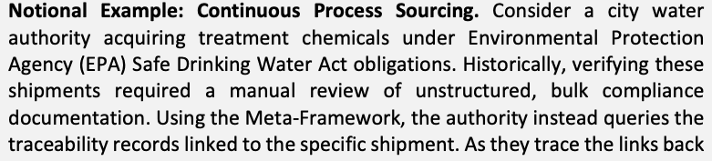
Notional Example: Discrete Manufacturing Procurement. Consider a state Department of Transportation (DOT) procuring steel girders for a bridge rehabilitation project that must simultaneously satisfy Buy America requirements, environmental compliance standards, and structural-grade certifications. Traditionally, the DOT would have to manage three separate verification workstreams. The DOT can use aggregated traceability data from the traceability chain to map each prospective supplier's provenance across all three obligation sets in a single, consolidated view. This allows the project engineer, procurement officer, and agency counsel to confirm that their respective requirements are met through a single shared decision-support framework.
原本PDFの抜粋画像
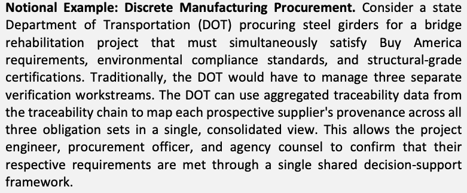
概念的な例：個別製造の調達。州の運輸局（DOT）が、橋の改修プロジェクトのために鋼製の桁を調達する場合を考えます。このプロジェクトは、Buy America 要件、環境コンプライアンス基準、構造用グレードの認証を同時に満たさなければなりません。従来、DOT は三つの別個の検証作業を管理しなければなりませんでした。DOT は、トレーサビリティチェーンから集約したトレーサビリティデータを使って、有力な各サプライヤの来歴を三つの義務の組すべてについて、単一の統合された視点で対応付けることができます。これにより、プロジェクトの技術者、調達担当者、機関の法律顧問は、単一の共有された意思決定支援のフレームワークを通じて、それぞれの要件が満たされていることを確認できます。
Aligning to this principle shifts the focus from data hoarding to targeted intelligence. Individual traceability records should be structured to support SCRM decisions, including procurement requirements and regulatory obligations. Additionally, supply chain specialists should not be the sole consumers of this information. Instead, this data must be presented in ways that multiple organizational functions (e.g., engineering, legal, and operational teams) can easily interpret and apply. This approach also encourages data minimization and helps prevent the over-collection of proprietary data, ensuring that suppliers share only the external traceability data necessary to support the specific decision-making process. By centering the framework on SCRM processes and related decisions required by the acquiring organization (whether an intermediate manufacturer or the final acquirer), traceability systems avoid becoming burdensome reporting exercises and instead function as targeted decision-support capabilities.
この原則に沿うことで、焦点はデータの抱え込みから、的を絞ったインテリジェンスへと移ります。個々のトレーサビリティ記録は、調達要件や規制上の義務を含む SCRM 判断を支えるように構造化すべきです。また、サプライチェーンの専門家だけがこの情報の唯一の利用者であってはなりません。むしろこのデータは、複数の組織機能（たとえば、技術、法務、運用の各チーム）が容易に解釈し、適用できる形で提示しなければなりません。このアプローチは、データ最小化も促し、専有データの過剰な収集を防ぐ助けとなって、サプライヤが、特定の意思決定プロセスを支えるために必要な外部向けトレーサビリティデータだけを共有するようにします。調達する組織（中間の製造事業者であれ最終的な調達者であれ）が必要とする SCRM プロセスと関連する判断をフレームワークの中心に据えることで、トレーサビリティシステムは負担の大きい報告作業になることを避け、的を絞った意思決定支援の機能として働きます。
3.2. Principle 2. Proportional, Risk-Scaled Traceability
3.2. 原則 2：リスクに応じた比例的なトレーサビリティ
The depth, rigor, and resolution of traceability data should be scaled in proportion to a product’s mission impact, safety criticality, and systemic risk. Applying a uniform level of scrutiny to every component is neither practical nor efficient. This helps ensure traceability investments and supplier burdens are proportional to the operational consequences of failure. Traceability should be graduated, recognizing that a critical industrial control system requires a different level of provenance validation than a commercial-off-the-shelf office peripheral.
トレーサビリティデータの深さ、厳密さ、粒度は、製品のミッションへの影響、安全上の重要度、システム的リスクに比例して調整すべきです。すべての部品に一律の水準の精査を適用することは、現実的でも効率的でもありません。これにより、トレーサビリティへの投資とサプライヤの負担が、障害の運用上の結果に比例することを確保しやすくなります。トレーサビリティは段階的にすべきであり、重要な産業用制御システムは、市販の既製品（COTS）の事務用周辺機器とは異なる水準の来歴検証を必要とすることを認識すべきです。
原本PDFの抜粋画像
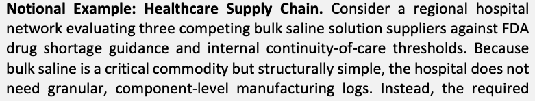
Notional Example: Critical Infrastructure Procurement. Consider a regional electric utility procuring substation automation equipment that must meet North American Electric Reliability Corporation Critical Infrastructure Protection (NERC CIP) compliance requirements. Because of the high systemic risk, the traceability records for acquired substation products are structured to provide deep, component-level answers (e.g., the country of origin for covered sub-components and component inventories. This data can then be mapped against known vulnerability databases and supplier ownership registries for foreign adversary screening. The utility's compliance teams can use these enriched results immediately. The rigorous level of tracing applied here is directly proportional to the catastrophic risk posed by a compromised electrical substation.
原本PDFの抜粋画像
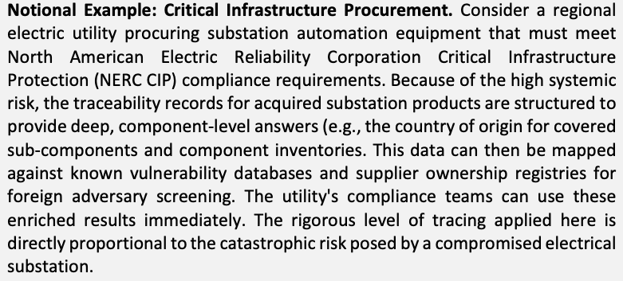
概念的な例：重要インフラの調達。地域の電力会社が、北米電力信頼度協議会の重要インフラ保護（NERC CIP）コンプライアンス要件を満たす必要がある変電所自動化機器を調達する場合を考えます。システム的リスクが高いため、調達する変電所製品のトレーサビリティ記録は、部品レベルの詳細な情報（たとえば、規制対象のサブコンポーネントの原産国や部品在庫など）を提供するように構造化されます。このデータは、外国の敵対者をスクリーニングするため、既知の脆弱性データベースやサプライヤ所有者登録簿と照合できます。電力会社のコンプライアンスチームは、これらの拡充された結果をすぐに利用できます。ここで適用される厳格な追跡の水準は、危殆化した変電所がもたらす壊滅的なリスクに直接比例しています。
Aligning with this principle ensures traceability operates as a proportional, risk-driven capability. Acquirers should focus on provenance information that directly affects operational availability, integrity, safety, security, resilience, and recoverability. By scoping required traceability records strictly to their relevance to decisions and the component’s criticality, organizations avoid imposing unnecessary data collection and reporting burdens on suppliers while still securing their most vital operational assets.
この原則に沿うことで、トレーサビリティは、比例的でリスクに基づく機能として働きます。調達者は、運用上の可用性、完全性、安全性、セキュリティ、レジリエンス、復旧可能性に直接影響する来歴情報に焦点を当てるべきです。必要なトレーサビリティ記録を、判断への関連性と部品の重要度に厳密に絞り込むことで、組織は、サプライヤに不必要なデータ収集と報告の負担を課すことを避けつつ、最も重要な運用資産を確保できます。
3.3. Principle 3. Incentive-Aligned Participation
3.3. 原則 3：インセンティブに整合した参加
A minimum viable traceability implementation requires sufficient incentives to motivate upstream supply chain participants to write and share records. The traceability framework should align economic, operational, and risk-based incentives so that all participating tiers of the supply chain are motivated to generate, maintain, and share traceability data. This alignment helps ensure the data is usable by downstream decision-makers without imposing a disproportionate reporting burden or requiring uniform technological capabilities from participants.
最小限の実行可能なトレーサビリティの実装には、上流のサプライチェーンの参加者が記録を書き込んで共有する動機となる、十分なインセンティブが必要です。トレーサビリティのフレームワークは、サプライチェーンのすべての参加階層が、トレーサビリティデータを生成し、維持し、共有する動機を持つように、経済的、運用上、リスクに基づくインセンティブを整合させるべきです。この整合により、参加者に不釣り合いな報告負担を課したり、一様な技術的能力を求めたりすることなく、データを下流の意思決定者が使える状態にしやすくなります。
原本PDFの抜粋画像
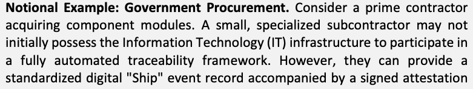
Notional Example: Industrial Chemical Sourcing. Consider a chemical supplier producing industrial solvents that may provide a basic traceability record for their finished batch, but cannot digitally link that record back to the specific "Receive" events for their incoming raw materials. Downstream procuring organizations can establish voluntary, recognized accreditations for suppliers who link their event records to their upstream supply network. Achieving this "trusted supplier" status allows the chemical manufacturer to elevate their market standing, streamline compliance checks, and access preferred procurement tiers. This encourages a gradual expansion of traceability data tied directly to positive market incentives and brand differentiation, without ever requiring the supplier to expose their proprietary manufacturing formulas or internal equipment logs.
原本PDFの抜粋画像
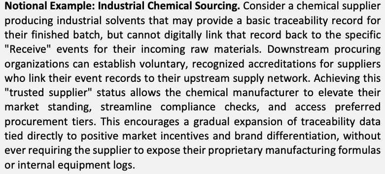
概念的な例：工業用化学品の調達。工業用溶剤を生産する化学品サプライヤが、完成したバッチについて基本的なトレーサビリティ記録を提供する場合がありますが、その記録を、入荷した原材料の個別の "Receive" イベントまでデジタルでさかのぼって連結できない場合を考えます。下流の調達組織は、イベント記録を上流のサプライネットワークに連結するサプライヤ向けに、任意で取得できる公認の認定を設けることができます。この「信頼できるサプライヤ」の地位を得ることで、化学品の製造事業者は市場での地位を高め、コンプライアンス確認を合理化し、優遇される調達階層にアクセスできます。これは、サプライヤに専有の製造配合や内部の設備ログを開示させることなく、前向きな市場インセンティブとブランドの差別化に直接結び付いたトレーサビリティデータの段階的な拡大を促します。
Notional Example: Software Supply Chain and Build Provenance. Consider a critical infrastructure acquirer procuring operational software. A software supplier provides a component inventory without verifiable build provenance that aligns with industry-recognized secure software development frameworks. The acquirer accepts the product based on the component inventories provided but assigns the software a higher operational risk score and requires additional compensating controls for deployment. However, suppliers that mature their capabilities to provide digitally linked traceability records, connecting software artifacts to attested, secure build environments and upstream open-source components using interoperable standards, are granted preferred vendor status and accelerated accreditation. This creates deeper cybersecurity transparency with a procurement advantage, incentivizing the suppliers to improve their software traceability without excluding them from the initial bid.
原本PDFの抜粋画像
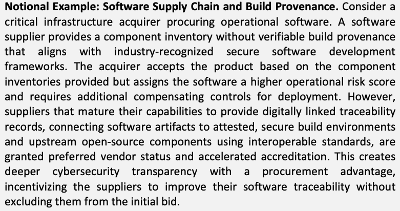
概念的な例：ソフトウェアサプライチェーンとビルドの来歴。重要インフラの調達者が運用ソフトウェアを調達する場合を考えます。あるソフトウェアサプライヤは、業界で認められた安全なソフトウェア開発フレームワークに整合する、検証可能なビルドの来歴を伴わないコンポーネントインベントリを提供します。調達者は、提供されたコンポーネントインベントリに基づいて製品を受け入れますが、そのソフトウェアにより高い運用リスクスコアを割り当て、配備に際して追加の代替管理策を要求します。一方、相互運用可能な標準を用いて、ソフトウェアのアーティファクトを、証明された安全なビルド環境と上流のオープンソースコンポーネントに結び付ける、デジタルに連結されたトレーサビリティ記録を提供できるよう能力を成熟させたサプライヤには、優遇ベンダーの地位と迅速な認定が与えられます。これにより、調達上の優位性を伴うより深いサイバーセキュリティの透明性が生まれ、最初の入札から除外することなく、サプライヤがソフトウェアのトレーサビリティを改善する動機となります。
Aligning with this principle recognizes that voluntary participation in traceability efforts increases significantly when suppliers receive tangible economic or operational benefits, such as preferred sourcing status, reduced audit frequency, or accelerated payments. Traceability maturity should be encouraged to evolve incrementally across the supply chain. Demanding immediate, uniform compliance could stifle progress. Scaling participation based on business incentives, capacity, and risk helps ensure that critical suppliers are not excluded due to temporary capability gaps, fostering a more resilient and transparent supply base over time.
この原則に沿うことは、サプライヤが、優遇される調達先としての地位、監査頻度の低減、支払いの早期化といった具体的な経済的または運用上の利益を得る場合に、トレーサビリティの取り組みへの任意の参加が大きく増えることを認識することです。トレーサビリティの成熟度は、サプライチェーン全体で段階的に進化するよう促すべきです。即時かつ一律のコンプライアンスを求めると、進展を妨げる可能性があります。事業上のインセンティブ、能力、リスクに基づいて参加を調整することで、重要なサプライヤが一時的な能力のギャップを理由に除外されないようにしやすくなり、時間をかけて、よりレジリエンスがあり透明なサプライベースを育てられます。
3.4. Principle 4. Evidence-Based Provenance, Not Perfect Transparency
3.4. 原則 4：完全な透明性ではなく、証拠に基づく来歴
When direct, continuous supplier data is unavailable, either due to a lack of upstream digital records or to protect sensitive trade secrets, traceability should rely on verifiable alternative evidence rather than on absolute transparency. Demanding uninterrupted digital event data across every tier of a supply chain is often impractical and can disincentivize supplier participation by threatening their intellectual property.
上流のデジタル記録がないか、機微な企業秘密を保護するために、サプライヤから直接の連続したデータが得られない場合、トレーサビリティは、絶対的な透明性ではなく、検証可能な代替の証拠に頼るべきです。サプライチェーンのあらゆる階層にわたって途切れのないデジタルイベントデータを求めることは、非現実的であることが多く、サプライヤの知的財産を脅かすことで、参加の意欲を削ぐおそれがあります。
Instead, traceability approaches should utilize bounded disclosures (sharing only the specific data necessary to satisfy a risk or compliance requirement rather than the underlying intellectual property). In practice, this means suppliers can encapsulate alternative proof of provenance (e.g., digital attestations, certifications, scanned third-party audits) as part of the data “payload” of a standard traceability record. This allows the overall traceability chain to remain unbroken, supporting acquirer validation without exposing the supplier's proprietary details.
そのかわりに、トレーサビリティのアプローチは、範囲を限定した開示（リスクやコンプライアンスの要件を満たすために必要な特定のデータだけを共有し、基になる知的財産は共有しないこと）を利用すべきです。実際には、これは、サプライヤが来歴の代替の証明（たとえば、デジタルの証明書、認証、スキャンした第三者監査）を、標準的なトレーサビリティ記録のデータ「ペイロード」の一部としてカプセル化できることを意味します。これにより、トレーサビリティチェーン全体が途切れないまま、サプライヤの専有の詳細を明らかにすることなく、調達者による検証を支えられます。
Notional Example: Commodity Sourcing and Non-Digital Origins. When the automotive industry attempts to establish a vehicle's provenance, bulk materials such as leather often lack a continuous digital trail back to their origins. Forcing the creation of a fully digitized, end-to-end chain of events back to the individual ranch is often technologically or economically prohibitive. Consequently, the traceability system should accept alternative verifiable evidence. A bulk leather supplier that provides a verified attestation of origin, along with references to physical records or third-party sourcing certifications on which that attestation is based, serves as acceptable evidence of provenance instead of perfect digital continuity.
原本PDFの抜粋画像
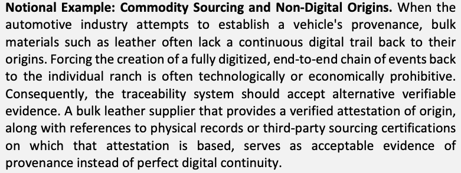
概念的な例：商品の調達とデジタルでない出所。自動車業界が車両の来歴を確立しようとするとき、革などのバルク材料は、その出所まで連続したデジタルの足跡が残っていないことがよくあります。個々の牧場までさかのぼる、完全にデジタル化されたエンドツーエンドのイベントの連鎖を無理に作らせることは、技術的または経済的に実現不可能であることが多くあります。したがって、トレーサビリティシステムは、検証可能な代替の証拠を受け入れるべきです。検証済みの原産地の証明書と、その証明書の根拠となる物理的な記録や第三者の調達認証への参照を提供するバルクレザーのサプライヤは、完全なデジタルの連続性のかわりに、来歴の許容できる証拠となります。
Notional Example: Intellectual Property Protection. Consider a defense acquirer procuring specialized microelectronics. The supplier's exact manufacturing techniques, chemical formulations, and specific tier-3 component sources may constitute highly guarded trade secrets. By allowing the supplier to provide a bounded disclosure, the traceability approach eliminates the need for absolute transparency that would otherwise expose their IP to downstream competitors. The supplier writes a traceability record containing a conformance attestation verifying that all underlying components meet specific regulatory requirements (e.g., sourcing only from approved countries), and a third-party audit certificate may support the record. This evidence helps provide the acquirer with the necessary assurance without compromising the supplier's proprietary business intelligence.
原本PDFの抜粋画像
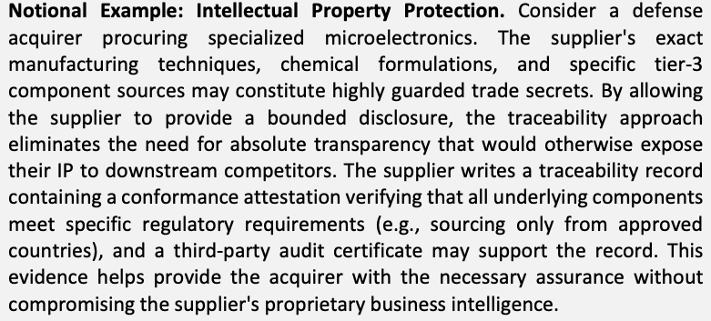
概念的な例：知的財産の保護。防衛関連の調達者が特殊なマイクロエレクトロニクスを調達する場合を考えます。サプライヤの正確な製造技術、化学配合、特定のティア 3 の部品調達元は、厳重に守られた企業秘密に当たる可能性があります。サプライヤが範囲を限定した開示を提供できるようにすることで、トレーサビリティのアプローチは、そうでなければ自社の知的財産を下流の競合他社にさらしてしまう、絶対的な透明性の必要性をなくします。サプライヤは、すべての基になる部品が特定の規制要件（たとえば、承認された国からのみ調達すること）を満たしていることを検証する適合性の証明書を含むトレーサビリティ記録を書き込み、第三者監査の証明書がその記録を裏付ける場合もあります。この証拠は、サプライヤの専有の事業インテリジェンスを損なうことなく、調達者に必要な保証を与える助けとなります。
原本PDFの抜粋画像
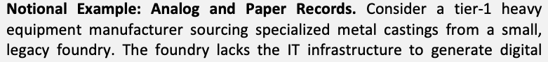
Aligning with this principle shifts the industry mindset away from an unrealistic standard of omniscient supply chain visibility. It recognizes that digital traceability chains will occasionally reach points where continuous digital event data ceases due to technological limitations or proprietary boundaries. When this occurs, multiple forms of alternative evidence can be acceptable and valid within a traceability chain, including digitized legacy paper records, scanned physical manifests, physical certifications, audits, conformance attestations, and regulatory filings. By deliberately designing traceability records to accommodate bounded disclosures, acquirers enable their suppliers to protect trade secrets, national or regional interests, and upstream contractual commitments.
この原則に沿うことで、業界の考え方は、すべてを見通すサプライチェーンの可視性という非現実的な基準から離れます。デジタルのトレーサビリティチェーンは、技術的な限界や専有の境界のために、連続したデジタルイベントデータが途切れる地点に、時には達することを認識しています。その場合、デジタル化した旧来の紙の記録、スキャンした物理的な積荷明細書、物理的な認証、監査、適合性の証明書、規制当局への提出書類など、複数の形式の代替の証拠が、トレーサビリティチェーン内で許容され、有効となり得ます。範囲を限定した開示に対応するようにトレーサビリティ記録を意図的に設計することで、調達者は、サプライヤが企業秘密、国や地域の利益、上流の契約上の約束を守れるようにします。
However, relying on alternative evidence requires the acquirer to carefully assess the level of assurance in the claims. Because bounded disclosures and attestations abstract the underlying data, they may warrant additional scrutiny. There is no universally fixed minimum threshold for acceptable alternative evidence; rather, the appropriate threshold is determined by the acquiring organization based on the item's operational risk. For example, to mitigate the risk of fraudulent claims (e.g., a supplier falsely attesting to a "Made in the USA" country of origin while masking overseas sourcing of components), an acquirer may require third-party verification, conduct random physical audits, or assign a higher risk score to the acquired item. Ultimately, the traceability chain can be used to securely carry alternative evidence while leaving the trust and verification decisions to the acquirer's SCRM processes.
ただし、代替の証拠に頼る場合、調達者は主張の保証の水準を慎重に評価する必要があります。範囲を限定した開示や証明書は基になるデータを抽象化しているため、追加の精査が必要な場合があります。許容できる代替の証拠に、普遍的に定まった最低限の基準値はありません。むしろ、適切な基準値は、品目の運用リスクに基づいて、調達する組織が決定します。たとえば、虚偽の主張のリスク（たとえば、サプライヤが原産国を "Made in the USA" と偽って証明し、部品の海外調達を隠す場合）を緩和するために、調達者は、第三者による検証を求めたり、無作為の物理的な監査を行ったり、調達品により高いリスクスコアを割り当てたりすることがあります。最終的に、トレーサビリティチェーンは、代替の証拠を安全に運ぶために使用でき、信頼と検証の判断は調達者の SCRM プロセスに委ねられます。
3.5. Principle 5. Measure and Communicate Traceability Gaps and Trust Boundaries
3.5. 原則 5：トレーサビリティのギャップと信頼境界の測定と伝達
In real-world supply chains, data will occasionally be missing, incomplete, or inaccessible. Traceability chains should allow for the explicit identification of data gaps and trust boundaries. While specific data standards will define their own exact vocabularies, systems should distinguish between states such as "unknown," "withheld," "not applicable," and "unreachable." Whether these gaps are proactively recorded by a supplier or discovered dynamically as a broken link during an acquirer's analysis, the overarching approach should gracefully handle them. Missing information should not be omitted, falsely interpolated, or treated as a catastrophic failure. Deliberately illuminating these distinct states provides acquirers with an honest assessment of supply chain opacity. This enables acquirers to make informed, defensible risk decisions even when conditions are imperfect.
実際のサプライチェーンでは、データが欠けていたり、不完全だったり、アクセスできなかったりすることが時にあります。トレーサビリティチェーンでは、データのギャップと信頼境界を明示的に識別できるようにすべきです。個々のデータ標準が独自の厳密な語彙を定めるにしても、システムは、"unknown"（不明）、"withheld"（差し控え）、"not applicable"（該当なし）、"unreachable"（到達不能）といった状態を区別すべきです。これらのギャップが、サプライヤによって事前に記録されるか、調達者の分析中に途切れたリンクとして動的に発見されるかにかかわらず、全体的なアプローチは、それらを適切に扱うべきです。欠けている情報を省いたり、誤って補間したり、致命的な障害として扱ったりしてはなりません。これらの異なる状態を意図的に明らかにすることで、調達者はサプライチェーンの不透明さについて誠実な評価を得られます。これにより調達者は、状況が完全でない場合でも、情報に基づく根拠のあるリスク判断を下せます。
Notional Example: Legacy Data Gaps in Aviation. Consider a Maintenance, Repair, and Overhaul (MRO) facility acquiring a used aircraft part whose complete operational history and original pedigree lack full digital documentation. The traceability system does not attempt to present an artificially clean record or outright reject the part due to this missing information. Instead, the historical maintenance events are explicitly marked within the traceability chain as "not available—pre-digital archive." Because this trust boundary is actively communicated, the MRO facility knows exactly where digital provenance begins and ends. They can then implement appropriate compensating physical inspection protocols, preventing them from unknowingly assuming the part's history is complete or discarding a usable component.
原本PDFの抜粋画像
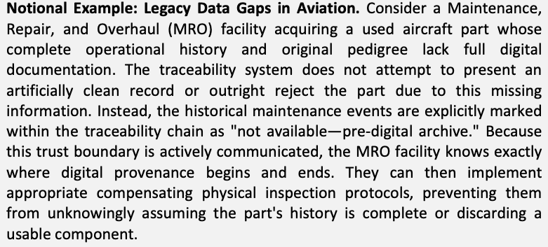
概念的な例：航空分野の旧来のデータのギャップ。整備・修理・オーバーホール（MRO）施設が、完全な運用履歴と元の系譜がデジタルで十分に文書化されていない中古の航空機部品を調達する場合を考えます。トレーサビリティシステムは、この欠けている情報のために、人為的に整った記録を示そうとしたり、部品を即座に拒否したりしません。代わりに、過去の整備イベントは、トレーサビリティチェーン内で "not available—pre-digital archive" として明示的にマークされます。この信頼境界が積極的に伝達されるため、MRO 施設は、デジタルの来歴がどこで始まりどこで終わるかを正確に把握できます。そのうえで、適切な代替の物理検査手順を実施でき、部品の履歴が完全であると知らずに思い込んだり、使用可能な部品を廃棄したりすることを防げます。
Notional Example: Operational Data Gaps in Healthcare. Consider a shipment of cold-chain pharmaceuticals in which a temperature sensor goes offline for 4 hours during a cross-border transfer. The traceability system avoids mathematically interpolating the missing data to artificially complete the chart or automatically rejecting the entire shipment. Instead, the specific event window is explicitly recorded in the traceability chain as "unknown—sensor offline." A hospital pharmacist reviewing the provenance data can clearly see the bounded gap and apply their own clinical risk thresholds before dispensing the medication.
原本PDFの抜粋画像
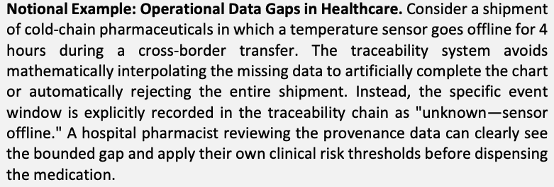
概念的な例：医療における運用データのギャップ。コールドチェーンで運ぶ医薬品の出荷で、国境を越える移送中に温度センサーが 4 時間オフラインになる場合を考えます。トレーサビリティシステムは、欠けているデータを数学的に補間してグラフを人為的に完成させたり、出荷全体を自動的に拒否したりすることを避けます。代わりに、その特定のイベント期間は、トレーサビリティチェーン内で "unknown—sensor offline" として明示的に記録されます。来歴データを確認する病院の薬剤師は、範囲が限定されたギャップを明確に把握でき、医薬品を調剤する前に自らの臨床リスクの基準値を適用できます。
Notional Example: Structural Gaps and Broken Chains. Consider an industrial equipment manufacturer attempting to trace the provenance of a critical microchip sourced through a third-party distributor. The distributor provides a valid "Receive" record, but the reference to the original manufacturer's "Ship" event points to an inaccessible repository. This could occur because the original manufacturer went out of business, suffered a technical outage, or purged the record in accordance with their data retention policies. The traceability chain does not fail silently or break the acquirer's SCRM tool; it deliberately illuminates this structural break. The acquirer can factor this trust boundary into their analysis, perhaps assigning a higher risk score to the component and requiring independent testing before integration.
原本PDFの抜粋画像
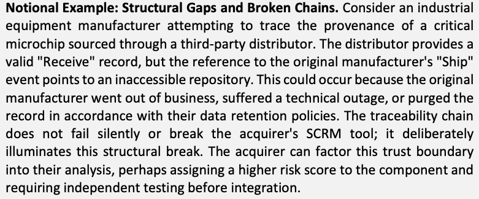
概念的な例：構造的なギャップと途切れたチェーン。産業機器の製造事業者が、第三者の流通業者を経由して調達した重要なマイクロチップの来歴を追跡しようとする場合を考えます。流通業者は有効な "Receive" 記録を提供しますが、元の製造事業者の "Ship" イベントへの参照は、アクセスできないリポジトリを指しています。これは、元の製造事業者が廃業した、技術的な障害が発生した、またはデータ保持ポリシーに従って記録を削除した、といった理由で起こり得ます。トレーサビリティチェーンは、黙って失敗したり、調達者の SCRM ツールを壊したりすることなく、この構造的な断絶を意図的に明らかにします。調達者は、この信頼境界を分析に織り込むことができ、たとえば、部品により高いリスクスコアを割り当て、組み込む前に独立したテストを求めることもあります。
Aligning with this principle helps ensure that supply chain risk management becomes more transparent and defensible. By carrying these distinct risk signals forward, a known data gap, whether declared by a participant or identified as a broken link, becomes highly valuable intelligence. It allows the acquirer to decide whether to accept the uncertainty, quarantine the affected units, trigger a supplier audit, or implement compensating controls. Conversely, approaches that hide gaps or force a binary "compliant/non-compliant" status foster false confidence and brittle supply chains.
この原則に沿うことで、サプライチェーンリスクマネジメントがより透明で根拠のあるものになる助けとなります。これらの異なるリスクの兆候を先へ伝えることで、参加者が宣言したものであれ、途切れたリンクとして識別されたものであれ、既知のデータのギャップは非常に価値のあるインテリジェンスになります。これにより調達者は、不確実性を受け入れるか、影響を受けた製品を隔離するか、サプライヤ監査を開始するか、代替管理策を実施するかを決定できます。逆に、ギャップを隠したり、"compliant/non-compliant"（準拠／非準拠）という二値の状態を強制したりするアプローチは、誤った安心感と脆弱なサプライチェーンを助長します。
3.6. Principle 6. Lifecycle-Oriented Provenance and Accountability
3.6. 原則 6：ライフサイクルを指向した来歴と説明責任
A manufactured product is rarely static; it undergoes modifications, firmware updates, repackaging, and component substitutions as it moves through distributors and integrators and ultimately into the hands of the acquirer. Traceability should extend across the product's lifecycle to reflect these updates and operational events. This helps ensure that the traceability chain remains a living timeline of the product's actual composition, allowing acquirers to accurately map external threat intelligence against the current state of their assets.
製造された製品が不変であることはまれで、流通業者やインテグレータを経て最終的に調達者の手に渡るまでの間に、変更、ファームウェアの更新、再梱包、部品の置き換えを受けます。トレーサビリティは、これらの更新や運用上のイベントを反映するために、製品のライフサイクル全体に及ぶべきです。これにより、トレーサビリティチェーンが製品の実際の構成を示す生きた時系列であり続けることを確保しやすくなり、調達者は、外部の脅威インテリジェンスを自らの資産の現在の状態と正確に対応付けられます。
Notional Example: Firmware Updates and Continuous SCRM. Consider an industrial controller that sits in a distributor's inventory for six months before being acquired by a regional power grid operator. During that time, the distributor applies a critical firmware update. The traceability framework is used to capture this "Update" event and appends the new component inventories to the controller's existing traceability chain. Months later, when a zero-day vulnerability is announced on the National Vulnerability Database (NVD), the grid operator's SCRM system queries the controller's traceability chain. Because the chain extends beyond the original factory state to reflect the updated lifecycle composition, the operator can accurately assess their exposure to the vulnerability from NVD without physically inspecting the deployed hardware.
原本PDFの抜粋画像
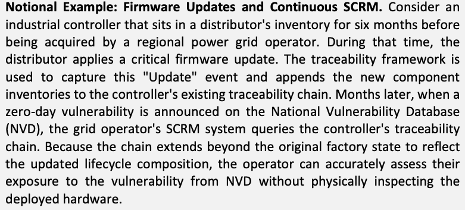
概念的な例：ファームウェアの更新と継続的な SCRM。産業用コントローラが流通業者の在庫に 6 か月置かれたのち、地域の送電網運用者に調達される場合を考えます。その間に、流通業者は重要なファームウェア更新を適用します。トレーサビリティのフレームワークは、この "Update" イベントを取得するために使用され、新しいコンポーネントインベントリをコントローラの既存のトレーサビリティチェーンに追加します。数か月後、National Vulnerability Database（NVD）でゼロデイ脆弱性が公表されると、送電網運用者の SCRM システムは、コントローラのトレーサビリティチェーンに問い合わせます。チェーンが元の工場出荷時の状態を超えて、更新後のライフサイクル上の構成を反映しているため、運用者は、配備されたハードウェアを物理的に検査しなくても、NVD の脆弱性に対する自らの曝露を正確に評価できます。
Notional Example: Material Repackaging and Recall Response. Consider a bulk chemical preservative manufactured, shipped to a regional distribution hub, and split and repackaged into smaller drums for delivery to various industrial facilities. The traceability chain records the consolidation and splitting events, linking the smaller containers back to the original bulk lot. If the original manufacturer later issues a recall due to contamination, the acquirers' facilities managers can use the traceability data to cross-reference the recalled lot number against their active inventory. Because the chain tracks the physical lifecycle of the material, not just the initial point of origin, they can immediately identify which specific sub-batches contain the affected preservative and intercept them before use.
原本PDFの抜粋画像
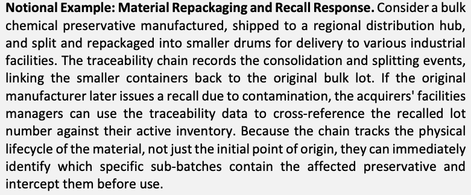
概念的な例：材料の再梱包とリコール対応。バルクの化学保存料が製造され、地域の配送拠点に出荷されたのち、小分けされて小さなドラム缶に再梱包され、さまざまな産業施設に届けられる場合を考えます。トレーサビリティチェーンは、統合と分割のイベントを記録し、小さな容器を元のバルクロットに結び付けます。元の製造事業者が後に汚染を理由にリコールを発表した場合、調達者の施設管理者は、トレーサビリティデータを使って、リコール対象のロット番号を現在の在庫と照合できます。チェーンは材料の最初の出所の地点だけでなく、物理的なライフサイクルを追跡しているため、どの特定のサブバッチに影響を受けた保存料が含まれているかをただちに識別し、使用前に回収できます。
Aligning with this principle shifts traceability from a one-time compliance check into a continuous accountability mechanism. Traceability records should be updated to reflect significant changes in the physical or digital makeup of the acquired item. By maintaining a continuous, lifecycle-oriented record, organizations help ensure that their SCRM tools are querying an accurate representation of the product. This provenance data can also remain actionable for vulnerability response, product recalls, and incident investigations long after the initial procurement has concluded.
この原則に沿うことで、トレーサビリティは、一度きりのコンプライアンス確認から、継続的な説明責任の仕組みへと移ります。トレーサビリティ記録は、調達した品目の物理的またはデジタルの構成に生じた重大な変更を反映するように更新すべきです。継続的でライフサイクルを指向した記録を維持することで、組織は、自らの SCRM ツールが製品の正確な表現に問い合わせていることを確保しやすくなります。この来歴データは、最初の調達が終わった後も長く、脆弱性への対応、製品のリコール、インシデントの調査に対して実行可能なまま保てます。
3.7. Principle 7. Verifiable Organization Attribution
3.7. 原則 7：検証可能な組織の帰属
Identity is the foundation of accountability in any supply chain network. Acquirers should be able to definitively associate a specific supply chain event record with the organization that authored it. To support this, traceability records should include a positive, structural declaration of the accountable organization utilizing standard, verifiable identifiers (e.g., Global Location Number (GLN), Legal Entity Identifier (LEI), Data Universal Numbering System (DUNS) number, or Unique Entity Identifier (UEI)). Furthermore, to support effective risk management, this attribution should extend beyond the enterprise level to identify the specific organizational unit or facility where the event occurred, while intentionally avoiding the targeting of individual employees.
ID は、あらゆるサプライチェーンネットワークにおける説明責任の基盤です。調達者は、特定のサプライチェーンイベント記録を、それを作成した組織に確実に関連付けられるようにすべきです。これを支えるため、トレーサビリティ記録には、標準的で検証可能な識別子（たとえば、Global Location Number（GLN）、Legal Entity Identifier（LEI）、Data Universal Numbering System（DUNS）番号、またはUnique Entity Identifier（UEI））を用いて、説明責任を負う組織を明示的かつ構造化された形で宣言する情報を含めるべきです。さらに、効果的なリスクマネジメントを支えるため、この帰属は企業レベルを超え、イベントが発生した特定の組織単位または施設を識別する範囲まで広げるべきです。その際、個々の従業員を対象とすることは意図的に避けるべきです。
Notional Example: Enterprise-Level Attribution. Consider a commercial software vendor releasing a new application. The vendor publishes a traceability event containing component inventories. Within the core structure of that record, the vendor includes their globally registered UEI. This simple, positive association enables downstream acquirers' automated systems to attribute software composition claims correctly to the specific corporate entity responsible for the product, distinguishing it from open-source forks or unauthorized redistributions.
原本PDFの抜粋画像
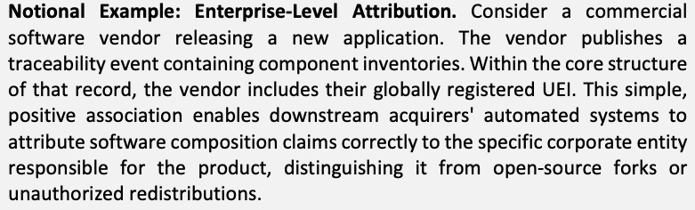
概念的な例：企業レベルの帰属。商用ソフトウェアのベンダーが新しいアプリケーションをリリースする場合を考えます。ベンダーは、コンポーネントインベントリを含むトレーサビリティイベントを公開します。その記録の中核的な構造に、ベンダーは世界的に登録された自社の UEI を含めます。この単純で肯定的な関連付けにより、下流の調達者の自動化システムは、ソフトウェア構成に関する主張を、製品に責任を負う特定の企業主体に正しく帰属させることができ、オープンソースのフォークや無許可の再配布と区別できます。
Notional Example: Granular Unit-Level Attribution. Consider a global electronics manufacturer that produces the same router model at three facilities. A traceability record that only identifies the parent enterprise is insufficient for supply chain risk management. Instead, the traceability record is structurally designed to capture both the parent organization identifier and a specific organizational unit identifier (e.g., "Enterprise A, Factory 3"). If sanctions are later imposed on the region where Factory 3 is located, or if a localized quality defect is discovered there, the acquirer can use these identifiers to precisely isolate the affected routers in their inventory without unnecessarily quarantining the routers produced at Factories 1 and 2.
原本PDFの抜粋画像
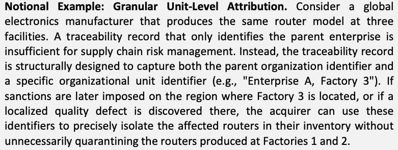
概念的な例：粒度の細かい組織単位レベルの帰属。世界的な電子機器の製造事業者が、同じルータのモデルを三つの施設で生産している場合を考えます。親企業だけを識別するトレーサビリティ記録は、サプライチェーンリスクマネジメントには不十分です。そこで、トレーサビリティ記録は、親組織の識別子と、特定の組織単位の識別子（たとえば "Enterprise A, Factory 3"）の両方を取得するように構造的に設計されます。後に、Factory 3 の所在する地域に制裁が課された場合や、そこで局所的な品質上の欠陥が見つかった場合に、調達者はこれらの識別子を使って、Factory 1 と Factory 2 で生産されたルータを不必要に隔離することなく、在庫内の影響を受けるルータを正確に切り分けられます。
Aligning with this principle helps ensure that every traceability record serves as a definitive statement of accountability. By embedding standardized organizational and unit-level identifiers directly into the traceability data model, traceability frameworks enable acquirers to map supply chain events to the specific corporate entities and physical locations responsible for them. This creates a highly functional, scalable foundation for supporting decentralized trust without overcomplicating the core data structure with complex cryptographic mandates.
この原則に沿うことで、すべてのトレーサビリティ記録が説明責任の確定的な表明として機能することを確保しやすくなります。標準化された組織および組織単位レベルの識別子をトレーサビリティのデータモデルに直接組み込むことで、トレーサビリティのフレームワークは、調達者がサプライチェーンイベントを、それに責任を負う特定の企業主体と物理的な場所に対応付けられるようにします。これにより、複雑な暗号上の義務で中核のデータ構造を過度に複雑にすることなく、分散型の信頼を支えるための、非常に機能的で拡張性のある基盤が作られます。
3.8. Principle 8. Cyber-Physical and Digital Linkage
3.8. 原則 8：サイバーフィジカルおよびデジタルの連結
The integrity of any traceability system relies on the strength of the connection between the provenance record and the actual item it represents. If a legitimate digital provenance record can be easily decoupled and reassigned to a counterfeit physical item or an altered software binary, the traceability data loses its value for SCRM. Traceability efforts should ensure that records can be definitively and verifiably associated with the specific instance of a physical product, digital asset, or batch they describe. To maintain this anchor of trust, a persistent identifier should be reliably associated with the tracked item. For physical products, this involves leveraging markers like barcodes, QR codes, or Physically Unclonable Functions (PUFs); for purely digital products, this linkage should rely on cryptographic hashes or digital signatures to securely bind the digital asset to its historical record.
あらゆるトレーサビリティシステムの完全性は、来歴記録と、それが表す実際の品目との結び付きの強さに依存します。正当なデジタル来歴記録が、偽造された物理的な品目や改変されたソフトウェアバイナリに簡単に切り離されて付け替えられてしまうと、トレーサビリティデータはSCRMにおける価値を失います。トレーサビリティの取り組みでは、記録を、それが記述する物理的な製品、デジタル資産、またはバッチの特定のインスタンスに、確実かつ検証可能に関連付けられるようにすべきです。この信頼のアンカーを維持するため、永続的な識別子を追跡対象の品目に確実に関連付けるべきです。物理的な製品では、バーコード、QRコード、物理複製困難関数（PUF）などのマーカーを活用します。純粋にデジタルな製品では、デジタル資産をその履歴記録に安全に結び付けるため、暗号ハッシュまたはデジタル署名に依拠すべきです。
Notional Example: Discrete Component Anti-Counterfeiting. Consider a defense contractor acquiring specialized networking switches. A malicious actor in the distribution chain might attempt to intercept a legitimate shipment, steal the authentic switches, and replace them with visually identical counterfeits while passing along the authentic digital traceability records. By laser-etching a unique and verifiable 2D data matrix directly onto the chassis of each instance of an authentic switch, the manufacturer establishes a secure anchor. When the acquirer receives the physical hardware, they scan the matrix, which verifiably bridges to the corresponding digital "Ship" and "Receive" records. Because the physical anchor cannot be easily removed or cloned onto a counterfeit chassis, the acquirer gains greater assurance to support their SCRM trust decisions.
原本PDFの抜粋画像
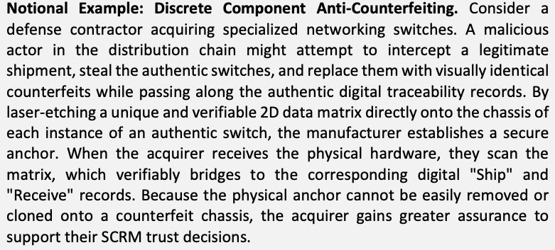
概念的な例：個別部品の偽造防止。防衛関連の請負事業者が専用のネットワークスイッチを調達する場合を考えます。流通経路にいる悪意のある行為者が、正規の出荷品を横取りし、本物のスイッチを盗んで、見た目が同一の偽造品に置き換えつつ、本物のデジタルトレーサビリティ記録をそのまま引き渡そうとするかもしれません。製造事業者は、本物のスイッチの各インスタンスの筐体に、一意で検証可能な 2 次元データマトリックスを直接レーザー刻印することで、安全なアンカーを確立します。調達者は物理的なハードウェアを受け取ると、そのマトリックスをスキャンし、対応するデジタルの "Ship" 記録および "Receive" 記録へと検証可能な形でつなぎます。物理的なアンカーは、簡単には取り外せず、偽造品の筐体に複製することもできないため、調達者は SCRM の信頼判断を支えるより高い保証を得られます。
Notional Example: Batch Integrity in Continuous Process Sourcing. Consider a pharmaceutical manufacturer acquiring bulk active pharmaceutical ingredients shipped in large industrial drums. Because liquids cannot be individually tagged, the cyber-physical linkage relies on securing the container. The supplier applies a tamper-evident Radio Frequency Identification (RFID) seal to the drum, linking the seal's unique digital signature to the specific digital batch record in the traceability chain. Upon arrival, the acquirer scans the physical seal. If the digital record matches but the physical seal shows signs of tampering, or the RFID signature fails validation, the acquirer gains actionable evidence that the cyber-physical link has been compromised, indicating that the physical contents may have been adulterated or substituted in transit.
原本PDFの抜粋画像
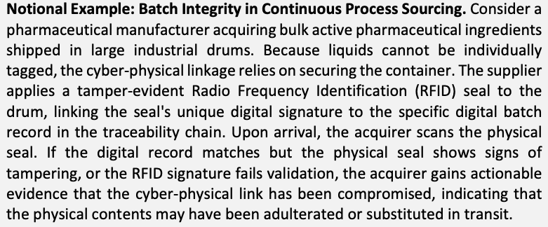
概念的な例：連続プロセスの調達におけるバッチの完全性。製薬会社が、大型の工業用ドラム缶で出荷されるバルクの医薬品有効成分を調達する場合を考えます。液体は個別にタグ付けできないため、サイバーフィジカルの連結は容器の保全に依拠します。サプライヤは、ドラム缶に不正開封防止の無線周波数識別（RFID）シールを貼り、そのシールの一意なデジタル署名を、トレーサビリティチェーン内の特定のデジタルバッチ記録に結び付けます。到着時に、調達者は物理的なシールをスキャンします。デジタル記録が一致していても物理的なシールに改ざんの形跡がある場合、またはRFID署名の検証に失敗する場合、調達者はサイバーフィジカルの連結が損なわれたことを示す、対応に活用できる証拠を得ます。これは、輸送中に中身に混ぜ物がされたか、すり替えられた可能性を示しています。
Aligning with this principle helps ensure that the physical product and digital assets moving through the supply chain are the true subjects of the shared provenance data. The rigor of this linkage should be scaled with the item's operational risk (as outlined in Principle 2). While a simple adhesive QR code or standard file checksum may suffice for commercial office supplies, high-risk operational technology may require more robust, tamper-evident physical identifiers or cryptographically signed binaries. Ultimately, establishing this firm anchor deters and detects the substitution of unverified products or altered software masquerading as legitimate digital records, allowing acquirers to gain greater assurance in the authenticity of what they are procuring.
この原則に沿うことで、サプライチェーンを移動する物理的な製品とデジタル資産が、共有された来歴データの真の対象であることを確保しやすくなります。この連結の厳密さは、品目の運用リスクに応じて調整すべきです（原則 2 で述べたとおり）。市販の事務用品には、単純な粘着式QRコードや標準的なファイルチェックサムで十分な場合がありますが、リスクの高い運用技術には、より堅牢で改ざんを検知できる物理的な識別子や、暗号署名付きのバイナリが必要な場合があります。最終的に、この確固とした基準点を確立することで、正当なデジタル記録を装う未検証の製品や改変ソフトウェアを抑止・検知でき、調達者は調達するものの真正性についてより高い保証を得られます。
3.9. Principle 9. Interoperability Over Uniformity
3.9. 原則 9：画一性よりも相互運用性
Global supply chains are highly heterogeneous, spanning different industries, industry sectors, domains, geographic locations, and levels of technological maturity. Attempting to enforce a single, uniform data model, centralized platform, or proprietary standard across all participants is practically impossible and may lead to vendor lock-in. Instead, traceability efforts should prioritize interoperability. A principled approach relies on standardized traceability links to securely connect independent supply chain events (traceability records), while allowing the associated pedigree data within those records to be expressed in industry-specific formats.
グローバルなサプライチェーンは非常に異質で、異なる産業、産業セクター、ドメイン、地理的な場所、技術的な成熟度の水準にまたがっています。すべての参加者に単一の画一的なデータモデル、集中型プラットフォーム、専有の標準を強制しようとすることは、現実的に不可能であり、ベンダーロックインにつながるおそれがあります。それよりも、トレーサビリティの取り組みは相互運用性を優先すべきです。原則に基づくアプローチでは、標準化されたトレーサビリティリンクに依拠して独立したサプライチェーンイベント（トレーサビリティ記録）を安全に接続しつつ、それらの記録内の関連する系譜データは、産業固有の形式で表現できるようにします。
Notional Example: Encapsulating Disparate Data Standards. Consider a defense prime contractor integrating Commercial Off-The-Shelf (COTS) networking equipment into a military communications system. The COTS supplier formats their traceability data using the Global Standards One (GS1) Electronic Product Code Information Services (EPCIS) standard, which is heavily adopted in retail logistics. In contrast, the defense contractor operates on a specialized defense-sector data exchange standard. Forcing the commercial supplier to completely retool its IT infrastructure would be a massive barrier to entry. Instead, the supplier can encapsulate their GS1 EPCIS data within a supply chain event record and explicitly declare this data type as part of the payload format. When the acquiring defense contractor's system receives it, it reads the format identifier, applies the appropriate parsing rules for GS1 EPCIS data, and seamlessly integrates the information.
原本PDFの抜粋画像
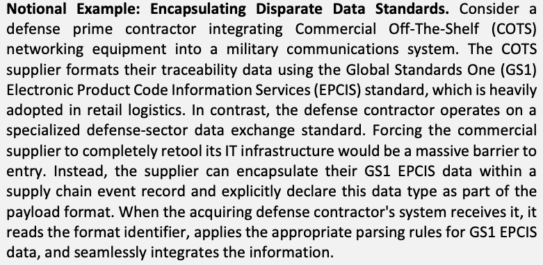
概念的な例：異なるデータ標準のカプセル化。防衛関連の元請事業者が、市販の既製品（COTS）のネットワーク機器を軍事通信システムに統合する場合を考えます。COTS のサプライヤは、小売物流で広く採用されている Global Standards One（GS1）の Electronic Product Code Information Services（EPCIS）標準でトレーサビリティデータを整形しています。これに対して、防衛関連の請負事業者は、専門的な防衛セクターのデータ交換標準で運用しています。商用サプライヤに IT インフラを完全に作り替えさせることは、大きな参入障壁になります。そこでサプライヤは、自らの GS1 EPCIS データをサプライチェーンイベント記録の中にカプセル化し、このデータ型をペイロード形式の一部として明示的に宣言できます。調達する防衛関連の請負事業者のシステムは、これを受け取ると、形式識別子を読み取り、GS1 EPCIS データに適した解析規則を適用して、情報をシームレスに統合します。
Notional Example: Navigating Heterogeneous Storage and Ensuring Integrity. Consider a medical device manufacturer building a surgical robotic arm. A specialized microchip supplier tracks its provenance on a decentralized, distributed ledger (blockchain); the device manufacturer tracks assembly in a traditional, centralized relational database; and a lower-tier packaging supplier hosts secure flat files. Because the traceability framework relies on resolvable linkage pointers, the necessity for a consistent storage requirement is eliminated, allowing the acquiring hospital to navigate the full chain. These traceability links also incorporate cryptographic references (such as hashes) to prior records, ensuring that the sequence of records maintains data integrity. The responsibility for proving integrity shifts from the underlying storage repositories to the records. Consequently, the acquirer can independently validate that a predecessor record has not been altered since the successor linked to it, regardless of where the file is hosted.
原本PDFの抜粋画像
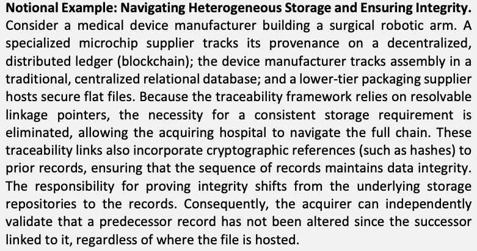
概念的な例：異種の保存方式をたどり、完全性を確保すること。医療機器の製造事業者が手術ロボットアームを製造する場合を考えます。専用マイクロチップのサプライヤは、分散型台帳（ブロックチェーン）で来歴を追跡し、機器の製造事業者は従来型の集中型リレーショナルデータベースで組立を追跡し、下位階層の梱包サプライヤは安全なフラットファイルをホストしています。トレーサビリティのフレームワークは解決可能なリンクポインタに依拠しているため、一貫した保存要件は不要となり、調達する病院がチェーン全体をたどれるようになります。これらのトレーサビリティリンクには、先行する記録への暗号学的な参照（ハッシュなど）も組み込まれており、記録の並びのデータ完全性が保たれます。完全性を証明する責任は、基盤となる保存リポジトリから記録そのものへ移ります。その結果、調達者はファイルのホスト場所にかかわらず、後続の記録が先行する記録にリンクしてから、先行する記録が改変されていないことを独立して検証できます。
Aligning with this principle helps ensure the overarching traceability approach scales globally. Acquirers and suppliers retain the flexibility to choose the technical architecture, storage mechanisms, and internal data formats that best align with their specific business models and regulatory environments. When sharing pedigree information, entities can abstract the necessary data from these internal systems to publish traceability records. By leveraging the data encapsulation pattern, traceability records can accommodate different data payloads without mandating uniformity across every repository, while still maintaining standardized, interoperable links to predecessor events. By using interoperable traceability records and links, organizations can support the formation of continuous, end-to-end provenance chains that cross the natural boundaries of supply chain networks.
この原則に沿うことで、全体的なトレーサビリティのアプローチが世界規模に拡張することを確保しやすくなります。調達者とサプライヤは、それぞれの事業モデルと規制環境に最もよく整合する、技術アーキテクチャ、保存機構、内部データ形式を選ぶ柔軟性を保持します。系譜情報を共有する際、事業体は、これらの内部システムから必要なデータを抽象化して、トレーサビリティ記録を公開できます。データのカプセル化パターンを活用することで、トレーサビリティ記録は、すべてのリポジトリに画一性を義務付けることなく、異なるデータペイロードに対応しつつ、先行するイベントへの標準化された相互運用可能なリンクを維持できます。相互運用可能なトレーサビリティ記録とリンクを用いることで、組織は、サプライチェーンネットワークの自然な境界をまたぐ、連続したエンドツーエンドの来歴チェーンの形成を支えられます。
3.10. Synthesis of Principles
3.10. 原則の統合
The nine principles outlined in this section collectively establish the foundation for a resilient, distributed, and decentralized architecture that reflects practical business realities. By acknowledging the complex, multi-ecosystem nature of modern manufacturing, these principles support global traceability without requiring a universally centralized data repository. Aligning with these guiding principles requires a consistent, structured approach that uses foundational event templates to represent key supply chain events.
本章で概説した九つの原則は全体として、実際の事業の現実を反映した、レジリエントで分散型かつ非中央集権型のアーキテクチャの基盤を確立します。現代の製造業が複雑で複数のエコシステムからなるという性質を認めることで、これらの原則は、普遍的な集中型データリポジトリを必要とせずに、グローバルなトレーサビリティを支えます。これらの指針原則に沿うには、主要なサプライチェーンイベントを表す基礎的なイベントテンプレートを用いた、一貫性のある構造化アプローチが必要です。
These templates serve as a starting point for encapsulating provenance data, ensuring systemic interoperability, and enabling discrete records to link and form traceability chains that accurately mirror the timeline of supply chain events. Using these consistent data templates helps avoid dictating the internal contents of every supply chain payload. Ultimately, industry consortia, standards organizations, and manufacturers themselves bear the responsibility for deciding which specific pedigree information, data standards, and formats best serve their industries, industry sectors, or domains, and for tailoring the templates accordingly into specific traceability records.
これらのテンプレートは、来歴データをカプセル化し、システム的な相互運用性を確保し、個別の記録がリンクしてサプライチェーンイベントの時系列を正確に映すトレーサビリティチェーンを形成できるようにするための、出発点となります。これらの一貫したデータテンプレートを使うことで、すべてのサプライチェーンのペイロードの内部の内容を指示することを避けやすくなります。最終的に、産業コンソーシアム、標準化団体、製造事業者自身が、どの特定の系譜情報、データ標準、形式が自らの産業、産業セクター、ドメインに最も適しているかを決定し、それに応じてテンプレートを特定のトレーサビリティ記録へテーラリングする責任を負います。
To bridge theory and practice, Section 4 introduces the conceptual Supply Chain Traceability Meta-Framework, which outlines a set of high-level event data templates (e.g., Make, Assemble, Store, Ship, Receive, and Employ). The Meta-Framework contains the structural fields to support data encapsulation, interoperable traceability links, and independent integrity verification. Operating without a prescriptive centralized technology stack, the framework is structured to allow manufacturers across supply chain sectors to independently generate traceability records within their respective data repositories and link them across distributed boundaries to form the verifiable, end-to-end traceability chains that acquirers need to inform SCRM analysis.
理論と実践をつなぐため、第 4 章では、概念的なサプライチェーン・トレーサビリティ・メタフレームワークを紹介します。このフレームワークは、高レベルのイベントデータテンプレートの集合（たとえば、Make、Assemble、Store、Ship、Receive、Employ）を概説します。メタフレームワークには、データのカプセル化、相互運用可能なトレーサビリティリンク、独立した完全性検証を支えるための構造的なフィールドが含まれます。規定的な集中型の技術スタックなしに運用されるこのフレームワークは、サプライチェーンのセクターをまたぐ製造事業者が、それぞれのデータリポジトリ内で独立してトレーサビリティ記録を生成し、分散した境界をまたいでそれらをリンクすることで、調達者が SCRM 分析に役立てるために必要な、検証可能なエンドツーエンドのトレーサビリティチェーンを形成できるように構成されています。
4. A Manufacturing Meta-Framework
4. 製造業向けメタフレームワーク
Within the Meta-Framework, the guiding principles established in Sec. 3 are translated into a data architecture. This architecture consists of high-level supply chain event traceability data record templates that organizations can use as blueprints to encapsulate pedigree data and link across records to support product provenance
メタフレームワークでは、第 3 章で確立した指針原則がデータアーキテクチャへと変換されます。このアーキテクチャは、系譜データをカプセル化し、製品の来歴を支えるために記録間をリンクする際の設計図として組織が使用できる、高レベルのサプライチェーンイベント・トレーサビリティデータ記録テンプレートで構成されています
While the successful adoption of traceability within the global supply chain networks relies heavily on non-technical drivers (e.g., industry governance, economic incentives, and proportional risk decisions (Principles 1–3)), the Meta-Framework is designed to operationalize technical requirements to inform standards, supply chain automation, and industry best practices. The framework is structured to account for the complex operational realities of manufacturing (Principles 4–6), allowing organizations to establish evidence-based provenance that protects intellectual property, account for inevitable traceability gaps, and support continuous updates to the product lifecycle. To achieve this, structural mechanics are detailed within the framework to support verifiable organization attribution (Principle 7), cyber-physical linkage (Principle 8), and consistent interoperability (Principle 9).
グローバルなサプライチェーンネットワーク内でのトレーサビリティの採用の成否は、非技術的な推進要因（たとえば、産業のガバナンス、経済的インセンティブ、比例的なリスク判断（原則 1～3））に大きく左右されますが、メタフレームワークは、標準、サプライチェーンの自動化、業界のベストプラクティスに役立てるために、技術的な要件を運用化するように設計されています。このフレームワークは、製造の複雑な運用上の現実（原則 4～6）を考慮に入れて構成されており、組織が、知的財産を保護する証拠に基づく来歴を確立し、避けられないトレーサビリティのギャップに対処し、製品ライフサイクルの継続的な更新を支えられるようにします。これを実現するために、フレームワーク内では、検証可能な組織の帰属（原則 7）、サイバーフィジカルのリンク（原則 8）、一貫した相互運用性（原則 9）を支えるための構造的な仕組みが詳述されています。
By using a consistent, interoperable approach to recording, linking, and retrieving supply chain event data, discrete records can be linked across organizational boundaries. This results in a causally and chronologically ordered chain of traceability records that are cryptographically verifiable and allow stakeholders to validate product provenance and make informed SCRM decisions.
サプライチェーンイベントデータを記録し、リンクし、取得するための一貫した相互運用可能なアプローチを用いることで、個別の記録を組織の境界をまたいでリンクできます。その結果、因果的かつ時系列に順序付けられ、暗号技術により検証可能なトレーサビリティ記録のチェーンが得られ、利害関係者は製品の来歴を検証し、情報に基づく SCRM 判断を下せます。
What is a "Meta" Framework?
「メタ」フレームワークとは何ですか？
The prefix “meta” indicates that the framework is designed as a high-level conceptual structure to support supply chain pedigree and provenance information without requiring a specific technology or data standard. As established in Principle 9 (Interoperability Over Uniformity), attempting to force every global supplier to adopt a single, uniform data standard is impractical. Instead of replacing existing, highly functional industry standards (such as GS1 EPCIS in retail or specialized defense schemas), common structural data patterns, specifically linking, interoperable interfaces, and encapsulation of payload data expressed in data standards are used to support the Meta-Framework.
接頭辞の「メタ」は、このフレームワークが、特定の技術やデータ標準を必要とせずに、サプライチェーンの系譜と来歴の情報を支える高レベルの概念的構造として設計されていることを示します。原則 9（画一性よりも相互運用性）で確立したとおり、世界中のすべてのサプライヤに単一の画一的なデータ標準を採用させようとすることは、現実的ではありません。小売分野の GS1 EPCIS や専門的な防衛スキーマといった、既存の高度に機能する業界標準を置き換えるのではなく、共通の構造的データパターン、具体的には、リンク、相互運用可能なインターフェース、データ標準で表現されたペイロードデータのカプセル化が、メタフレームワークを支えるために用いられます。
These interoperable interfaces serve as communication pathways, allowing downstream acquirers to navigate cryptographic links and retrieve relevant records seamlessly during traceback analysis. By using these patterns, independent, federated ecosystems can link data across trust boundaries.
これらの相互運用可能なインターフェースは通信経路として機能し、下流の調達者が、トレースバック分析の際に暗号学的リンクをたどり、関連する記録をシームレスに取得できるようにします。これらのパターンを用いることで、独立した連合型エコシステムは、信頼境界をまたいでデータをリンクできます。
Common data architecture patterns are used for the Meta-Framework to build a continuous, causal, and temporally ordered chain of pedigree information that spans industry sectors and geographic locations, while incorporating the necessary flexibility in pedigree data to align with industry standards and manufacturing tailoring.
原本PDFの抜粋画像
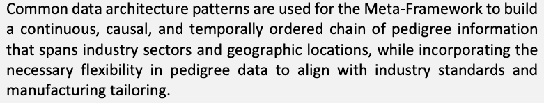
メタフレームワークには、一般的なデータアーキテクチャのパターンが用いられ、産業セクターと地理的な場所をまたぐ、連続的で因果的かつ時間順に並んだ系譜情報のチェーンを構築すると同時に、系譜データに、業界標準や製造上のテーラリングに整合するために必要な柔軟性を取り入れます。
To validate the conceptual architecture of this Meta-Framework, NIST and MITRE jointly developed an open-source Reference Implementation (RI). This implementation serves as a minimum viable product to demonstrate and investigate supply chain traceability across multiple independently governed ecosystems. A high-level summary of the reference implementation's architecture and goals is provided in Appendix F.
このメタフレームワークの概念的なアーキテクチャを検証するため、NIST と MITRE は、オープンソースのリファレンス実装（RI）を共同で開発しました。この実装は、独立して統治される複数のエコシステムにまたがるサプライチェーン・トレーサビリティを実証し、調査するための、実用最小限の製品（MVP）として機能します。リファレンス実装のアーキテクチャと目標の概要は、付録 F に示します。
4.1. Core Architectural Concepts
4.1. 中核となるアーキテクチャ上の概念
A decentralized, interoperable approach is used within the Meta-Framework across the supply chain network to support verifiable, accessible, and traceable records, while mechanisms are in place to protect the intellectual property and operational security of participating suppliers. This architectural model is built upon four core components, as shown in Table 4 below:
メタフレームワーク内では、サプライチェーンネットワーク全体で、検証可能でアクセス可能かつ追跡可能な記録を支えるために、分散型で相互運用可能なアプローチが用いられ、参加サプライヤの知的財産と運用上のセキュリティを保護する仕組みが整えられています。このアーキテクチャモデルは、下の表 4 に示す四つの中核的な構成要素に基づいて構築されています。
Table 4. Core Architectural Concepts
表 4. 中核となるアーキテクチャ上の概念
| Component | Description |
|---|---|
| Structured Traceability Records | The foundational components of the framework are structured traceability records containing essential information about supply chain events at specific stages. Using these records, organizations can extract and summarize a subset of their internal manufacturing data to share as product pedigree. This approach facilitates the capture of critical data needed for verifiable visibility without exposing sensitive, proprietary manufacturing details. |
| Federated Data Repositories and Ecosystems | A flexible storage model in which traceability records are managed in data repositories hosted by individual manufacturers, industry coalitions, or regional consortia (e.g., a semiconductor fabrication ecosystem or a mining industry collective). This federated approach accommodates various data and technology implementation models: while larger organizations may host their own infrastructure, smaller manufacturers might utilize shared industry platforms or third-party service providers to maintain their records. Through these arrangements, participants can benefit from economies of scale and professionalized data management without needing to sustain independent infrastructure. Regardless of the hosting model, trust is decoupled from the underlying repository and is cryptographically embedded in the records themselves through secure, verifiable links to predecessor events. Additionally, these repositories are managed under governance frameworks, defined by the individual manufacturer or the collective ecosystem, in which the access controls and data retention policies necessary to maintain data accessibility for authorized stakeholders are established. |
| Traceability Links | Traceability links are utilized within the framework to connect individual records, creating a continuous chain of traceability across complex networks. These verifiable links enable stakeholders to trace the lineage of a product or component over time and across data repositories managed by different organizations. |
| Common Data Models and Ontologies | Aligning traceability record internal payloads with established standards organizations helps maintain syntactic and semantic consistency across intersecting supply chains. Through this alignment, traceability data remains interoperable, comprehensible, and actionable across supply chain networks. |
| 構成要素 | 説明 |
|---|---|
| 構造化されたトレーサビリティ記録 | フレームワークの基礎的な構成要素は、特定の段階におけるサプライチェーンイベントに関する重要な情報を含む、構造化されたトレーサビリティ記録です。これらの記録を使うことで、組織は内部の製造データの一部を抽出して要約し、製品の系譜として共有できます。このアプローチは、機微な専有の製造上の詳細を明らかにすることなく、検証可能な可視性に必要な重要データの取得を容易にします。 |
| 連合型データリポジトリとエコシステム | トレーサビリティ記録を、個々の製造事業者、業界連合、または地域コンソーシアム（たとえば、半導体製造のエコシステムや鉱業の共同体）がホストするデータリポジトリで管理する、柔軟な保存モデルです。この連合型アプローチは、さまざまなデータおよび技術実装モデルに対応します。大規模な組織は自前のインフラをホストする場合がありますが、小規模な製造事業者は、記録を維持するために共有の業界プラットフォームや第三者サービスプロバイダを利用する場合があります。こうした取り決めにより、参加者は独立したインフラを維持することなく、規模の経済と専門的なデータ管理の恩恵を受けられます。ホスティングモデルにかかわらず、信頼は基盤となるリポジトリから切り離され、先行イベントへの安全で検証可能なリンクを通じて、記録そのものに暗号技術的に組み込まれます。さらに、これらのリポジトリは、個々の製造事業者または集合的なエコシステムが定めるガバナンスフレームワークの下で管理されます。このフレームワークでは、権限を持つ利害関係者がデータにアクセスできる状態を維持するために必要な、アクセス制御とデータ保持ポリシーが定められます。 |
| トレーサビリティリンク | トレーサビリティリンクは、フレームワーク内で個々の記録を接続し、複雑なネットワーク全体にわたる連続したトレーサビリティチェーンを作るために使用されます。これらの検証可能なリンクにより、利害関係者は時間の経過とともに、また異なる組織が管理するデータリポジトリをまたいで、製品や部品の系統をたどれます。 |
| 共通のデータモデルとオントロジー | トレーサビリティ記録の内部ペイロードを、標準化団体が定めた確立済みの標準に合わせることは、交差するサプライチェーン間で構文上および意味上の一貫性を維持する助けとなります。この整合により、トレーサビリティデータは、サプライチェーンネットワーク全体で相互運用可能で、理解可能で、行動につなげられる状態を保ちます。 |
4.1.1. Supply Chain Event Categories
4.1.1. サプライチェーンイベントのカテゴリ
Complex operational milestones are generalized within the Meta-Framework into supply chain event categories (Principle 6). These initial categories provide a common language for documenting a product's progression throughout its lifecycle. Table 5 describes an initial set of event categories for supporting a manufacturing meta-framework from initial “make” events to the “employ” event, deploying a product within an acquiring enterprise environment:
複雑な運用上のマイルストーンは、メタフレームワーク内で、サプライチェーンイベントのカテゴリに一般化されます（原則 6）。これらの初期カテゴリは、製品のライフサイクルを通じた進行を文書化するための共通の言語を提供します。表 5 は、最初の「make」イベントから、調達する企業環境内に製品を配備する「employ」イベントまで、製造業向けメタフレームワークを支えるための、イベントカテゴリの初期の集合を説明しています。
Table 5. Supply Chain Event Categories
表 5. サプライチェーンイベントのカテゴリ
| Event Category | Description |
|---|---|
| Make | The initial creation or fabrication of a product or component. |
| Assemble | The integration of multiple tracked components into a new, more complex system. |
| Store | The staging of materials, including physical location and, where relevant, environmental conditions. |
| Ship | The outbound transfer of materials to another entity. |
| Receive | The inbound receipt of an item from another entity. |
| Employ | The deployment or activation of the product within its final operational environment. |
| イベントカテゴリ | 説明 |
|---|---|
| Make | 製品または部品の最初の作成または製作。 |
| Assemble | 追跡対象の複数の部品を、新しい、より複雑なシステムに統合すること。 |
| Store | 物理的な場所と、関連する場合は環境条件を含む、材料の一時保管。 |
| Ship | 別の事業体への材料の出荷。 |
| Receive | 別の事業体からの品目の受け入れ。 |
| Employ | 製品を最終的な運用環境内に配備または有効化すること。 |
Supply chain events do not occur in isolation; they represent specific milestones in a product's physical lifecycle. While event records are captured chronologically as products move through the supply chain, mechanisms are included within the framework for the secure verification of this history using backward-pointing cryptographic linkages. For example, a verifiable thread across a trust boundary is created when a Receive record is linked to the supplier's predecessor Ship record. These structural data relationships are shown in Figure 5, where Unified Modeling Language (UML) cardinality indicates how each successor event category is connected to its logical predecessors, forming a continuous provenance chain.
サプライチェーンイベントは単独で起こるのではなく、製品の物理的なライフサイクルにおける特定のマイルストーンを表します。イベント記録は、製品がサプライチェーンを移動するのに合わせて時系列に記録されますが、フレームワークには、後方を指す暗号学的なリンクを用いてこの履歴を安全に検証する仕組みが含まれています。たとえば、Receive記録がサプライヤの先行するShip記録にリンクされると、信頼境界をまたぐ検証可能なつながりが作られます。これらの構造的なデータ関係は図5に示されています。Unified Modeling Language（UML）の多重度は、各後続イベントカテゴリが論理的な先行イベントにどのように接続し、連続した来歴チェーンを形成するかを示します。

5種類のサプライチェーンイベントの関係を、箱「ASSEMBLE」「MAKE」「SHIP」「RECEIVE」「EMPLOY」と矢印・多重度で示した図です。ASSEMBLE から自身への矢印があります（始点 1、矢印側 0..*）。ASSEMBLE から MAKE へ（1 対 0..*）、SHIP から ASSEMBLE へ（1 対 0..*）と MAKE へ（1 対 0..*）矢印があります。RECEIVE から SHIP へ（1 対 1）、EMPLOY から RECEIVE へ（1..* 対 1..*）、ASSEMBLE から上を回る線で RECEIVE へ（1..* 対 0..*）矢印があります。
Fig. 5. Supply Chain Event Relationships
図 5. サプライチェーンイベントの関係
Note: The Store event represents an internal intermediary state and is omitted from the main diagram paths to preserve readability. Architecturally, a Store event must trace back to a prior internal event that established custody or creation (Receive, Make, Assemble, or a prior Store). Conversely, successor events (Ship, Assemble, Employ, or a subsequent Store) may trace back to a Store event. To preserve trust boundaries, a Store event should not trace directly back to an external Ship event without a preceding Receive.
注：Storeイベントは内部の中間状態を表すため、読みやすさを保つために主な図の経路から省略しています。アーキテクチャ上、Storeイベントは、保管または作成を確立した先行する内部イベント（Receive、Make、Assemble、または先行するStore）にさかのぼらなければなりません。逆に、後続イベント（Ship、Assemble、Employ、または後続のStore）は、Storeイベントにさかのぼる場合があります。信頼境界を保つため、Storeイベントは、先行するReceiveを介さずに外部のShipイベントへ直接さかのぼるべきではありません。
4.1.2. From Internal Operations to Shareable Provenance
4.1.2. 内部業務から共有可能な来歴へ
Differentiating between an organization's internal operational data and shareable supply chain event data written to a traceability record clarifies how the core components interact in practice. This abstraction is illustrated in Fig. 6 using a notional use case: the ACME OEM Security Camera Manufacturing process. Within the facility, the manufacturer utilizes highly complex, proprietary systems (e.g., ERP, MES, and Quality Management Systems (QMS)) to manage the intricate steps involved in assembling the camera's subsystems. This granular internal data is typically not shared with external parties.
組織の内部の業務データと、トレーサビリティ記録に書き込まれる共有可能なサプライチェーンイベントデータとを区別すると、中核的な構成要素が実際にどのように相互作用するかが明確になります。この抽象化は、概念的なユースケースである ACME OEM のセキュリティカメラ製造プロセスを使って、図 6 に示されています。施設内で、製造事業者は、カメラのサブシステムの組立に関わる複雑な工程を管理するために、非常に複雑な専有システム（たとえば、ERP、MES、品質管理システム（QMS））を利用しています。この粒度の細かい内部データは、通常、外部と共有されません。
Instead, organizations can selectively extract and transform these internal activities into shareable supply chain event data, filtering out proprietary manufacturing details to protect intellectual property. The supply chain event information encapsulated inside these individual traceability records (e.g., Make, Assemble, Store, Ship, Receive, and Employ records) represents pedigree information. As the traceability records are cryptographically linked together, across organizational and geographic locations, they form the product's verifiable provenance.
組織は代わりに、これらの内部活動を選択的に抽出して共有可能なサプライチェーンイベントデータに変換でき、知的財産を保護するために専有の製造上の詳細を除外します。これら個々のトレーサビリティ記録（たとえば、Make、Assemble、Store、Ship、Receive、Employ の各記録）の中にカプセル化されたサプライチェーンイベント情報は、系譜情報を表します。トレーサビリティ記録が、組織や地理的な場所をまたいで暗号技術によりリンクされることで、製品の検証可能な来歴を形成します。
![Diagram of internal manufacturing data abstracted into shareable supply chain events. The upper part repeats Fig. 1: Titled "ACME OEM SECURITY CAMERA MANUFACTURING". At upper left, the purchased components are listed: "camera lens", "image sensor", "image processor w/software", "IR LEDs", "white light LEDs", "camera network module w/software", "camera housing", "camera power system", flowing into colored component cubes. A light-blue arrow lists the assembly steps "assemble image sub-system", "attach LEDs", "integrate network module", "attach power system", "insert into housing", "load software and test", leading to a factory icon, a "security camera", a warehouse and shopping-cart icon, and another "security camera". A gray arrow labeled "Supply Chain Provenance" runs left to right through the segments "Purchased Components", "Assembly Activities" and "Selling Activities". Below it, a box "Organization internal manufacturing data" holds clouds of internal systems (MES, APM, ERP, PLM, QMS, SPS, GRC, SRM, SCADA, CAD / CAE / CAM, SCM, TMS, EAM / CMMS, EHS, CRM, and WMS, TMS, SRM, GRC, SCM) with an orange person icon between them. Below the clouds, a gray arrow "Shareable Supply Chain Event Data" carries event pins "Receive", "Receive" (with "…" between them), "Assemble", "Store" and "Ship". Under the pins are record icons with the texts "case of network modules 26-C-2224 w modules 26-CNM-0001 thru 0100", "…", "case of camera housing 26-P-0002 w/camera housings 26-CH-0001 thru 0256", a double arrow "Supply Chain Event Data", and three records "security camera 26-ASC-01234" (blue, yellow and red). A large arrow pointing left is labeled "Supply Chain Event Data"; an orange line leads from it to a "Query" icon and an orange person labeled "SCRM process". The bottom legend reads: "APM (Application Performance Management), CAD (Computer Aided Design), CAE (Computer Aided Engineering), CAM (Computer Aided Manufacturing), CMMS (Computerized Maintenance Management System), EHS (Environmental, Health & Safety), ERP (Enterprise Resource Planning), EAM (Enterprise Asset Management), GRC (Governance Risk and Compliance), MES (Manufacturing Execution System), QMS (Quality Management System), SCADA (Supervisory Control and Data Acquisition), SCM (Supply Chain Management), SPS (Sales Process System), SRM (Supplier Risk Management), TMS (Transportation Management System), WMS (Warehouse Management System)".](assets/ir-8536/p0042-drawing-01.png)
組織内部の製造データを共有可能なサプライチェーンイベントへ抽象化する図です。上部は図1と同じです。見出しは「ACME OEM SECURITY CAMERA MANUFACTURING」です。左上に購入部品「camera lens」「image sensor」「image processor w/software」「IR LEDs」「white light LEDs」「camera network module w/software」「camera housing」「camera power system」が並び、色付きの部品の立方体に集まります。水色の矢印に組立工程「assemble image sub-system」「attach LEDs」「integrate network module」「attach power system」「insert into housing」「load software and test」が書かれ、工場のアイコン、「security camera」、倉庫とショッピングカートのアイコン、もう一つの「security camera」へ続きます。灰色の矢印「Supply Chain Provenance」（サプライチェーンの来歴）が左から右へ「Purchased Components」（購入部品）「Assembly Activities」（組立作業）「Selling Activities」（販売作業）の区間を通ります。その下の枠「Organization internal manufacturing data」（組織内部の製造データ）には、社内システムの雲（MES、APM、ERP、PLM、QMS、SPS、GRC、SRM、SCADA、CAD / CAE / CAM、SCM、TMS、EAM / CMMS、EHS、CRM と、WMS、TMS、SRM、GRC、SCM）があり、その間にオレンジ色の人物アイコンがあります。雲の下には灰色の矢印「Shareable Supply Chain Event Data」（共有可能なサプライチェーンイベントデータ）があり、イベントのピン「Receive」「Receive」（間に「…」）「Assemble」「Store」「Ship」が付いています。ピンの下には記録アイコンと文字「case of network modules 26-C-2224 w modules 26-CNM-0001 thru 0100」「…」「case of camera housing 26-P-0002 w/camera housings 26-CH-0001 thru 0256」、両向き矢印「Supply Chain Event Data」、3つの記録「security camera 26-ASC-01234」（青・黄・赤）があります。左向きの大きな矢印「Supply Chain Event Data」からオレンジ色の線が「Query」アイコンとオレンジ色の人物「SCRM process」へ延びています。下部の凡例は「APM (Application Performance Management), CAD (Computer Aided Design), CAE (Computer Aided Engineering), CAM (Computer Aided Manufacturing), CMMS (Computerized Maintenance Management System), EHS (Environmental, Health & Safety), ERP (Enterprise Resource Planning), EAM (Enterprise Asset Management), GRC (Governance Risk and Compliance), MES (Manufacturing Execution System), QMS (Quality Management System), SCADA (Supervisory Control and Data Acquisition), SCM (Supply Chain Management), SPS (Sales Process System), SRM (Supplier Risk Management), TMS (Transportation Management System), WMS (Warehouse Management System)」です。
Fig. 6. Abstracting Internal Manufacturing Data into Shareable Supply Chain Events
図 6. 内部の製造データを共有可能なサプライチェーンイベントへ抽象化する
For example, once an organization actively curates and transforms its internal operational data into traceability records, these records are made available within the supply chain network for downstream entities to link.
たとえば、組織が内部の業務データを積極的に選別してトレーサビリティ記録へ変換すると、これらの記録は、サプライチェーンネットワーク内で、下流の事業体がリンクできるように利用可能になります。
This linkage occurs through the exchange of traceability links between the acquirer and the supplier manufacturer, which serve as verifiable pointers to specific records. When a supplier provides a traceability link (for example, pointing to a "Ship" record) to their customer, the customer can embed that link in their corresponding record (such as a "Receive" record). This process creates a verifiable connection between the two organizations without requiring either party to grant access to their internal manufacturing systems.
このリンクは、調達者とサプライヤである製造事業者の間で、特定の記録への検証可能なポインタとして機能するトレーサビリティリンクを交換することで行われます。サプライヤが顧客にトレーサビリティリンク（たとえば "Ship" 記録を指すもの）を提供すると、顧客はそのリンクを、対応する自らの記録（"Receive" 記録など）に埋め込めます。このプロセスは、どちらの当事者にも内部の製造システムへのアクセスを許可させることなく、二つの組織間に検証可能な接続を作ります。
![Diagram of an end-to-end traceability chain across the value chain. The upper part repeats Fig. 2: Titled "SECURITY CAMERA MANUFACTURING VALUE CHAIN". Column headings across the top: "Manufacturers: housing parts, camera lens materials, sensor components, power system components, image processor components, LED components, and network module components"; "Manufacturers: housings, camera lens, sensors, power systems, image processors, LEDs, and network modules"; "Manufacturer: Security Cameras"; "Distributor: Security Cameras"; "Acquirer: Critical Infrastructure". On the left, "Supply Chain Provenance": many small factory and truck icons converge into component cubes, then a factory, a warehouse with a shopping cart and security cameras, a distributor warehouse with a cart, and a wide gray arrow ends at acquirer icons (water tap, power transmission tower, ambulance, crops, train). A lower box "Organization internal manufacturing data" shows stacked panels "Upstream OEMs" and "Direct OEMs" (with a group of multicolored person icons), and single panels "ACME OEM" (orange person), "Security Distributor" (green person) and "Acquirers" (yellow person). A gray arrow "Shareable Supply Chain Event Data" runs through the panels with event pins: Upstream OEMs "Make", "Ship"; Direct OEMs "Receive", "Make", "Ship"; ACME OEM "Receive", "Assemble", "Store", "Ship"; Security Distributor "Receive", "Store", "Ship"; Acquirers "Receive", "Employ". Each pin has a colored record icon below it, with a small double arrow "Supply Chain Event Data". Colored lines from the records run into a large left-pointing arrow labeled "Supply Chain Event Data", and dashed lines lead down to four "Query" icons, each next to a person icon labeled "SCRM process" (multicolored group, orange, green, yellow).](assets/ir-8536/p0043-drawing-01.png)
バリューチェーン全体にわたる端から端までの追跡可能性チェーンの図です。上部は図2と同じです。見出しは「セキュリティカメラ製造バリューチェーン」です。上部の列見出しは「製造事業者：筐体部品、カメラレンズ材料、センサー部品、電源システム部品、画像プロセッサ部品、LED部品、ネットワークモジュール部品」「製造事業者：筐体、カメラレンズ、センサー、電源システム、画像プロセッサ、LED、ネットワークモジュール」「製造事業者：セキュリティカメラ」「流通業者：セキュリティカメラ」「調達者：重要インフラ」です。左側の「サプライチェーンの来歴」では、多数の小さな工場とトラックのアイコンが部品の立方体に集まり、工場、ショッピングカート付きの倉庫とセキュリティカメラ、流通業者の倉庫とカートを経て、太い灰色の矢印が調達者のアイコン（水道の蛇口、送電鉄塔、救急車、作物、列車）で終わります。下の枠「組織内部の製造データ」には、重なったパネル「上流OEM」「直接OEM」（多色の人物アイコンの集まり付き）と、単独のパネル「ACME OEM」（オレンジ色の人物）「セキュリティ流通業者」（緑色の人物）「調達者」（黄色の人物）があります。灰色の矢印「共有可能なサプライチェーンイベントデータ」が各パネルを通り、イベントのピンが付いています。上流OEMは「製造」「出荷」、直接OEMは「受領」「製造」「出荷」、ACME OEMは「受領」「組立」「保管」「出荷」、セキュリティ流通業者は「受領」「保管」「出荷」、調達者は「受領」「使用」です。各ピンの下に色付きの記録アイコンがあり、小さな両向き矢印「サプライチェーンイベントデータ」が添えられています。記録からの色付きの線は左向きの大きな矢印「サプライチェーンイベントデータ」に入り、破線が4つの「クエリ」アイコンへ下りています。各アイコンの横には人物アイコンと「SCRMプロセス」があります（多色の集まり、オレンジ、緑、黄）。
Fig. 7. End-to-End Traceability Chain Across the Manufacturing Value Chain
図 7. 製造バリューチェーン全体にわたるエンドツーエンドのトレーサビリティチェーン
As shown in Fig. 7, the traceability chain begins with upstream component manufacturers generating "Make" and "Ship" records for items like lenses and sensors. The records include a unique traceability link for that specific component instance or batch. For example, when ACME receives these items, they generate a "Receive" record that references and cryptographically links back to the supplier's "Ship" record using the provided pointer.
図 7 に示すように、トレーサビリティチェーンは、上流の部品製造事業者が、レンズやセンサーなどの品目について "Make" 記録と "Ship" 記録を生成するところから始まります。これらの記録には、その特定の部品インスタンスまたはバッチに固有のトレーサビリティリンクが含まれます。たとえば、ACME がこれらの品目を受け取ると、提供されたポインタを使って、サプライヤの "Ship" 記録を参照し、暗号技術によりそこへさかのぼってリンクする "Receive" 記録を生成します。
This linking process continues through the ACME assembly process, down through security distributors, and ultimately to the acquirer. The traceability link for the current supply chain event traceability record is passed forward at each supply chain event to the acquirer, such that the traceability record for the successor supply chain event can link backward to the traceability record of the predecessor supply chain event. The final traceability chain enables an acquirer to query it and independently trace the product’s provenance back to its origins, even across disparate data repositories.
このリンクのプロセスは、ACME の組立プロセスを経て、セキュリティ製品の流通業者を通り、最終的に調達者まで続きます。現在のサプライチェーンイベントのトレーサビリティ記録に対するトレーサビリティリンクは、サプライチェーンイベントごとに調達者へ向けて先へ渡されるため、後続のサプライチェーンイベントのトレーサビリティ記録が、先行するサプライチェーンイベントのトレーサビリティ記録へ後ろ向きにリンクできます。最終的なトレーサビリティチェーンにより、調達者はこれに問い合わせて、異なるデータリポジトリにまたがる場合でも、製品の来歴をその出所まで独立して追跡できます。
4.2. Templated Traceability Record Structure (Metadata and Pedigree)
4.2. テンプレート化されたトレーサビリティ記録の構造（メタデータと系譜）
Traceability records are the logical foundation of the Meta-Framework. Each record contains the details of a discrete supply chain event and includes the structural consistency needed for data to be shared and interpreted across supply chain networks. With the encapsulation and linking design patterns mentioned earlier, a rigid, universal schema is not required within the framework. This approach is based on a consistent, templated container for pedigree information for each type of supply chain event. Consequently, the metadata required for navigation via links remains interoperable, while the internal data remains flexible and tailorable.
トレーサビリティ記録は、メタフレームワークの論理的な基盤です。各記録には、個別のサプライチェーンイベントの詳細が含まれ、サプライチェーンネットワーク全体でデータを共有し解釈するために必要な構造的な一貫性が備わっています。前述のカプセル化とリンクの設計パターンにより、フレームワーク内では、硬直的で普遍的なスキーマは必要ありません。このアプローチは、サプライチェーンイベントの種類ごとに、系譜情報のための一貫したテンプレート化されたコンテナを用意することに基づいています。その結果、リンクによるナビゲーションに必要なメタデータは相互運用可能なまま保たれ、内部のデータは柔軟でテーラリング可能なままとなります。
4.2.1. Core Traceability Record Elements and Principle Alignment
4.2.1. トレーサビリティ記録の中核要素と原則との整合
To support consistency across the supply chain network while preserving flexibility for industry-specific tailoring, a set of core data elements is defined. Table 6 lists these core components and details the application of the fundamental principles defined in Section 3 to establish a consistent structure for encapsulating pedigree information and linking records.
サプライチェーンネットワーク全体で一貫性を支えつつ、産業固有のテーラリングの柔軟性を保つために、一連の中核的なデータ要素を定義します。表 6 は、これらの中核的な構成要素を挙げ、系譜情報をカプセル化し記録をリンクするための一貫した構造を確立するために、第 3 章で定義した基本原則をどのように適用するかを詳述します。
Table 6. Core Traceability Record Elements
表 6. トレーサビリティ記録の中核要素
| Element Category | Description and Architectural Purpose | Principle Alignment |
|---|---|---|
| Record Identifier | A unique identifier for the traceability record, establishing a distinct reference for the specific event entry within an ecosystem. | Principles 5 & 9: The precise referencing mechanism needed to link across ecosystems and locate missing nodes (gaps). |
| Event Category | Indicates the supply chain event lifecycle milestone (e.g., Make, Assemble, Store, Ship, Receive, Employ) contained within the record. | Principle 6: Represent the item's operational status and progress throughout its lifecycle. |
| Event Timestamps | Precise chronological data representing the distinction between when the event physically occurred (Occurrence) and when it was logged (Recorded). | Principles 5 & 6: Definition of the product lifecycle timeline, facilitating the detection of temporal anomalies or data gaps by acquirers. |
| Organization Identifier & Subunit2 | Represents the legally identifiable business entity responsible for the event. May include a subunit identifier for facility-level granularity, without capturing individual employee data. | Principle 7: Facilitates the definitive verification of the provenance claim's author by an acquirer. |
| Tracked Entity Identifier | A persistent, unique identifier associated with the specific physical component, digital object, or batch affected by the event. | Principle 8: The primary digital anchor between the record and the item. |
| Traceability Link(s) | Contains verifiable pointers (e.g., query parameters, cryptographic hashes) referencing preceding event record(s) to support backward traversal | Principles 8 & 9: Support the formation of a continuous, tamper-evident chain. |
| Data Type Identifier | An industry- or regulatory-defined label indicating the specific industry schema, standard, or shared data ontology with which the internal payload is aligned. | Principle 9: Supports syntactic and semantic consistency across intersecting supply chains. |
| Tracked Entity Data (Payload) | A flexible data block containing detailed, event-specific pedigree information (e.g., chemical or material composition, serial numbers, batch numbers, or product grade). Alignment of this internal data structure with established common data models and ontologies facilitates universal comprehensibility of the specific pedigree across downstream systems. | Principle 9: Accommodation of the operational nuances of different sectors without the imposition of a rigid, universal schema, utilizing shared ontologies to support semantic interoperability. |
| Supplemental Data References | Optional pointers to external validation sources (e.g., certifications, test reports) are maintained in gated or paywalled stakeholder systems separate from the immutable chain. | Principle 4: Support for data minimization and the protection of intellectual property through the separation of sensitive evidence from routing data. |
| 要素カテゴリ | 説明とアーキテクチャ上の目的 | 原則との整合 |
|---|---|---|
| 記録識別子 | トレーサビリティ記録の一意な識別子であり、エコシステム内の個別のイベントエントリを特定する参照先を確立します。 | 原則 5 および 9：エコシステム間のリンクや、欠落ノード（ギャップ）の特定に必要な、正確な参照の仕組みです。 |
| イベントカテゴリ | 記録に含まれる、サプライチェーンイベントのライフサイクル上の節目（たとえば、Make、Assemble、Store、Ship、Receive、Employ）を示します。 | 原則 6：ライフサイクル全体を通じた品目の運用状態と進捗を表します。 |
| イベントのタイムスタンプ | イベントが物理的に発生した時点（Occurrence）と、記録に記載された時点（Recorded）の違いを示す正確な時系列データです。 | 原則 5 および 6：製品ライフサイクルの時系列を定義し、調達者が時間的な異常やデータギャップを検知できるようにします。 |
| 組織識別子とサブユニット2 | イベントに責任を負う、法的に識別可能な事業体を表します。個々の従業員データを取得せずに、施設レベルの詳細を示すサブユニット識別子を含める場合があります。 | 原則 7：調達者が来歴の主張を行った主体を確実に検証できるようにします。 |
| 追跡対象エンティティ識別子 | イベントの影響を受ける特定の物理的部品、デジタルオブジェクト、またはバッチに関連付けられた、永続的で一意な識別子です。 | 原則 8：記録と品目を結び付ける主要なデジタルアンカーです。 |
| トレーサビリティリンク（複数可） | 後方追跡を支えるため、先行するイベント記録を参照する検証可能なポインタ（たとえば、クエリパラメータ、暗号学的ハッシュ）を含みます。 | 原則 8 および 9：連続した改ざん検知可能なチェーンの形成を支えます。 |
| データ型識別子 | 内部ペイロードが整合している特定の業界スキーマ、標準、または共有データオントロジーを示す、業界または規制で定義されたラベルです。 | 原則 9：交差するサプライチェーン間での構文上および意味上の一貫性を支えます。 |
| 追跡対象エンティティのデータ（ペイロード） | イベント固有の詳細な系譜情報（たとえば、化学組成や材料組成、シリアル番号、バッチ番号、製品グレード）を含む柔軟なデータブロックです。この内部データ構造を、確立された共通データモデルやオントロジーに整合させることで、特定の系譜を下流システム全体で普遍的に理解できるようになります。 | 原則 9：硬直的で普遍的なスキーマを課すことなく、共有オントロジーを利用して意味上の相互運用性を支えながら、異なるセクターの運用上の細かな違いに対応します。 |
| 補足データ参照 | 外部の検証資料（たとえば、認証書、試験報告書）への任意のポインタは、不変のチェーンとは別に、アクセス制限または有料の利害関係者システム内で維持されます。 | 原則 4：機微な証拠とルーティングデータを分離することで、データ最小化と知的財産の保護を支えます。 |
4.2.2. Data Type Identifier and Tracked Entity Data (Payload)
4.2.2. データ型識別子と追跡対象エンティティのデータ（ペイロード）
To maintain structural interoperability across supply chains, an encapsulation strategy is utilized within the Meta-Framework to separate the mechanics of traceability (the “envelope”) from the highly specific, domain-relevant pedigree data (the “letter”). Routing, cryptographic linking, and event sequencing are handled externally, while the industry-specific details are secured inside the Tracked Entity Data Payload.
サプライチェーン全体で構造的な相互運用性を維持するために、メタフレームワークではカプセル化の戦略を用いて、トレーサビリティの仕組み（「封筒」）を、非常に具体的でドメインに関連する系譜データ（「手紙」）から切り離します。ルーティング、暗号学的なリンク、イベントの順序付けは外部で扱われ、産業固有の詳細は追跡対象エンティティデータのペイロードの内部で保護されます。
Because the payload is flexible, a machine-readable method is required for parsing—a function fulfilled by the Data Type Identifier. Similar to how structured markup data requires paired processing templates or stylesheets to establish how information is interpreted and rendered, the Data Type Identifier acts as the translation key for payload information. It specifies the schema or ontology required by the receiving system to parse the internal payload. If an acquirer only needs to verify structural provenance, the outer traceability links can be authenticated without requiring the specific methods needed to decode a specialized internal payload.
ペイロードは柔軟であるため、解析のための機械可読な方法が必要です。この機能は、データ型識別子が果たします。構造化マークアップデータが、情報の解釈と表示の方法を定めるための対のテンプレートやスタイルシートを必要とするのと同様に、データ型識別子は、ペイロード情報の変換鍵として機能します。これは、受信側システムが内部ペイロードを解析するために必要なスキーマまたはオントロジーを指定します。調達者が構造的な来歴を検証するだけでよい場合は、特化した内部ペイロードを復号するための個別の方法を必要とせずに、外側のトレーサビリティリンクを認証できます。
While this decoupled approach yields a flexible environment, it also necessitates industry-level decisions about how to balance encapsulating legacy standards with evolving them for modern traceability. In the short term, manufacturers can use this structure to capture existing, unmodified standards-based records into the payload, enabling ecosystems to establish cryptographically verifiable traceability without requiring organizations to abandon current data formats. Over time, as supply chain networks mature, industry standards organizations can evolve and update their specifications to incorporate payload information and potentially support key Meta-Framework parameters natively, such as cryptographic traceability links and verifiable organization/entity identifiers.
この分離されたアプローチは柔軟な環境をもたらす一方で、旧来の標準をカプセル化することと、それを現代のトレーサビリティに向けて進化させることとのバランスをどうとるかについて、産業レベルの判断も必要とします。短期的には、製造事業者はこの構造を使って、既存の未変更の標準に基づく記録をペイロードに取り込むことができ、組織が現在のデータ形式を捨てることなく、エコシステムが暗号技術により検証可能なトレーサビリティを確立できます。長期的には、サプライチェーンネットワークが成熟するにつれて、産業標準化団体は仕様を進化させて更新し、ペイロード情報を取り込むとともに、暗号学的なトレーサビリティリンクや検証可能な組織・事業体識別子といったメタフレームワークの主要なパラメータを、ネイティブにサポートできる可能性があります。
4.2.3. Supplemental Data References
4.2.3. 補足データの参照
While traceability links constitute the immutable backbone of product traceability record provenance lineage, organizations often require additional evidence to conduct comprehensive SCRM. To accommodate this, references to supplemental data can be incorporated into records within the Meta-Framework (Principle 4).
トレーサビリティリンクは、製品トレーサビリティ記録の来歴の系統を支える不変の基幹ですが、組織は、包括的な SCRM を行うために追加の証拠を必要とすることがよくあります。これに対応するため、メタフレームワーク内では、補足データへの参照を記録に組み込むことができます（原則 4）。
Unlike traceability links, which connect supply chain event records to form the provenance chain, supplemental data references designate external validation sources. These sources may include test reports, quality inspection results, audit summaries, or compliance attestations. The separation of the "predecessor traceability record link" from the "supplemental evidence" facilitates data minimization and the protection of intellectual property.
サプライチェーンイベント記録を接続して来歴チェーンを形成するトレーサビリティリンクとは異なり、補足データの参照は、外部の検証元を指定します。これらの情報源には、試験報告書、品質検査の結果、監査の要約、コンプライアンスの証明書などが含まれます。「先行するトレーサビリティ記録へのリンク」と「補足的な証拠」を分離することで、データ最小化と知的財産の保護が容易になります。
The traceability link is utilized to support the routing infrastructure, whereas the supplemental data contains additional, possibly sensitive evidence. Because these external references may contain proprietary business information, they might not be universally accessible. Instead, they can be stored in access-restricted systems where suppliers retain strict control over who can view detailed evidence. This architecture prevents the exposure of trade secrets while maintaining the accessibility of shareable pedigree information.
トレーサビリティリンクはルーティングの基盤を支えるために使われ、補足データには、機微な可能性のある追加の証拠が含まれます。これらの外部参照には専有の事業情報が含まれる場合があるため、誰もがアクセスできるとは限りません。代わりに、サプライヤが詳細な証拠を誰が閲覧できるかを厳格に管理できる、アクセス制限されたシステムに保存できます。このアーキテクチャは、共有可能な系譜情報へのアクセス性を維持しつつ、企業秘密の漏えいを防ぎます。
4.3. Traceability Links and Traceability Chains (Provenance Chronology Information)
4.3. トレーサビリティリンクとトレーサビリティチェーン（来歴の時系列情報）
While individual traceability records capture localized supply chain events, their primary value lies in their connection to predecessor records. Traceability links are used within the Meta-Framework to connect discrete records into a continuous, verifiable sequence known as a traceability chain. These links enable stakeholders to follow the lineage of a product or component over time, even when that data is distributed across different organizations and repositories.
個々のトレーサビリティ記録は局所的なサプライチェーンイベントを取得しますが、その主な価値は、先行する記録との接続にあります。メタフレームワークでは、トレーサビリティリンクを使って、個別の記録を、トレーサビリティチェーンと呼ばれる連続した検証可能な系列に接続します。これらのリンクにより、利害関係者は、そのデータが異なる組織やリポジトリに分散している場合でも、時間の経過とともに製品や部品の系統をたどれます。
4.3.1. Integrity and Trust
4.3.1. 完全性と信頼
The Meta-Framework is designed to function without a central authority, establishing a basis of trust within and across individual records so that trust requirements are not imposed on the data repository. This decentralized trust model is categorized into two functional areas:
メタフレームワークは、中央機関なしで機能するように設計されており、個々の記録の内部およびそれらの間に信頼の基盤を確立することで、データリポジトリに信頼の要件が課されないようにします。この分散型の信頼モデルは、次の二つの機能領域に分類されます。
•Record Integrity: This property verifies that the record has not been altered since its creation. To achieve this, a cryptographic hash representing the predecessor record is embedded within the traceability link. This structure yields a tamper-evident timeline; if any historical record in the chain is modified, the cryptographic hashes in all subsequent records will no longer match, allowing the acquirer to detect an integrity failure.
•記録の完全性：この特性は、記録が作成以降に改変されていないことを検証します。これを実現するために、先行する記録を表す暗号ハッシュが、トレーサビリティリンクに埋め込まれます。この構造により、改ざんが分かる時系列が得られます。チェーン内の過去の記録のいずれかが変更されると、それ以降のすべての記録の暗号ハッシュは一致しなくなり、調達者は完全性の失敗を検知できます。
•Data Attribution: This helps ensure the record accurately references the tracked item and is authored by the claimed organization. This is supported by the Verifiable Organization Identifiers (Principle 7) and Tracked Entity Identifiers (Principle 8) discussed in previous sections.
•データの帰属：これは、記録が追跡対象の品目を正確に参照し、主張された組織によって作成されたことを確保する助けとなります。これは、前の各節で論じた検証可能な組織識別子（原則 7）と追跡対象エンティティ識別子（原則 8）によって支えられます。
By directly incorporating these markers into the record structure, a basis for trust in the data is established regardless of the repository or ecosystem from which the record is retrieved.
これらの目印を記録の構造に直接組み込むことで、記録がどのリポジトリやエコシステムから取得されたかにかかわらず、データへの信頼の基盤が確立されます。
4.3.2. The Traceback Mechanism and Unidirectional Links
4.3.2. トレースバックの仕組みと単方向リンク
Traceability chains are utilized by acquiring and other organizations to conduct traceback investigations to support SCRM or related risk analysis. Through this backward-linking logic, a specific record can be retrieved, followed by the tracing of the event chain. To support verifiable component validation while protecting operational privacy and intellectual property, these links are unidirectional. By referencing only predecessor records, backward tracing is achieved without creating a "track-forward" capability that might expose a supplier’s downstream supply chain.
トレーサビリティチェーンは、調達者やその他の組織が、SCRM または関連するリスク分析を支えるトレースバック調査を行うために利用します。この後方へのリンクの論理により、特定の記録を取得し、続いてイベントのチェーンをたどれます。業務上のプライバシーと知的財産を保護しながら、検証可能な部品の検証を支えるために、これらのリンクは単方向です。先行する記録だけを参照することで、サプライヤの下流のサプライチェーンを明らかにしかねない「track-forward（前方追跡）」の機能を作ることなく、後方への追跡が実現されます。
This unidirectional logic mirrors the physical flow of products and creates a predictable causal order for traceability records:
この単方向の論理は、製品の物理的な流れを反映し、トレーサビリティ記録に予測可能な因果的順序を作ります。
•An Employ record points to the Assemble, Store, or Receive event that preceded its deployment.
•Employ 記録は、その配備に先行する Assemble、Store、または Receive のイベントを指します。
•An Assemble record points to the Receive, Store, Assemble, or Make events of its underlying components.
•Assemble 記録は、その基になる部品の Receive、Store、Assemble、または Make のイベントを指します。
•A Receive record points to the corresponding Ship record from the upstream supplier.
•Receive 記録は、上流のサプライヤの対応する Ship 記録を指します。
•A Ship record points to the Make, Assemble, or Store record that created or housed the product.
•Ship 記録は、製品を作成した、または保管した Make、Assemble、または Store の記録を指します。
4.4. Federated Traceability Ecosystems (Assurance)
4.4. 連合型トレーサビリティ・エコシステム（保証）
A single centralized database is not required within the Meta-Framework; instead, organizations can implement it across decentralized, federated data repositories. Because of this distributed architecture, participants must prioritize governance and access management. Ecosystem stakeholders establish the governance policies and rules that organizations use to regulate how traceability records are created, stored, and accessed. By establishing localized rules tailored to specific industries, organizations within these ecosystems can protect sensitive supply chain data while maintaining interoperability with the broader global supply network.
メタフレームワークでは、単一の集中型データベースは必要ありません。代わりに、組織は分散型の連合データリポジトリにまたがってこれを実装できます。この分散アーキテクチャのため、参加者はガバナンスとアクセス管理を優先しなければなりません。エコシステムの利害関係者は、トレーサビリティ記録の作成、保存、アクセスの方法を組織が規制するために用いるガバナンスポリシーと規則を定めます。特定の産業に合わせた局所的な規則を定めることで、これらのエコシステム内の組織は、より広範なグローバルサプライネットワークとの相互運用性を維持しながら、機微なサプライチェーンデータを保護できます。
4.4.1. Governance
4.4.1. ガバナンス
Each participating ecosystem is governed by its own framework, wherein membership criteria, compliance obligations, and participant responsibilities are established so that traceability principles are consistently applied across the network. Through the delegation of ecosystem-level governance, highly flexible implementation models are facilitated in alignment with Principle 3 (Incentive-Aligned Participation).
参加する各エコシステムは、独自のフレームワークによって統治され、そこでは、メンバーシップの基準、コンプライアンス上の義務、参加者の責任が定められ、トレーサビリティの原則がネットワーク全体で一貫して適用されるようにします。エコシステムレベルのガバナンスを委任することで、原則 3（インセンティブに整合した参加）に沿った、柔軟性の高い実装モデルが促進されます。
原本PDFの抜粋画像
Because interoperable interfaces are utilized, downstream acquirers use those links to retrieve the records directly from the supplier's chosen repository. Through this mechanism, small and medium manufacturers can provide pedigree information and actively contribute to the provenance chain.
相互運用可能なインターフェースが利用されるため、下流の調達者はそれらのリンクを使って、サプライヤが選んだリポジトリから直接記録を取得します。この仕組みを通じて、中小の製造事業者は、系譜情報を提供し、来歴チェーンに積極的に貢献できます。
4.4.2. Controlled Access and Data Retention
4.4.2. アクセス制御とデータ保持
To support the security and availability of supply chain event data, ecosystem data repositories should implement technical and procedural safeguards to ensure traceability records remain protected, verifiable, and accessible throughout their lifecycle. Key ecosystem capabilities include:
サプライチェーンイベントデータのセキュリティと可用性を支えるために、エコシステムのデータリポジトリは、トレーサビリティ記録がそのライフサイクル全体を通じて保護され、検証可能で、アクセス可能な状態に保たれるよう、技術的および手続き的な保護措置を実装すべきです。エコシステムの主な機能には、次のものがあります。
•Authentication Mechanisms: Systems that verify the identity of stakeholders when accessing or submitting traceability records.
•認証の仕組み：トレーサビリティ記録にアクセスしたり提出したりする際に、利害関係者の ID を検証するシステム。
•Access Control Mechanisms: Policies that define and enforce who can read, write, or manage traceability records, protecting supply chain data from unauthorized use.
•アクセス制御の仕組み：トレーサビリティ記録を誰が読み取り、書き込み、管理できるかを定義し、強制するポリシーであり、サプライチェーンデータを無許可の使用から保護します。
•Data Retention Policies: Rules that specify how long traceability records must be stored to meet operational, contractual, and compliance obligations, including contingency plans for repository dissolution or business continuity to maintain long-term data availability.
•データ保持ポリシー：運用上、契約上、コンプライアンス上の義務を満たすために、トレーサビリティ記録をどれだけの期間保存しなければならないかを定める規則。長期的なデータの可用性を維持するための、リポジトリの解散や事業継続に備えた緊急時対応計画を含みます。
Together, these practices help maintain the integrity, availability, and long-term reliability of traceability records.
これらの実践が合わさって、トレーサビリティ記録の完全性、可用性、長期的な信頼性を維持する助けとなります。
4.4.3. Link-Based Querying and Interoperability
4.4.3. リンクに基づく問い合わせと相互運用性
A fundamental challenge in supply chain visibility is crossing trust boundaries. An acquiring enterprise may have an established relationship with its prime contractor, but it likely does not have direct accounts or authentication credentials configured for the data repositories of Tier-3 or Tier-4 suppliers.
サプライチェーンの可視性における根本的な課題は、信頼境界を越えることです。調達者は元請事業者との間では確立した関係を持っているかもしれませんが、ティア3やティア4のサプライヤのデータリポジトリに直接アクセスするためのアカウントや認証情報は設定されていない可能性が高いです。
To overcome this and support Principle 9 (Interoperability Over Uniformity), access to traceability records needs to be intelligently managed. Traceability Link-Based Querying is supported by the Meta-Framework, enabling users to retrieve data without direct authentication to upstream ecosystems. A traceability link is a data object that contains three critical pieces of information:
この課題を克服し、原則9（画一性よりも相互運用性）を支えるために、トレーサビリティ記録へのアクセスは適切に管理する必要があります。メタフレームワークは、トレーサビリティのリンクに基づく問い合わせ（Traceability Link-Based Querying）をサポートしており、利用者は上流のエコシステムに対して直接認証することなくデータを取得できます。トレーサビリティリンクは、次の3つの重要な情報を含むデータオブジェクトです。
•Location: Where to obtain the predecessor traceability record.
•場所：先行するトレーサビリティ記録を入手する場所。
•Query Parameters: The specific parameters required to retrieve the requested record.
•クエリパラメータ：要求された記録を取得するために必要な特定のパラメータ。
•Cryptographic Hash: The expected hash value of the returned data, which helps ensure data integrity and allows the requester to independently validate that the information has not been altered since it was originally recorded.
•暗号ハッシュ：返されるデータの期待されるハッシュ値。データの完全性を確保する助けとなり、要求者が、元の記録以降に情報が改変されていないことを独立して検証できるようにします。
When a downstream acquirer possesses this link, it acts as a targeted retrieval mechanism. This allows the acquirer to follow the traceability chain across ecosystem borders, retrieving only the specific historical records necessary to validate product provenance, without requiring overarching access to the upstream supplier's entire data repository. This targeted, link-based retrieval allows acquirers to obtain a continuous, verifiable traceability chain across complex, decentralized supply networks.
下流の調達者がこのリンクを持っていると、それは的を絞った取得の仕組みとして機能します。これにより調達者は、上流のサプライヤのデータリポジトリ全体への包括的なアクセスを必要とせずに、エコシステムの境界を越えてトレーサビリティチェーンをたどり、製品の来歴を検証するために必要な特定の過去の記録だけを取得できます。この的を絞ったリンクに基づく取得により、調達者は、複雑で分散型のサプライネットワーク全体にわたる、連続した検証可能なトレーサビリティチェーンを得られます。
4.5. Operational Execution: Enabling Provenance Query and SCRM
4.5. 運用上の実行：来歴の問い合わせと SCRM を可能にする
To understand how these components interact conceptually in practice, we examine a generalized operational scenario. An acquirer utilizing the Meta-Framework’s decentralized architecture to perform SCRM validation is illustrated in Fig. 8.
これらの構成要素が実際の運用において概念的にどのように相互作用するかを理解するために、一般化した運用シナリオを検討します。メタフレームワークの分散型アーキテクチャを利用してSCRM検証を行う調達者を図8に示します。
![Diagram of a traceability chain spanning multiple supply chain ecosystems. A thumbnail of the security camera manufacturing value chain (Fig. 7) at the upper right points to an enlarged view of stacked ecosystems, each containing linked records labeled Receive, Assemble, Ship and Receive, Assemble, Store, Ship, connected by dashed "Link back" arrows, starting from a "Receive by acquirer" record. Lines from each record lead down to a chain of links labeled "Trace-Back Traversal", which feeds a "Query" by the "Trace-back SCRM process for acquirer". A box "Traceability dataset (returned by query)" shows an "Aggregate representation of combined events" with "Provenance / Pedigree Data" (Instance ID (multiple); Org Attribution (multiple); Event Categories (multiple); Additional Payloads (multiple)) and "Traceability Links" (Trace-back links with Hashes (multiple); Supplemental Links (multiple)).](assets/ir-8536/p0049-figure-01.png)
複数のサプライチェーン・エコシステムにまたがるトレーサビリティチェーンの図です。右上のセキュリティカメラ製造バリューチェーンの縮小図（図7）から、積み重なったエコシステムの拡大図へ矢印が伸びています。各エコシステムには、Receive、Assemble、Ship、およびReceive、Assemble、Store、Shipとラベル付けされたリンク済みレコードがあり、「調達者による受領」レコードを起点として、破線の「遡りリンク」矢印でつながっています。各レコードから線が下方の「遡り探索」リンクのチェーンへ伸び、これが「調達者の遡りSCRMプロセス」による「照会」につながります。「照会で返されるトレーサビリティデータセット」の枠には、「結合イベントの集約表現」があり、「来歴／系譜データ」（インスタンスID（複数）、組織の帰属情報（複数）、イベントカテゴリ（複数）、追加ペイロード（複数））と「トレーサビリティリンク」（ハッシュ付き遡りリンク（複数）、補足リンク（複数））が示されています。
Fig. 8. Traceability Chain Spanning Multiple Supply Chain Ecosystems
図 8. 複数のサプライチェーン・エコシステムにまたがるトレーサビリティチェーン
In this scenario, an Acquiring Organization (acquirer) is deploying a critical asset (e.g., a security camera) and initiates a Provenance Query for risk analysis.
このシナリオでは、調達する組織（調達者）が重要な資産（たとえば、セキュリティカメラ）を配備しようとしており、リスク分析のために来歴の問い合わせ（Provenance Query）を開始します。
•Entry Point: The query begins digitally, starting from the acquirer’s initial "Receive" or "Employ" record.
•エントリポイント：問い合わせは、調達者の最初の "Receive" または "Employ" 記録を起点として、デジタルに始まります。
•Walk the Chain: From that entry point, the user’s SCRM tool automatically follows the cryptographically verifiable traceability links (the "link back" arrows) backward through the chronological timeline. Because the Meta-Framework is fundamentally designed to connect successor events to predecessor events, this link-based query is intentionally optimized for traceback rather than forward tracking. The tool retrieves these historical records across multiple distributed repositories and ecosystem boundaries.
•チェーンをたどる：そのエントリポイントから、利用者の SCRM ツールは、暗号技術により検証可能なトレーサビリティリンク（"link back" の矢印）を、時系列に沿って後方へ自動的にたどります。メタフレームワークは、後続のイベントを先行するイベントに接続するように根本的に設計されているため、このリンクに基づく問い合わせは、前方追跡ではなくトレースバックに向けて意図的に最適化されています。ツールは、これらの過去の記録を、複数の分散したリポジトリとエコシステムの境界をまたいで取得します。
•Validate the Traceability Record: Upon retrieving the records, the acquirer can perform integrity verification:
•トレーサビリティ記録を検証する：記録を取得すると、調達者は完全性の検証を実行できます。
•Compare and validate the Cryptographic Integrity Hash of the record with the record itself; note that validating the record also validates the integrity of the contained links pointing back to the preceding records.
•記録の暗号的な完全性ハッシュ（Cryptographic Integrity Hash）を記録自体と比較して検証します。記録を検証すると、先行する記録を指す、含まれているリンクの完全性も検証されることに注意してください。
•Use the records’ Digital Anchors to (a) confirm the Cyber-Physical Linkage to the specific item and to (b) establish the Organization Attribution for who authored the record.
•記録のデジタルアンカー（Digital Anchors）を使って、(a) 特定の品目へのサイバーフィジカルのリンクを確認し、(b) 記録を作成したのは誰かという組織の帰属を確立します。
•If necessary, use the Supplemental Links (optional references) to retrieve gated evidence (e.g., component inventories or test reports) for deeper technical analysis.
•必要に応じて、補足リンク（Supplemental Links、任意の参照）を使って、より深い技術分析のために、アクセスが制限された証拠（たとえば、コンポーネントインベントリや試験報告書）を取得します。
Once this integrity verification is complete, the acquirer can "Accept" that specific traceability record and continue tracing the chain back to the originating "Make" traceability record of the most critical sub-components. By verifying each linked traceability record in this manner, the acquirer builds a verifiable Provenance Timeline. This actionable intelligence is then fed directly back into the acquirer’s SCRM process, enabling a defensible risk decision based on objective product evidence.
この完全性の検証が完了すると、調達者はその特定のトレーサビリティ記録を"Accept"（受理）し、最も重要なサブコンポーネントの起点となる"Make"トレーサビリティ記録まで、チェーンを後方へたどり続けることができます。リンクされた各トレーサビリティ記録をこのように検証することで、調達者は検証可能な来歴の時系列（Provenance Timeline）を構築します。この実行に役立つ情報は、その後、調達者のSCRMプロセスに直接フィードバックされ、客観的な製品の証拠に基づく、根拠を示せるリスク判断を可能にします。
This operation can be performed at any supply chain step, including the “Receive” step in the acquirer enterprise. Any acquiring organization can use this traceability chain to assess the fitness-for-use of a product before integration or further manufacturing.
この操作は、調達する企業での「Receive」段階を含む、サプライチェーンのどの段階でも実行できます。調達するどの組織も、このトレーサビリティチェーンを使って、統合やさらなる製造に先立ち、製品の使用適合性を評価できます。
5. Conclusion
5. 結論
Traceability of products and components across the supply chain is essential to inform acquirer SCRM analysis, thereby verifying product integrity, building stakeholder trust, and supporting accountability throughout manufacturing ecosystems. However, collecting and verifying the associated product and component provenance data is a significant challenge, especially for complex, multi-tiered supply chains with fragmented and inconsistent data practices.
サプライチェーン全体にわたる製品と部品のトレーサビリティは、調達者の SCRM 分析に役立て、それによって製品の完全性を検証し、利害関係者の信頼を築き、製造エコシステム全体の説明責任を支えるために不可欠です。しかし、関連する製品と部品の来歴データを収集して検証することは、特に、データの扱いが分断され一貫性のない複雑な多層サプライチェーンでは、大きな課題です。
To address this challenge, the guiding principles established in Sec. 3 lay the foundation for a resilient, decentralized approach grounded in practical business realities. By translating these principles into a structural model, the Meta-Framework (Sec. 4) is designed to provide common data architecture patterns to build a continuous, ordered provenance chain spanning industry sectors and geographic locations. It achieves this while incorporating the necessary flexibility to keep the internal pedigree data aligned with existing industry standards and manufacturer-tailored specifications. By defining this structured, tailorable, and interoperable model for recording, linking, and retrieving supply chain event data, SCRM analysts and other stakeholders can:
この課題に対処するため、第3章で確立した指針原則は、現実の事業の実態に根ざした、レジリエンスのある分散型アプローチの基盤を築きます。これらの原則を構造モデルに落とし込むことで、メタフレームワーク（第4章）は、産業セクターと地理的な場所をまたぐ、連続した順序付きの来歴チェーンを構築するための共通データアーキテクチャパターンを提供するように設計されています。その際、内部の系譜データを既存の業界標準や製造事業者ごとに調整された仕様に整合させ続けるために必要な柔軟性も取り入れています。サプライチェーンイベントデータの記録、リンク、取得のための、この構造化され、調整可能で、相互運用可能なモデルを定義することで、SCRMアナリストやその他の利害関係者は次のことができます。
•Retrieve and organize traceability records into ordered timelines of relevant supply chain events.
•トレーサビリティ記録を取得し、関連するサプライチェーンイベントの順序付けられた時系列に整理します。
•Interpret retrieved provenance and pedigree information within each traceability record in its appropriate ecosystem and manufacturer-defined context.
•取得した来歴と系譜の情報を、各トレーサビリティ記録内で、適切なエコシステムおよび製造事業者が定義した文脈において解釈します。
•Use cryptographic proofs of data integrity and authenticity for each retrieved traceability record to validate product pedigree and provenance.
•取得した各トレーサビリティ記録のデータの完全性と真正性に関する暗号学的な証明を使って、製品の系譜と来歴を検証します。
Traceability chains are formed by linking traceability records, from current to predecessor, created from supply chain events (e.g., Make, Assemble, Store, Ship, Receive, Employ) using cryptographically verifiable connections. These links allow stakeholders to construct a coherent timeline of supply chain events that reflect a product's movement and transformation across the manufacturing supply chain network. Trust is supported by these cryptographic validation mechanisms. Using hash-based traceability links, the record sequence is made tamper-evident and verifiable connections to predecessor records are established. This structure facilitates consistent validation of data integrity over time, even as traceability records are written to data repositories, where applicable, without relying on a single centralized authority.
トレーサビリティチェーンは、サプライチェーンイベント（たとえば、Make、Assemble、Store、Ship、Receive、Employ）から作成されたトレーサビリティ記録を、現在のものから先行するものへと、暗号技術により検証可能な接続でリンクすることで形成されます。これらのリンクにより、利害関係者は、製造業サプライチェーンネットワーク全体にわたる製品の移動と変換を反映した、一貫したサプライチェーンイベントの時系列を構築できます。信頼は、こうした暗号技術による検証の仕組みによって支えられます。ハッシュに基づくトレーサビリティリンクを使うことで、記録の並びは改ざんが分かるものとなり、先行する記録への検証可能な接続が確立されます。この構造は、トレーサビリティ記録が、該当する場合にはデータリポジトリに書き込まれる間も、単一の集中型の権威に頼らずに、時間の経過にわたってデータの完全性を一貫して検証することを容易にします。
Finally, this verifiability is supported within the Meta-Framework through data minimization and the selective disclosure of only the necessary information, promoting transparency without compromising operational security. Ecosystem data repositories are not intended to be centralized data lakes storing all manufacturing or organizational data; rather, they strictly house consistently templated and tailorable supply chain event traceability records. Organizations can extract and publish high-level pedigree data required for external provenance validation while keeping sensitive intellectual property, internal engineering models, and Personally Identifiable Information (PII) securely within their internal systems. When deeper validation is required, it can be facilitated through gated supplemental data references, allowing the supplier to retain ultimate control over their proprietary information.
最後に、この検証可能性は、メタフレームワーク内で、データ最小化と必要な情報だけの選択的開示によって支えられ、運用上のセキュリティを損なうことなく透明性を促進します。エコシステムのデータリポジトリは、すべての製造データや組織データを保存する集中型データレイクとして意図されているのではなく、一貫してテンプレート化された、調整可能なサプライチェーンイベントのトレーサビリティ記録だけを厳密に保持します。組織は、外部での来歴検証に必要な高レベルの系譜データを抽出して公開し、機微な知的財産、内部のエンジニアリングモデル、個人を特定できる情報（PII）は、内部システム内で安全に保持できます。より深い検証が必要な場合は、アクセス制限付きの補足データ参照によってそれを可能にし、サプライヤが専有情報を最終的に管理できるようにします。
When this curated data is shared, understanding and interoperability are further enhanced using flexible, ecosystem-specific data models and ontologies. The Meta-Framework’s templated traceability records offer the flexibility to align with externally defined traceability requirements (e.g., from industry consortia or standards organizations) while remaining comprehensible and actionable across heterogeneous, cross-sector environments.
この選別されたデータが共有される際には、柔軟なエコシステム固有のデータモデルとオントロジーを使うことで、理解と相互運用性がさらに高まります。メタフレームワークのテンプレート化されたトレーサビリティ記録は、外部で定義されたトレーサビリティ要件（たとえば、産業コンソーシアムや標準化団体によるもの）に整合する柔軟性を提供しつつ、異質でセクターをまたぐ環境全体で理解可能かつ実行可能なままです。
While a strong foundation for cross-ecosystem traceability is provided by this framework, several areas require further development. Future work should prioritize expanding interoperability models, refining data integrity validation methods, integrating advanced privacy-enhancing technologies, and adding new traceability event categories to reflect emerging operational needs. For additional discussion on future directions, see Appendix E.
このフレームワークは、エコシステムをまたぐトレーサビリティの強固な基盤を提供しますが、いくつかの領域ではさらなる開発が必要です。今後の取り組みでは、相互運用性モデルの拡張、データの完全性の検証方法の洗練、高度なプライバシー強化技術の統合、新たな運用上のニーズを反映する新しいトレーサビリティイベントカテゴリの追加を優先すべきです。今後の方向性についての追加の議論は、付録 E を参照してください。
Appendix A. References
付録 A. 参考文献
[1] National Counterintelligence and Security Center (NCSC), NCSC Unveils the New National Counterintelligence Strategy. 1 Aug. 2024. https://www.dni.gov/files/NCSC/documents/features/FINAL-NCSC-National-CI-Strategy-Press-Release_2024.pdf Accessed 20 Aug. 2026.
[1] National Counterintelligence and Security Center (NCSC), NCSC Unveils the New National Counterintelligence Strategy. 1 Aug. 2024. https://www.dni.gov/files/NCSC/documents/features/FINAL-NCSC-National-CI-Strategy-Press-Release_2024.pdf 2026年8月20日にアクセス。
[2] National Counterintelligence and Security Center (NCSC), Supply Chain Risk Management: Reducing Threats to Key U.S. Supply Chains. 25 Sept. 2020. https://www.dni.gov/files/NCSC/documents/supplychain/20200925-NCSC-Supply-Chain-Risk-Management-tri-fold.pdf Accessed 20 Aug. 2026.
[2] National Counterintelligence and Security Center (NCSC), Supply Chain Risk Management: Reducing Threats to Key U.S. Supply Chains. 25 Sept. 2020. https://www.dni.gov/files/NCSC/documents/supplychain/20200925-NCSC-Supply-Chain-Risk-Management-tri-fold.pdf 2026年8月20日にアクセス。
[3] Boyens, Jon M, et al., Cybersecurity Supply Chain Risk Management Practices for Systems and Organizations. May 2022, https://doi.org/10.6028/nist.sp.800-161r1-upd1. Accessed 20 Aug. 2026.
[3] Boyens, Jon M, et al., Cybersecurity Supply Chain Risk Management Practices for Systems and Organizations. May 2022, https://doi.org/10.6028/nist.sp.800-161r1-upd1. 2026年8月20日にアクセス。
[4] Joint Task Force, Security and Privacy Controls for Information Systems and Organizations. September 2020, https://nvlpubs.nist.gov/nistpubs/SpecialPublications/NIST.SP.800-53r5.pdf. Accessed 20 Aug. 2026.
[4] Joint Task Force, Security and Privacy Controls for Information Systems and Organizations. September 2020, https://nvlpubs.nist.gov/nistpubs/SpecialPublications/NIST.SP.800-53r5.pdf. 2026年8月20日にアクセス。
[5] The NIST Cybersecurity Framework (CSF) 2.0. February 2024, https://nvlpubs.nist.gov/nistpubs/CSWP/NIST.CSWP.29.pdf. Accessed 20 Aug. 2026.
[5] The NIST Cybersecurity Framework (CSF) 2.0. February 2024, https://nvlpubs.nist.gov/nistpubs/CSWP/NIST.CSWP.29.pdf. 2026年8月20日にアクセス。
[6] Stouffer, Keith, et al., Blockchain and Related Technologies to Support Manufacturing Supply Chain Traceability: April 2022, https://nvlpubs.nist.gov/nistpubs/ir/2022/NIST.IR.8419.pdf. Accessed 20 Aug. 2026.
[6] Stouffer, Keith, et al., Blockchain and Related Technologies to Support Manufacturing Supply Chain Traceability: April 2022, https://nvlpubs.nist.gov/nistpubs/ir/2022/NIST.IR.8419.pdf. 2026年8月20日にアクセス。
[7] Pease, Michael, et al., Project Description: Manufacturing Supply Chain Traceability with Blockchain Related Technology: Reference Implementation. August 2023, https://www.nccoe.nist.gov/sites/default/files/2023-08/mfg-sct-blkchn-project-description-final.pdf. Accessed 20 Aug. 2026.
[7] Pease, Michael, et al., Project Description: Manufacturing Supply Chain Traceability with Blockchain Related Technology: Reference Implementation. August 2023, https://www.nccoe.nist.gov/sites/default/files/2023-08/mfg-sct-blkchn-project-description-final.pdf. 2026年8月20日にアクセス。
[8] Bećirović Ramić, Š. C. (2024). Selective disclosure in digital credentials: A review. ICT Express, 10(4), 916-934. https://people.etf.unsa.ba/~smrdovic/publications/ICT_Express_Becirovic_Ramic_et_al.pdf Accessed 20 Aug. 2026.
[8] Bećirović Ramić, Š. C. (2024). Selective disclosure in digital credentials: A review. ICT Express, 10(4), 916-934. https://people.etf.unsa.ba/~smrdovic/publications/ICT_Express_Becirovic_Ramic_et_al.pdf 2026年8月20日にアクセス。
[9] Birkholz, H. D.-L. (2025). An architecture for trustworthy and transparent digital supply chains (RFC 9943), Internet Engineering Task Force. https://www.rfc-editor.org/rfc/rfc9943.pdf Accessed 20 Aug. 2026.
[9] Birkholz, H. D.-L. (2025). An architecture for trustworthy and transparent digital supply chains (RFC 9943), Internet Engineering Task Force. https://www.rfc-editor.org/rfc/rfc9943.pdf 2026年8月20日にアクセス。
[10] Object Management Group. (2025). System Package Data Exchange (SPDX) Specification Version 3.0. https://www.omg.org/spec/SPDX/3.0/. Accessed 20 Aug. 2026.
[10] Object Management Group. (2025). System Package Data Exchange (SPDX) Specification Version 3.0. https://www.omg.org/spec/SPDX/3.0/. 2026年8月20日にアクセス。
[11] Europe, U. N. (2026). United Nations Transparency Protocol (UNTP) specification, UNECE. https://untp.unece.org/docs/specification. Accessed 20 Aug. 2026.
[11] Europe, U. N. (2026). United Nations Transparency Protocol (UNTP) specification, UNECE. https://untp.unece.org/docs/specification. 2026年8月20日にアクセス。
[12] National Economic Council & National Security Council, 2021–2024 Quadrennial Supply Chain Review, December 2024. https://www.whitehouse.gov/wp-content/uploads/2024/12/20212024-Quadrennial-Supply-Chain-Review.pdf Accessed 20 Aug. 2026.
[12] National Economic Council & National Security Council, 2021–2024 Quadrennial Supply Chain Review, December 2024. https://www.whitehouse.gov/wp-content/uploads/2024/12/20212024-Quadrennial-Supply-Chain-Review.pdf 2026年8月20日にアクセス。
[13] NIST Privacy Framework, National Institute of Standards. Available: https://www.nist.gov/privacy-framework. Accessed 20 Aug. 2026.
[13] NIST Privacy Framework, National Institute of Standards. 入手先：https://www.nist.gov/privacy-framework. 2026年8月20日にアクセス。
[14] CISA, Supply Chain Risks for Information and Communication Technology (National Risk Management Center, December 2018). https://www.cisa.gov/sites/default/files/publications/19_0424_cisa_nrmc_supply-chain-risks-for-information-and-communication-technology.pdf. Accessed 20 Aug. 2026.
[14] CISA, Supply Chain Risks for Information and Communication Technology (National Risk Management Center, December 2018). https://www.cisa.gov/sites/default/files/publications/19_0424_cisa_nrmc_supply-chain-risks-for-information-and-communication-technology.pdf. 2026年8月20日にアクセス。
[15] U.S. Government Accountability Office. (2018). Information Security: Supply Chain Risks Affecting Federal Agencies (GAO-18-667T). https://www.gao.gov/assets/gao-18-667t.pdf. Accessed 20, Aug. 2026.
[15] U.S. Government Accountability Office. (2018). Information Security: Supply Chain Risks Affecting Federal Agencies (GAO-18-667T). https://www.gao.gov/assets/gao-18-667t.pdf. 2026年8月20日にアクセス。
[16] Federal Acquisition Regulation (FAR) § 4.2102, Prohibition, implementing Section 889(a)(1)(A)–(B) of the John S. McCain National Defense Authorization Act for Fiscal Year 2019, Pub. L. No. 115-232. https://www.acquisition.gov/far/4.2102. Accessed 20 Aug. 2026.
[16] Federal Acquisition Regulation (FAR) § 4.2102, Prohibition, implementing Section 889(a)(1)(A)–(B) of the John S. McCain National Defense Authorization Act for Fiscal Year 2019, Pub. L. No. 115-232. https://www.acquisition.gov/far/4.2102. 2026年8月20日にアクセス。
Appendix B. List of Symbols, Abbreviations, and Acronyms
付録 B. 記号、略語、頭字語の一覧
API Application Programming Interface
API アプリケーションプログラミングインターフェース（Application Programming Interface）
CI Critical Infrastructure
CI 重要インフラ（Critical Infrastructure）
COTS Commercial Off-The-Shelf
COTS 市販の既製品（Commercial Off-The-Shelf）
DUNS Data Universal Numbering System
DUNS データ汎用番号体系（Data Universal Numbering System）
DOT Department of Transportation
DOT 運輸省・運輸局（Department of Transportation）
EPA Environmental Protection Agency
EPA 環境保護庁（Environmental Protection Agency）
EPCIS Electronic Product Code Information Services
EPCIS 電子製品コード情報サービス（Electronic Product Code Information Services）
ICAM Identity, Credential, and Access Management
ICAM ID・クレデンシャル・アクセス管理（Identity, Credential, and Access Management）
IT Information Technology
IT 情報技術（Information Technology）
ITL Information Technology Laboratory
ITL 情報技術ラボラトリー（Information Technology Laboratory）
LEI Legal Entity Identifier
LEI 法人識別子（Legal Entity Identifier）
MES Manufacturing Execution Systems
MES 製造実行システム（Manufacturing Execution Systems）
MRO Maintenance, Repair, and Overhaul
MRO 整備・修理・オーバーホール（Maintenance, Repair, and Overhaul）
MTRs Material Test Reports
MTRs 材料試験成績書（Material Test Reports）
NCCoE NIST National Cybersecurity Center of Excellence
NCCoE NIST 国立サイバーセキュリティ・センター・オブ・エクセレンス（National Cybersecurity Center of Excellence）
NERC CIP North American Electric Reliability Corporation Critical Infrastructure Protection
NERC CIP 北米電力信頼度協議会 重要インフラ保護（North American Electric Reliability Corporation Critical Infrastructure Protection）
NIST National Institute of Standards and Technology
NIST 米国国立標準技術研究所（National Institute of Standards and Technology）
NIST IR National Institute of Standards and Technology Internal Report
NIST IR 米国国立標準技術研究所 内部報告書（National Institute of Standards and Technology Internal Report）
NIST SP National Institute of Standards and Technology Special Publication
NIST SP 米国国立標準技術研究所 Special Publication（National Institute of Standards and Technology Special Publication）
NVD National Vulnerability Database
NVD 脆弱性データベース（National Vulnerability Database）
OEM Original Equipment Manufacturer
OEM 相手先ブランド製造業者（Original Equipment Manufacturer）
PII Personally Identifiable Information
PII 個人を特定できる情報（Personally Identifiable Information）
PUFs Physically Unclonable Functions
PUFs 物理複製困難関数（Physically Unclonable Functions）
PIAs Privacy Impact Assessments
PIAs プライバシー影響評価（Privacy Impact Assessments）
PRAM Privacy Risk Assessment Methodology
PRAM プライバシーリスク評価手法（Privacy Risk Assessment Methodology）
QMS Quality Management Systems
QMS 品質管理システム（Quality Management Systems）
RFID Radio Frequency Identification
RFID 無線周波数識別（Radio Frequency Identification）
SCRM Supply Chain Risk Management
SCRM サプライチェーンリスクマネジメント（Supply Chain Risk Management）
SMEs Small- to Medium-sized Enterprises
SMEs 中小企業（Small- to Medium-sized Enterprises）
SP Special Publication
SP 特別刊行物（Special Publication）
SPDX System Package Data Exchange
SPDX システムパッケージデータ交換（System Package Data Exchange）
UEI Unique Entity Identifier
UEI 一意の事業体識別子（Unique Entity Identifier）
Appendix C. Glossary
付録 C. 用語集
Acquirer
調達者
An organization or entity that acquires or procures a product or service. [IEEE15288, adapted)
製品またはサービスを取得または調達する組織または事業体。[IEEE15288、改変)
Critical Infrastructure (CI)
重要インフラ（CI）
Systems and assets, whether physical or virtual, so vital to the United States that their incapacity or destruction would have a debilitating impact on security, national economic security, or national public health or safety. Note: Within this publication, this term is also used as a shorthand identifier for an organization, acquirer, environment, or ecosystem operating within that context, and is not synonymous with industry, industry sector, or domain.
物理的か仮想的かを問わず、米国にとって極めて重要であり、その機能不全や破壊が、安全保障、国家の経済的安全、または国家の公衆衛生もしくは安全に壊滅的な影響を及ぼすシステムと資産。注：本刊行物では、この用語を、その文脈で活動する組織、調達者、環境、またはエコシステムの略称としても用いており、industry、industry sector、domain と同義ではありません。
Cyber-Physical Link
サイバー・フィジカルリンク
A unique identifier that digitally associates a traceability record with a physical or virtual item to ensure that the item can be tracked and verified throughout its lifecycle.
トレーサビリティ記録を物理的または仮想的な品目にデジタルに関連付け、その品目をライフサイクル全体にわたって追跡し検証できるようにする一意な識別子。
Data Repository
データリポジトリ
A data storage system or service designated within an ecosystem to store traceability records and governed by policies that control access, enforce data retention requirements, and support data retrieval mechanisms for acquirers.
トレーサビリティ記録を保存するためにエコシステム内で指定され、アクセスを制御し、データ保持要件を強制し、調達者向けのデータ取得の仕組みを支えるポリシーによって統治される、データストレージのシステムまたはサービス。
Domain
ドメイン
An area of manufacturing, technology, or application that may span multiple industries or sectors (e.g., discrete manufacturing or software).
複数の産業やセクターにまたがり得る、製造、技術、応用の領域（たとえば、個別製造やソフトウェア）。
Event Type
イベントタイプ
A classification that describes the kind of supply chain activity being recorded, such as make, assemble, receive, or employ. Event types define the structure of the associated variable data block.
make、assemble、receive、employ など、記録されるサプライチェーン活動の種類を表す分類。イベントタイプは、関連する可変データブロックの構造を定義します。
Federated Traceability Ecosystem
連合型トレーサビリティエコシステム
A bounded network of supply chain participants operating under a shared governance framework and data models and ontologies. Ecosystems serve as localized administrative domains that manage access controls, storage repositories, and payload formats for their specific industry sector, while using the Meta-Framework to ensure interoperability with external ecosystems.
共通のガバナンスのフレームワークとデータモデル、オントロジーの下で運用される、サプライチェーン参加者の限定されたネットワーク。エコシステムは、それぞれの産業セクター向けにアクセス制御、保存リポジトリ、ペイロード形式を管理する局所的な管理ドメインとして機能し、メタフレームワークを使って外部のエコシステムとの相互運用性を確保します。
Governance
ガバナンス
A set of policies, rules, and enforcement mechanisms that are defined by an ecosystem to ensure the integrity, security, and proper management of traceability records and participant interactions.
トレーサビリティ記録と参加者のやり取りの完全性、セキュリティ、適切な管理を確保するために、エコシステムが定義する、ポリシー、規則、強制の仕組みの集合。
Industry
産業
A broad community of organizations engaged in related economic or production activities.
関連する経済活動または生産活動に携わる組織の幅広いコミュニティ。
Industry Sector
産業セクター
A recognized grouping or segment of an industry. Note: Within this publication, this compound term is used broadly and does not imply a level of classification separate from "industry" or "sector."
産業の、認識されたまとまりまたは区分。注：本刊行物では、この複合語を広い意味で用いており、"industry" や "sector" とは別の分類の水準を意味するものではありません。
Paywalling
ペイウォール化
Paywalls are a method of restricting access to content or features on a website or app, requiring users to pay or subscribe to access them. They generate revenue for content creators.
ペイウォールは、ウェブサイトやアプリのコンテンツや機能へのアクセスを制限し、アクセスするには利用者に支払いまたは購読を求める手法です。コンテンツ制作者に収益をもたらします。
Pedigree
系譜
The validation of the composition and provenance of technologies, products, and services is referred to as the pedigree. For microelectronics, this includes the material composition of components. For software, this includes the composition of open-source and proprietary code, including the version of the component at a given point in time. Pedigrees increase the assurance that the claims suppliers assert about the internal composition and provenance of the products, services, and technologies they provide are valid. [NIST SP 800-161 Rev. 1]
技術、製品、サービスの構成と来歴の検証は、系譜（pedigree）と呼ばれます。マイクロエレクトロニクスでは、これには部品の材料構成が含まれます。ソフトウェアでは、これには、ある時点でのコンポーネントのバージョンを含む、オープンソースおよび専有コードの構成が含まれます。系譜は、サプライヤが提供する製品、サービス、技術の内部構成と来歴について主張する内容が妥当であるという保証を高めます。[NIST SP 800-161 Rev. 1]
Personally Identifiable Information
個人を特定できる情報
Information that can be used to distinguish or trace an individual’s identity—such as name, social security number, biometric data records—either alone or when combined with other personal or identifying information that is linked or linkable to a specific individual (e.g., date and place of birth, mother’s maiden name, etc.). [FIPS 201-3]
氏名、社会保障番号、生体データ記録など、単独で、または特定の個人にリンクされている、もしくはリンク可能な他の個人情報や識別情報（たとえば、生年月日と出生地、母親の旧姓など）と組み合わせた場合に、個人の身元を識別または追跡するために使用できる情報。[FIPS 201-3]
Privacy
プライバシー
Assurance that the confidentiality of, and access to, certain information about an entity is protected. [NIST SP 800-130]
事業体に関する特定の情報の機密性とアクセスが保護されていることの保証。[NIST SP 800-130]
Product
製品
Any physical, digital, or cyber-physical item manufactured, assembled, processed, or transferred within a supply chain network. In this framework, "product" is an inclusive term encompassing raw materials, discrete physical components, complex hardware assemblies, and purely intangible digital assets (such as software, firmware, and data models) that require traceability.
サプライチェーンネットワーク内で製造、組立、加工、または移転される、物理的、デジタル、またはサイバーフィジカルの任意の品目。このフレームワークでは、"product" は、トレーサビリティを必要とする、原材料、個別の物理的部品、複雑なハードウェア組立品、純粋に無形のデジタル資産（ソフトウェア、ファームウェア、データモデルなど）を包含する用語です。
Provenance
来歴
The chronology of the origin, development, ownership, location, and changes to a system or system component and associated data. It may also include personnel and processes used to interact with or modify the system, component, or associated data. [NIST SP 800-53 Rev. 5]
システムまたはシステムコンポーネントと関連データの、出所、開発、所有、所在、変更の時系列。システム、コンポーネント、関連データとやり取りしたり、それらを変更したりするために使用される要員とプロセスも含まれる場合があります。[NIST SP 800-53 Rev. 5]
Sector
セクター
A grouping of related economic, operational, governmental, or regulatory activities, which may also reflect an established classification or context.
関連する経済活動、業務活動、政府活動、規制活動のまとまり。確立された分類や文脈を反映する場合もあります。
Supplemental Link
補足リンク
A non-mandatory data reference that connects a traceability record to external data sources (e.g., certifications, test reports, quality inspection results, operational logs, audit summaries, compliance attestations) stored outside the traceability repository. These are used to support additional validation or compliance requirements.
トレーサビリティ記録を、トレーサビリティリポジトリの外に保存された外部のデータソース（たとえば、認証、試験報告書、品質検査結果、運用ログ、監査の要約、コンプライアンスの証明書）に接続する、必須ではないデータ参照。追加の検証やコンプライアンス要件を支えるために使用されます。
Supply Chain Network
サプライチェーンネットワーク
The overarching, interconnected network of stakeholders (e.g., businesses, vendors, suppliers, partners, people, processes, and resources) that collectively work to physically create, distribute, and manage products. [Derived from https://www.gep.com/blog/strategy/supply-chain-ecosystem-how-to-build-competitive-advantage].
製品を物理的に作り、流通させ、管理するために、まとまって働く利害関係者（たとえば、企業、ベンダー、サプライヤ、パートナー、人、プロセス、リソース）の、全体を包む相互接続されたネットワーク。[https://www.gep.com/blog/strategy/supply-chain-ecosystem-how-to-build-competitive-advantage から派生]。
Traceability
トレーサビリティ
The ability to follow the lineage, application, or location of what is under consideration. [ISO 21931-2:2019, adapted]
検討の対象となるものの系統、適用、または所在をたどる能力。[ISO 21931-2:2019、改変]
Traceability Chain
トレーサビリティチェーン
An ordered set of traceability records (causally and temporally linked), each representing a supply chain event, with provable integrity at each step.
それぞれがサプライチェーンイベントを表し、各段階で完全性を証明できる、（因果的かつ時間的にリンクされた）順序付きのトレーサビリティ記録の集合。
Traceability Link
トレーサビリティリンク
A reference mechanism within a traceability record that connects it to a prior record, enabling the reconstruction of the product’s history. Links typically include record identifiers, query parameters, and cryptographic hashes.
トレーサビリティ記録内にあり、それを先行する記録に接続して、製品の履歴の再構成を可能にする参照の仕組み。リンクには通常、記録識別子、クエリパラメータ、暗号ハッシュが含まれます。
Traceability Record
トレーサビリティ記録
A structured data object that contains a specific supply chain event (e.g., make, ship, receive) and includes metadata, traceability links, and optionally supplemental references. These records support the construction of traceability chains.
特定のサプライチェーンイベント（たとえば、make、ship、receive）を含み、メタデータ、トレーサビリティリンク、任意で補足的な参照を含む、構造化されたデータオブジェクト。これらの記録は、トレーサビリティチェーンの構築を支えます。
Trust Boundary
信頼境界
A logical or physical perimeter where control, ownership, or security policies change. In a supply chain traceability context, a trust boundary is the point at which physical products or digital records transition between independent organizations, ecosystems, or distinct IT systems. Because systems on opposite sides of a trust boundary operate under different governance, data crossing this perimeter cannot be implicitly trusted and requires explicit cryptographic or procedural verification.
管理、所有、またはセキュリティポリシーが変わる、論理的または物理的な境界。サプライチェーン・トレーサビリティの文脈では、信頼境界とは、物理的な製品やデジタル記録が、独立した組織、エコシステム、または別個の IT システムの間を移行する地点です。信頼境界の両側のシステムは異なるガバナンスの下で運用されるため、この境界を越えるデータは暗黙には信頼できず、明示的な暗号学的または手続き的な検証が必要です。
Variable Data Block
可変データブロック
A flexible portion of a traceability record used to store industry- or event-specific metadata, defined according to schemas referenced by the Event Type.
トレーサビリティ記録の柔軟な部分で、産業固有またはイベント固有のメタデータを保存するために使用され、Event Type が参照するスキーマに従って定義されます。
Appendix D. Security, Privacy, and Access Control Considerations
付録 D. セキュリティ、プライバシー、アクセス制御に関する考慮事項
The Meta-Framework is designed to illustrate one way to apply the foundational traceability principles to address specific cybersecurity and privacy considerations, including linking traceability records across repositories in federated ecosystems, enforcing authentication, and managing potentially sensitive personal or business information. This appendix highlights key conceptual considerations to support risk management for confidentiality, integrity, availability, and privacy across the supply chain network.
メタフレームワークは、連合型エコシステムにおけるリポジトリ間でのトレーサビリティ記録のリンク、認証の強制、機微な可能性のある個人情報や事業情報の管理など、特定のサイバーセキュリティとプライバシーの考慮事項に対処するために、基本的なトレーサビリティ原則を適用する一つの方法を示すように設計されています。この付録では、サプライチェーンネットワーク全体の機密性、完全性、可用性、プライバシーに関するリスクマネジメントを支える、主要な概念上の考慮事項を取り上げます。
This appendix is not intended to serve as a comprehensive security or implementation guide. Individual ecosystems should define detailed technical deployment practices tailored to their specific architecture, operational requirements, and risk assessments. Instead, this appendix contains high-level security and privacy guidelines. Alignment with broader NIST guidelines, such as NIST SP 800-53 [4] and the NIST Privacy Framework [12], can further enhance the trustworthiness of traceability systems.
この付録は、セキュリティや実装に関する包括的なガイドとして機能することを意図したものではありません。個々のエコシステムは、それぞれのアーキテクチャ、運用要件、リスク評価に合わせた詳細な技術的導入の実践を定めるべきです。その代わり、この付録には高レベルのセキュリティとプライバシーのガイドラインが含まれています。NIST SP 800-53 [4] や NIST Privacy Framework [12] など、より広範な NIST ガイドラインに整合させることで、トレーサビリティシステムの信頼性をさらに高めることができます。
D.1. Identity, Authentication, and Access Control
D.1. ID、認証、アクセス制御
Identity, Credential, and Access Management (ICAM) is essential to securing traceability records [4]. Ecosystems should implement mechanisms to authenticate stakeholders before allowing them to access or manage records and authorize data access strictly on a need-to-know basis.
ID・クレデンシャル・アクセス管理（ICAM）は、トレーサビリティ記録を保護するために不可欠です [4]。エコシステムは、利害関係者が記録にアクセスしたり管理したりすることを許可する前に認証する仕組みを実装し、データへのアクセスを業務上知る必要のある範囲に厳格に限定して認可すべきです。
Given the multi-organizational nature of most ecosystems, access should be carefully scoped to reflect participant roles. While external auditors or ecosystem coordinators may require broad query capabilities, competitors and unauthorized parties should be technologically restricted from accessing or inferring proprietary information.
ほとんどのエコシステムが複数の組織からなることを踏まえ、アクセスの範囲は参加者の役割を反映するよう慎重に定めるべきです。外部監査人やエコシステムの調整役には広範な問い合わせ機能が必要な場合がありますが、競合他社や権限のない当事者が専有情報にアクセスしたり、専有情報を推測したりできないよう、技術的に制限すべきです。
To support decentralized access without the administrative burden of cross-organizational account management, ecosystems can also leverage traceability links to support authorized access. By using unguessable, cryptographically secure links or query parameters, an acquirer in possession of a product can retrieve its specific traceability record, containing pedigree information. Importantly, because these links cannot be sequentially guessed or iterated, this mechanism protects the supplier's repository from automated data mining or bulk extraction. This ensures that downstream entities can retrieve only the records for which they possess the requisite links, preserving the vendor's broader operational security and proprietary data without requiring formal, authenticated user accounts in every upstream repository.
組織をまたぐアカウント管理の負担なしに分散型アクセスを支えるため、エコシステムは、権限のあるアクセスを可能にする目的でトレーサビリティリンクも活用できます。推測が困難で暗号技術的に安全なリンクやクエリパラメータを使うことで、製品の取得者は、系譜情報を含むその製品固有のトレーサビリティ記録を取得できます。重要なのは、これらのリンクは順番に推測したり反復したりできないため、この仕組みがサプライヤのリポジトリを自動化されたデータマイニングや大量抽出から保護することです。これにより、下流の事業体は必要なリンクを保有する記録だけを取得でき、すべての上流リポジトリに正式な認証済み利用者アカウントを設けることなく、ベンダーのより広範な運用上のセキュリティと専有データを保護できます。
D.2. Privacy Measures
D.2. プライバシー対策
Although traceability records primarily support product pedigree and provenance, they may reference sensitive organizational or personal information (e.g., contact details for shipping events). To address privacy risks, ecosystems should adopt core privacy engineering principles:
トレーサビリティ記録は主に製品の系譜と来歴を支えるものですが、機微な組織情報や個人情報（たとえば、出荷イベントの連絡先の詳細）を参照する場合があります。プライバシーリスクに対処するため、エコシステムは中核的なプライバシーエンジニアリングの原則を採用すべきです。
•Data Minimization: Collect and share only the minimum data necessary to fulfill traceability use cases.
•データ最小化：トレーサビリティのユースケースを満たすために必要な最小限のデータだけを収集し、共有します。
•Redaction and Pseudonymization: Ensure sensitive fields are masked when queried across ecosystems.
•秘匿化と仮名化：エコシステムをまたいで問い合わせる際に、機微なフィールドがマスクされるようにします。
•Scoped Retention and Purpose Limitation: Retain data only as long as necessary and use it strictly for the traceability purposes for which it was collected.
•範囲を限定した保持と目的の限定：データは必要な期間だけ保持し、収集した際のトレーサビリティの目的にのみ厳格に使用します。
•Transparency: Ensure individuals whose data may be collected during traceability events are informed about how their data is used and shared.
•透明性：トレーサビリティイベントの際にデータが収集される可能性のある個人に、そのデータがどのように使用され、共有されるかを知らせるようにします。
D.3. Balancing High-Assurance Identity and Privacy Risks
D.3. 高保証の ID とプライバシーリスクのバランス
Cryptographic object identifiers (e.g., Tracked Entity IDs) are foundational for verifiable traceability. However, when deployed into operational environments (e.g., during warranty claims or system maintenance), these identifiers may introduce privacy risks if correlated with end-user activity or location data.
暗号学的なオブジェクト識別子（たとえば、追跡対象エンティティ ID）は、検証可能なトレーサビリティの基盤です。しかし、運用環境（たとえば、保証請求やシステムの保守の際）に展開されると、これらの識別子は、エンドユーザーの活動や位置データと相関づけられた場合に、プライバシーリスクをもたらす可能性があります。
To address the tension between integrity assurance and privacy protection, ecosystem operators should use privacy risk management tools, such as Privacy Impact Assessments (PIAs) or the NIST Privacy Risk Assessment Methodology (PRAM)3, to evaluate traceability risks in downstream use cases. Ecosystems are encouraged to incorporate privacy-enhancing technologies (e.g., zero-knowledge proofs, selective disclosure)4 into their architectural decisions to balance traceability utility with privacy obligations.
完全性の保証とプライバシー保護の間の緊張関係に対処するため、エコシステムの運営者は、下流のユースケースにおけるトレーサビリティのリスクを評価するために、プライバシー影響評価（PIA）や NIST Privacy Risk Assessment Methodology（PRAM）3 といったプライバシーリスクマネジメントのツールを使うべきです。エコシステムは、トレーサビリティの有用性とプライバシー上の義務のバランスをとるために、プライバシー強化技術（たとえば、ゼロ知識証明、選択的開示）4 をアーキテクチャ上の判断に取り入れることが推奨されます。
D.4. Threat Modeling and Ecosystem Risk Posture
D.4. 脅威モデリングとエコシステムのリスク態勢
Ecosystems vary widely in terms of industry context and operational complexity. Therefore, each ecosystem should perform ongoing threat modeling and risk analysis to identify potential attack vectors, ranging from record tampering and unauthorized access to metadata inference, and define the appropriate level of security controls.
エコシステムは、産業の文脈や運用の複雑さの点で大きく異なります。したがって、各エコシステムは、記録の改ざんや無許可のアクセスからメタデータの推論に至る潜在的な攻撃ベクトルを識別し、適切な水準のセキュリティ管理策を定義するために、継続的な脅威モデリングとリスク分析を行うべきです。
Ecosystems should align their threat modeling practices with established frameworks, such as NIST SP 800-30 for risk assessments and the NIST Cybersecurity Framework, to structure their risk responses. By integrating zero-trust principles and minimizing trust assumptions across ecosystem boundaries, organizations can evolve their security postures to meet operational needs.
エコシステムは、脅威モデリングの実践を、リスク評価のための NIST SP 800-30 や NIST Cybersecurity Framework といった確立されたフレームワークに整合させ、リスク対応を構造化すべきです。ゼロトラストの原則を統合し、エコシステムの境界をまたぐ信頼の前提を最小化することで、組織は、運用上のニーズを満たすようにセキュリティ態勢を進化させられます。
D.5. Operational Resilience
D.5. 運用レジリエンス
In addition to access controls and privacy measures, ecosystems should plan for operational resilience by implementing:
アクセス制御とプライバシー対策に加え、エコシステムは、次の事項を実装することで、運用レジリエンスを計画すべきです。
•Audit and Monitoring: Maintaining secure logs of traceability record access to enable the early detection of anomalous behavior.
•監査と監視：異常な振る舞いを早期に検知できるよう、トレーサビリティ記録へのアクセスに関する安全なログを維持します。
•Data Encryption: Ensuring records and related metadata are encrypted both in transit and at rest using industry-accepted standards.
•データの暗号化：業界で認められた標準を用いて、記録と関連するメタデータを、転送中と保存中の両方で暗号化します。
•Incident Response: Establishing plans for responding to cybersecurity incidents, including preserving forensic data and restoring trust in affected traceability chains.
•インシデント対応：フォレンジックデータの保全や、影響を受けたトレーサビリティチェーンにおける信頼の回復を含め、サイバーセキュリティインシデントへの対応計画を策定します。
Appendix E. Potential Future Directions for the Meta-Framework
付録 E. メタフレームワークの今後の方向性
The Meta-Framework is designed to establish a principle-based approach to defining structural data patterns for a core set of supply chain events. These foundational event templates (Make, Assemble, Store, Ship, Receive, and Employ) capture the necessary pedigree information for the product, the responsible organization, timestamps, and, as appropriate, links to preceding record(s). Each manufacturer and industry sector can conceptualize and refine the template to fit their specific operational needs.
メタフレームワークは、中核となる一連のサプライチェーンイベントについて、構造的なデータパターンを定義する原則に基づくアプローチを確立するように設計されています。これらの基礎的なイベントテンプレート（Make、Assemble、Store、Ship、Receive、Employ）は、製品、責任を負う組織、タイムスタンプ、および必要に応じて先行する記録へのリンクについて、必要な系譜情報を取得します。各製造事業者と産業セクターは、テンプレートを自らの具体的な運用上のニーズに合うよう概念化して洗練できます。
Because supply chains and product lifecycles are constantly evolving, this framework is conceptually extensible. The structural data patterns enable the introduction of new supply chain lifecycle event types as needed. However, how these new events should be modeled requires further study to ensure they can be integrated while maintaining the semantic interoperability and predecessor linkage required to support efficient traceback during SCRM analysis. This appendix outlines preliminary areas for future research and community collaboration and contains illustrative examples of additional event templates that could support broader approaches to lifecycle traceability.
サプライチェーンと製品ライフサイクルは絶えず進化しているため、このフレームワークは概念的に拡張可能です。構造的なデータパターンにより、必要に応じて新しいサプライチェーンのライフサイクルイベントの種類を導入できます。ただし、SCRM 分析中の効率的なトレースバックを支えるために必要な意味上の相互運用性と先行する記録へのリンクを維持したまま、これらの新しいイベントを統合できるようにするには、それらをどのようにモデル化すべきかについて、さらなる研究が必要です。この付録では、今後の研究とコミュニティとの協働に向けた予備的な領域を概説し、ライフサイクル全体のトレーサビリティへのより広範なアプローチを支え得る、追加のイベントテンプレートの例を示します。
E.1. Expanding Traceability to Lifecycle Chain Traceability Records
E.1. ライフサイクルチェーン・トレーサビリティ記録へのトレーサビリティの拡張
After the supply chain receives a product, the acquirer conducts an SCRM analysis to determine whether it is valid, unaltered, and suitable for the intended use. If accepted, the acquirer generates an Employ record, which is cryptographically linked to the predecessor Receive event. The Employ record serves as the anchor for the product's active lifecycle and may indicate the results of the initial SCRM analysis.
サプライチェーンが製品を受け取った後、調達者は SCRM 分析を行い、それが有効で、改変されておらず、意図した用途に適しているかどうかを判断します。受け入れる場合、調達者は Employ 記録を生成し、これは先行する Receive イベントに暗号技術によりリンクされます。Employ 記録は、製品の稼働中のライフサイクルのアンカーとして機能し、最初の SCRM 分析の結果を示す場合があります。
Because consistently maintained records in traceability chains significantly reduce the time required to perform SCRM analysis, acquirers are better positioned to conduct periodic checks and continuous monitoring for new risks post-deployment. As the acquirer performs ongoing lifecycle management, a key area for future research is determining which new post-Employ lifecycle event records may be valuable to template and use in traceability chains.
トレーサビリティチェーン内の記録が一貫して維持されていると、SCRM 分析の実施に必要な時間が大幅に短縮されるため、調達者は、配備後に新たなリスクを定期的に確認し、継続的に監視しやすくなります。調達者が継続的なライフサイクル管理を行うにあたり、今後の研究の重要な領域は、Employ 後のどの新しいライフサイクルイベント記録を、テンプレート化してトレーサビリティチェーンで使用する価値があるかを判断することです。
Based on preliminary brainstorming and initial feedback from the community of interest, Table 7 outlines several candidate events for this expanded lifecycle visibility.
予備的なブレインストーミングと関心コミュニティからの初期のフィードバックに基づき、表 7 では、この拡張されたライフサイクルの可視性に向けた、いくつかの候補イベントを概説します。
Table 7. Candidate Post-Employ Lifecycle Chain Events
表 7. Employ 後のライフサイクルチェーンにおけるイベント候補
| Candidate Event | Description |
|---|---|
| Return | Could capture when a product is returned by an end customer. Recording returns as traceability events contain verifiable proof that a product has been removed from service or is no longer in the customer’s possession. |
| Recall | Could trace a product back to the customer during a manufacturer-initiated recall. If a customer is also a manufacturer or integrator, research is needed to determine how they could sequentially pass the recall notification to their downstream customers, enabling efficient recall cascading. |
| Refurbish | Could capture maintenance actions, such as major software upgrades or hardware replacements. Research must determine how a Refurbish record ensures all significant product modifications are documented and properly linked to both the original asset and any newly integrated components. |
| Transfer | Could trace the handoff of custody, ownership, or operational control (Chain of Title) between organizations or environments. This would support scenarios involving leasing, resale, or cross-border movement. |
| Dispose | Could capture end-of-life actions, such as disconnection from IT/Operational Technology (OT) environments, physical destruction, or secure e-waste processing, confirming the product is no longer available for redeployment. |
| 候補イベント | 説明 |
|---|---|
| Return | エンドカスタマーが製品を返品したことを記録できる可能性があります。返品をトレーサビリティイベントとして記録すれば、製品が使用対象から外された、または顧客が製品を保有していないことを検証可能な形で証明できます。 |
| Recall | 製造事業者が主導するリコールの際に、製品を顧客までさかのぼって追跡できる可能性があります。顧客自身も製造事業者またはインテグレータである場合、効率的なリコールの連鎖を可能にするため、リコール通知を下流の顧客へ順次伝達する方法を明らかにする研究が必要です。 |
| Refurbish | 大規模なソフトウェアのアップグレードやハードウェアの交換などの保守作業を記録できる可能性があります。Refurbish 記録によって、製品に加えられたすべての重要な変更が文書化され、元の資産と新たに組み込まれた部品の両方に適切にリンクされることを、研究で明らかにする必要があります。 |
| Transfer | 組織間または環境間での、保管、所有権、または運用管理（Chain of Title）の引き渡しをたどれる可能性があります。これは、リース、再販、国境を越える移動を伴うシナリオを支えます。 |
| Dispose | IT／運用技術（OT）環境からの切り離し、物理的な破壊、安全な電子廃棄物処理など、製品を再配備に利用できなくなったことを確認する寿命末期の措置を記録できる可能性があります。 |
To illustrate the types of structural questions this future research must address, consider the initial brainstorming surrounding the potential Refurbish event listed above. If an acquirer learns that a hardware component within a deployed product must be upgraded, a Refurbish record could theoretically be generated. As illustrated conceptually in Fig. 9, additional research is needed to define how this event could feature multiple linkages: pointing back to (a) the original product's Employ record (or another post-Employ record) and (b) the Receive record of the newly acquired replacement component.
この今後の研究が取り組むべき構造上の問いの種類を説明するために、上に挙げた Refurbish イベントの可能性をめぐる初期のブレインストーミングを考えます。調達者が、配備した製品内のハードウェア部品をアップグレードしなければならないことを知った場合、理論上、Refurbish 記録を生成できます。図 9 に概念的に示すように、このイベントが、(a) 元の製品の Employ 記録（または別の Employ 後の記録）と、(b) 新たに調達した交換部品の Receive 記録を指す、複数のリンクをどのように備えられるかを定義するために、追加の研究が必要です。
![Conceptual diagram of a Refurbish event. A "Supply Chain" area on the left and a "Lifecycle Chain" area on the right are separated by a vertical "Employ" band. In the "Manufacturer(s)" box, records Receive, Assemble, Store, and Ship (and Make, Ship below) are linked by dashed "Trace back" arrows, with a Data Repository. In the "Acquirer" box, a Receive record links back to Ship, an Employ record (produced by an "SCRM process" with Query) links to Receive, and a Refurbish record (produced by another SCRM process with Query) links back (a) to the Employ record and (b) to a Receive record of a replacement component, which links to the manufacturer's Ship and Make records; a Data Repository is also shown.](assets/ir-8536/p0064-figure-01.png)
Refurbish（改修）イベントの概念図です。左の「Supply Chain（サプライチェーン）」領域と右の「Lifecycle Chain（ライフサイクルチェーン）」領域が縦の「Employ」帯で区切られています。「Manufacturer(s)（製造者）」の枠では Receive、Assemble、Store、Ship（下段に Make、Ship）のレコードが破線の「Trace back（遡り）」矢印で結ばれ、Data Repository があります。「Acquirer（取得者）」の枠では、Receive が Ship に遡り、「SCRM process」の Query から生じる Employ が Receive に遡ります。別の SCRM process から生じる Refurbish は (a) Employ と (b) 交換部品の Receive に遡り、その Receive は製造者の Ship と Make に遡ります。Data Repository も示されています。
Fig. 9: Additional Lifecycle Opportunities for Future Research (Refurbish)
図 9：今後の研究に向けたライフサイクル上の追加の機会（Refurbish）
Defining the precise structural mechanics for Refurbish, along with the other candidate events in Table 7, will require similar brainstorming and extensive coordination with industry stakeholders to ensure the resulting data templates accurately reflect real-world lifecycle management practices.
Refurbish と表 7 の他の候補イベントの具体的な構造と仕組みを定義するには、同様のブレインストーミングと産業界の利害関係者との広範な調整が必要です。これにより、得られるデータテンプレートが実際のライフサイクル管理の実践を正確に反映できるようにする必要があります。
Finally, while full data lifecycle for traceability records or embedded product data is not directly governed within the Meta-Framework, organizations implementing these patterns should establish data governance policies that address record retention, archiving, and disposal. In cases where decommissioned products contain embedded data (e.g., logs, user information, cryptographic credentials), appropriate system-level procedures for secure deletion or sanitization should be applied independent of the traceability layer.
最後に、トレーサビリティ記録や組み込み製品データのデータライフサイクル全体は、メタフレームワーク内では直接統治されませんが、これらのパターンを実装する組織は、記録の保持、アーカイブ、廃棄に対処するデータガバナンスポリシーを確立すべきです。廃止された製品に組み込みデータ（例：ログ、ユーザー情報、暗号学的クレデンシャル）が含まれる場合は、トレーサビリティ層とは独立して、安全な削除またはサニタイズのための適切なシステムレベルの手順を適用すべきです。
E.2. Additional Supply Chain Traceability Records
E.2. 追加のサプライチェーン・トレーサビリティ記録
In addition to post-Employ lifecycle events, future research should explore new inter-organizational supply chain events to capture additional data on manufacturing and logistics. Table 8 describes conceptual candidates for these expanded supply chain event templates. However, these initial concepts will likely evolve, and some may need to be broken down into multiple distinct event types.
Employ 後のライフサイクルイベントに加えて、今後の研究では、製造と物流に関する追加のデータを取得するために、新たな組織間のサプライチェーンイベントを探求すべきです。表 8 は、これらの拡張されたサプライチェーンイベントテンプレートの概念的な候補を説明しています。ただし、これらの最初の概念はおそらく進化し、その一部は、複数の別個のイベントの種類に分解する必要が生じる可能性があります。
Table 8. Candidate New Supply Chain Events
表 8. 新たなサプライチェーンイベントの候補
| Candidate Event | Description |
|---|---|
| Precursor | Could trace raw materials or base elements (e.g., silica used in semiconductor manufacturing) through the earliest stages of production, providing a more comprehensive view of the deep supply chain. |
| Process / Convert | Could capture events for continuous flow, batch, and other transformative manufacturing processes. Research is needed to determine how ecosystems can structurally distinguish between continuous material production, batch processing, and discrete component assembly. |
| Split | Could capture scenarios where a single product, material lot, or shipment is divided into multiple distinct entities while maintaining traceability to the original source (e.g., cutting a silicon wafer into individual chips). Investigating this event type could help ensure that the relationship between parent materials and derived components is securely documented. |
| Modify | Could capture material changes to an existing component prior to final assembly (e.g., component-level firmware flashing, reworking a defective part, or applying specialized heat treatments). |
| Transport | Could enhance visibility into the logistics phases between the Ship and Receive events. Further research is required to determine whether "Transport" is best represented as a single event or as a complex subset of logistical event types (e.g., intermodal transfers, cross-docking, customs processing). Additionally, future iterations of existing Ship and Receive event structures may need to be revisited to fully integrate with these new logistical linkages. |
| 候補イベント | 説明 |
|---|---|
| Precursor | 原材料や基本元素（たとえば、半導体製造で使われるシリカ）を生産の最も早い段階からたどり、深い階層のサプライチェーンのより包括的な見方を提供できる可能性があります。 |
| Process / Convert | 連続フロー、バッチ、その他の変換を伴う製造プロセスのイベントを取得できる可能性があります。エコシステムが、連続的な材料生産、バッチ処理、個別の部品組立を構造的にどのように区別できるかを判断する研究が必要です。 |
| Split | 単一の製品、材料ロット、または出荷品が、元の供給元へのトレーサビリティを維持したまま、複数の別個のエンティティに分割されるシナリオ（たとえば、シリコンウェハを個別のチップに切り出すこと）を取得できる可能性があります。このイベントの種類を調査することで、親となる材料と派生した部品との関係が安全に文書化されることを確保しやすくなる可能性があります。 |
| Modify | 最終組立の前に、既存の部品に加えられた重要な変更（たとえば、部品レベルのファームウェアの書き込み、不良部品の再加工、特殊な熱処理の適用）を取得できる可能性があります。 |
| Transport | Ship イベントと Receive イベントの間の物流段階に対する可視性を高められる可能性があります。"Transport" が、単一のイベントとして表すのが最善か、物流イベントの種類（たとえば、複合一貫輸送、クロスドッキング、通関処理）の複雑なサブセットとして表すのが最善かを判断するには、さらなる研究が必要です。加えて、これらの新しい物流上のリンクと完全に統合するために、既存の Ship および Receive のイベント構造の将来の版を見直す必要が生じる可能性があります。 |
Appendix F. Meta-Framework Reference Implementation
付録 F. メタフレームワークのリファレンス実装
The Meta-Framework Reference Implementation (RI) is a minimum viable product (MVP) developed jointly by NIST and MITRE based on the examples and information provided in the second public draft of NIST IR 8536 (https://csrc.nist.gov/pubs/ir/8536/2pd). It is designed to investigate and demonstrate the concepts presented in this publication, with a specific focus on supply chain traceability across independently governed ecosystems. The current codebase is an early-stage research artifact intended strictly for laboratory experimentation, prototyping, and exploration, rather than a production-grade software solution.
メタフレームワークのリファレンス実装（RI）は、NIST IR 8536 の第 2 次パブリックドラフト（https://csrc.nist.gov/pubs/ir/8536/2pd）で提供された例と情報に基づいて、NIST と MITRE が共同で開発した実用最小限の製品（MVP）です。本刊行物で提示された概念を調査し実証するために設計されており、独立して統治されるエコシステム間のサプライチェーン・トレーサビリティに特に焦点を当てています。現在のコードベースは、本番水準のソフトウェアソリューションではなく、ラボでの実験、プロトタイピング、探索にのみ用いることを意図した、初期段階の研究成果物です。
F.1. RI MVP Project Goals
F.1. RI MVP プロジェクトの目標
The primary goals of the RI are to:
RI の主な目標は次のとおりです。
•Demonstrate multi-ecosystem traceability.
•複数エコシステムにまたがるトレーサビリティを実証します。
•Validate the data model, traceability links, and data integrity established by the Meta-Framework.
•メタフレームワークが定めるデータモデル、トレーサビリティリンク、データの完全性を検証します。
•Support continued laboratory experimentation regarding cybersecurity, interoperability, and governance through modular, configuration-driven components.
•モジュール化された設定駆動のコンポーネントを通じて、サイバーセキュリティ、相互運用性、ガバナンスに関するラボでの実験の継続を支えます。
F.2. RI MVP High-Level Architecture
F.2. RI MVP の高レベルアーキテクチャ
The RI establishes three example ecosystems representing distinct roles within a manufacturing supply chain: Ecosystem-A (a Microelectronics manufacturer (ME-001)), Ecosystem-B (an Operational Technology Integrator (OT-001)), and Ecosystem-C (a Critical Infrastructure Acquirer (CI-001)). Because the Meta-Framework is technology-neutral, the RI defaults to using simple text files for its trusted data repositories, with NoSQL available as a configuration option. It also contains a lightweight Python web server dashboard for viewing ecosystem records and navigating traceability links.
RI は、製造業サプライチェーンにおける異なる役割を表す、三つのエコシステムの例を設定しています。Ecosystem-A（マイクロエレクトロニクス製造事業者（ME-001））、Ecosystem-B（運用技術インテグレータ（OT-001））、Ecosystem-C（重要インフラの調達者（CI-001））です。メタフレームワークは技術中立であるため、RI は、信頼できるデータリポジトリに単純なテキストファイルを使うことを既定とし、設定オプションとして NoSQL も利用できます。また、エコシステムの記録を閲覧し、トレーサビリティリンクをたどるための、軽量な Python ウェブサーバのダッシュボードも含まれています。

参照実装の構成要素の図です。3つの箱「Ecosystem – A」（上にマイクロチップのアイコン）「Ecosystem – B」（ロボットアームのアイコン）「Ecosystem – C」（送電鉄塔のアイコン）に、それぞれ「Ecosystem Client」「API Write」「API Query」「Data Store」があります。その下に「Scenarios」と「Results」を含む箱「Dashboard」があり、「NIST IR 8536 Reference Implementation MVP Components」と書かれています。
Fig. 10. NIST IR 8536 Reference Implementation Components
図 10. NIST IR 8536 リファレンス実装の構成要素
F.3. Supply Chain Event Mapping
F.3. サプライチェーンイベントのマッピング
To demonstrate the creation of a continuous, cryptographically linked provenance chain, the implementation contains scripts that generate and submit specific supply chain events across the three ecosystems. The events are mapped as follows:
連続した、暗号技術によりリンクされた来歴チェーンの作成を実証するために、この実装には、三つのエコシステムにまたがる特定のサプライチェーンイベントを生成して送信するスクリプトが含まれています。イベントは次のように対応付けられています。
•Microelectronics Manufacturer (ME-001): Executes the "Make" and "Ship" event records.
•マイクロエレクトロニクス製造事業者（ME-001）："Make" と "Ship" のイベント記録を実行します。
•OT Integrator (OT-001): Executes the "Receive" and "Assemble" event records.
•OT インテグレータ（OT-001）："Receive" イベント記録と "Assemble" イベント記録を実行します。
•Critical Infrastructure Acquirer (CI-001): Executes the "Employ" event record.
•重要インフラの調達者（CI-001）："Employ" イベント記録を実行します。
![Diagram of three example ecosystems. Column headings: "Manufacturer: Microelectronics ME-001" (microchip icon), "Manufacturer: Operational Technology OT-001" (robot arm icon), "Acquirer: Critical infrastructure CI-001" (power tower icon). A top arrow "Value Chain Events" shows a shopping cart and "Sells" arrow from the first to the second and from the second to the third. A second arrow "Supply Chain Traceability Events" carries event pins: "Make", "Ship"; "Receive", "Make", "Assemble", "Ship"; "Receive", "Employ". "Member of" arrows lead down to dashed regions "Ecosystem for Microelectronic Suppliers", "Ecosystem for Operational Technology Suppliers" and "Ecosystem for Critical Infrastructure Service Providers", each with a "Data Repository" icon. Dashed lines from each event lead to stacked colored records in its ecosystem; dotted arrows labeled "Trace Back" link records within an ecosystem and across ecosystems. A left-pointing arrow across the ecosystems is labeled "Traceability Event Records".](assets/ir-8536/p0068-drawing-01.png)
3つのエコシステムの例を示す図です。列見出しは「Manufacturer: Microelectronics ME-001」（マイクロチップのアイコン）「Manufacturer: Operational Technology OT-001」（ロボットアームのアイコン）「Acquirer: Critical infrastructure CI-001」（送電鉄塔のアイコン）です。上の矢印「Value Chain Events」には、ショッピングカートと「Sells」の矢印が1列目から2列目へ、2列目から3列目へ描かれています。2本目の矢印「Supply Chain Traceability Events」にはイベントのピン「Make」「Ship」、「Receive」「Make」「Assemble」「Ship」、「Receive」「Employ」が付いています。「Member of」の矢印が破線の領域「Ecosystem for Microelectronic Suppliers」「Ecosystem for Operational Technology Suppliers」「Ecosystem for Critical Infrastructure Service Providers」へ下り、それぞれに「Data Repository」のアイコンがあります。各イベントからの破線はそのエコシステム内の重なった色付きの記録へ延び、点線の矢印「Trace Back」がエコシステム内とエコシステム間の記録をつなぎます。エコシステムを横切る左向きの矢印には「Traceability Event Records」と書かれています。
Fig. 11. Simplified Example of Ecosystems to Support Lab Experimentations
図 11. ラボ実験を支えるエコシステムの簡易的な例
F.4. Accessing the Repository
F.4. リポジトリへのアクセス
The software is Python-based and has been tested on Windows, Mac, and Linux. The complete source code, installation instructions, technical documentation, and guidance for community contribution are publicly available.
このソフトウェアは Python ベースで、Windows、Mac、Linux でテストされています。完全なソースコード、インストール手順、技術文書、コミュニティへの貢献に関するガイダンスは、一般に公開されています。
Researchers and implementers can access the repository at:
研究者と実装者は、次のリポジトリにアクセスできます。
https://github.com/usnistgov/ir8536-reference-implementation
https://github.com/usnistgov/ir8536-reference-implementation